Topic 5: Relative Motion - Problem Sets
A skater $B$ is being towed by a vehicle $A$ on a perfectly smooth horizontal plane, where we define an inertial reference frame $Oxy$. The vehicle is moving along a circumference of radius $a$ and center at $O$ with constant angular velocity $\omega$. The skater is attached to the vehicle by a bar without mass and constant length $l = a$. Initially, the vehicle is located at $(a, 0)$ and the skater is at rest at $(2a, 0)$. Defining a rotating reference frame $Ox_1y_1$ with origin at $O$ and axis $Ox_1$ along $OA$, and calling $\psi$ the angle between the axis $Ox_1$ and the bar $AB$, determine:
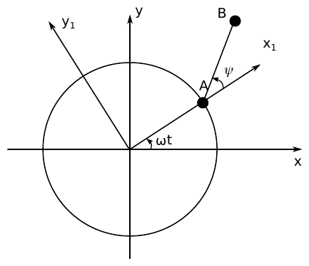
-
(a)
The relative acceleration of the skater with respect to $Ox_1y_1$ as a function of $\psi$ and its time derivatives.
-
(b)
The centripetal and Coriolis acceleration terms also as a function of $\psi$ and its time derivatives.
-
(c)
Reduce the evolution of $\psi$ to integrals of the form $\int [\ldots]\,d\psi = \int [\ldots]\,dt$ (consider that $\dot{\psi}^2 = \int 2\dot{\psi}\ddot{\psi}\,dt$).
-
(d)
Determine the tension on the bar.
-
(e)
If the rigid bar is substituted by a string which cannot bear compression, determine if/when the string will become loose.
Worked Solution [ Click to Expand ]
Reference Frames, Bases and Coordinates
A vehicle $A$ moves on the circumference of radius $a$ and centre $O$ with the constant angular velocity $\omega$, on a smooth horizontal plane; a skater $B$ of mass $m$ is joined to it by a massless rigid bar of length $a$. At the start the vehicle is at $(a, 0)$ and the skater at rest at $(2a, 0)$ (Problems.pdf, p. 8). The statement asks, in the rotating frame $Ox_1y_1$ that carries $OA$ on its first axis, for the relative acceleration, the centripetal and Coriolis terms, the reduction of the motion to quadratures, the tension of the bar and whether a string would go slack. The relative kinematics follows Notes.pdf, Sec. 3.1 and Sec. 3.2, and the dynamics in the non-inertial frame Notes.pdf, Sec. 4.9.
| Item | Definition |
|---|---|
| Fixed (inertial) frame | $S_0 = \{O;\ \mathcal B_0\}$, the frame $Oxy$ of the statement, with $\mathcal B_0 = \{\mathbf i_0, \mathbf j_0, \mathbf k_0\}$: $\mathbf i_0$ along $Ox$, $\mathbf j_0$ along $Oy$, $\mathbf k_0$ vertical, up (Notes.pdf, Eq. 2.1) |
| Moving frame | $S_1 = \{O;\ \mathcal B_1\}$, the frame $Ox_1y_1$: $\mathbf i_1$ along $OA$, $\mathbf k_1 = \mathbf k_0$, $\mathbf j_1$ the cross product of $\mathbf k_1$ and $\mathbf i_1$; it turns by the angle $\omega t$ about $\mathbf k_0$ |
| Origin of $S_1$ | the fixed point $O$ (the generic origin, called $A$ in Notes.pdf, Sec. 3.2, is here $O$; the letter $A$ stays for the vehicle, as in the statement) |
| Bar basis | $\mathcal B_2 = \{\mathbf u_{AB}, \mathbf u_\perp, \mathbf k_1\}$: $\mathbf u_{AB}$ from $A$ to $B$, $\mathbf u_\perp$ normal to the bar in the plane, in the sense of growing $\psi$ |
| Coordinate | $\psi$, the angle from $\mathbf i_1$ to the bar $AB$, measured at $A$, positive about $\mathbf k_1$ (counterclockwise seen from above) |
| Constraints | $B$ on the horizontal plane; distance $AB$ equal to $a$; in $S_1$ the vehicle is at rest at $(a, 0)$, so $B$ moves on a circle of radius $a$ about $A$, fixed in $S_1$ |
| Degrees of freedom | 3 minus 2: 1, the angle $\psi(t)$; the angle $\omega t$ of $S_1$ is prescribed |
| Data | $m$ [kg], $a$ [m], $\omega$ [rad s$^{-1}$], constant |
| Unknowns | $\psi(t)$, the bar force $T$ [N] (positive when the bar pulls $B$ towards $A$), the normal reaction of the plane $N$ [N] |
| Initial state | $\psi(0) = 0$ (skater at $(2a, 0)$); skater at rest in $S_0$ |
| Applied forces | weight $-mg\,\mathbf k_1$; the force of the bar, along the bar |
| Constraint force | normal reaction of the smooth plane, $N\,\mathbf k_1$ |
| Inertia forces (in $S_1$) | of the origin, Euler, centrifugal and Coriolis (Notes.pdf, Eq. 4.62) |
| Hypotheses | the bar is massless and hinged at both ends, so the force it exerts on $B$ lies along the bar; the plane is smooth, so its reaction is vertical; $\omega$ constant; the skater is a point particle |
Change of Basis and Position Vector
View from above, along $\mathbf k_0$, which points out of the paper (⊙) because it is the cross product of $\mathbf i_0$ (to the right) and $\mathbf j_0$ (up): a positive rotation about $\mathbf k_0$ is counterclockwise, the sense in which the vehicle turns. $\mathbf i_1$ is $\mathbf i_0$ turned by $\omega t$: hypotenuse 1, adjacent leg $\cos\omega t$ along $\mathbf i_0$, opposite leg $\sin\omega t$ along $\mathbf j_0$. $\mathbf j_1$ is $\mathbf j_0$ turned by the same angle: adjacent leg $\cos\omega t$ along $\mathbf j_0$, opposite leg $\sin\omega t$ along minus $\mathbf i_0$ (the upward vector turned counterclockwise leans to the left: the minus sign).
Units: dimensionless direction cosines: $[1]$; $[\omega t] = [\mathrm{T^{-1}}][\mathrm{T}] = [1]$
Meaning: at the start ($t$ zero) the two frames coincide; afterwards $\mathbf i_1$ always points from $O$ to the vehicle.
In $S_1$ the vehicle is at rest on the axis $Ox_1$ at the distance $a$ from $O$. From $O$ to $B$ we pass through $A$, because the bar fixes the distance from $A$. Let $F$ be the foot of the perpendicular from $B$ to the line $Ox_1$: in the right triangle $AFB$ the hypotenuse is the bar, of length $a$; the leg adjacent to $\psi$ is $a\cos\psi$ along $\mathbf i_1$ and the leg opposite to $\psi$ is $a\sin\psi$ along $\mathbf j_1$. $\psi$ is measured from $\mathbf i_1$ counterclockwise, so it is already the standard polar angle about $A$ and needs no shift. For a negative $\psi$ (the case of the motion, part (c)) the opposite leg points along minus $\mathbf j_1$ and the same formula holds.
Units: $[a] = [\mathrm{L}]$; $\psi$ dimensionless
Meaning: $\psi$ zero gives the initial point at twice $a$ on $Ox_1$; $\psi$ equal to minus $\pi$ gives the point $O$ itself.
View from above along $\mathbf k_1$, out of the paper (⊙); $\mathbf i_1$ to the right and $\mathbf j_1$ up. $\mathbf u_{AB}$ is $\mathbf i_1$ turned by $\psi$: hypotenuse 1, adjacent leg $\cos\psi$ along $\mathbf i_1$, opposite leg $\sin\psi$ along $\mathbf j_1$. $\mathbf u_\perp$ is $\mathbf j_1$ turned by $\psi$: adjacent leg $\cos\psi$ along $\mathbf j_1$, opposite leg $\sin\psi$ along minus $\mathbf i_1$ (the upward vector turned counterclockwise leans to the left: the minus sign).
Units: dimensionless: $[1]$
Meaning: the bar force acts along $\mathbf u_{AB}$ only, so projecting on $\mathbf u_\perp$ will give an equation free of the unknown tension.
Kinematics
Units: $[\omega] = [\mathrm{T^{-1}}]$
Meaning: seen from $S_0$ the unit vectors of $S_1$ turn with the vehicle; seen from $S_1$ they are constant.
Units: $[a\dot\psi] = [a\omega] = [\mathrm{L\,T^{-1}}]$
Meaning: the relative term comes from differentiating the components, the transport term from differentiating the turning unit vectors; it is the form of Eq. 3.20 with the origin at rest.
Units: every term $[\mathrm{L\,T^{-2}}]$
Meaning: one Coriolis half comes from the turning of $\mathbf i_1$, $\mathbf j_1$ inside the relative velocity, the other from the change of the relative position inside the transport term; with the origin at rest and constant $\omega$ the origin and Euler terms of Eq. 3.27 are absent.
(a) Relative acceleration
Units: $[a\ddot\psi] = [a\dot\psi^2] = [\mathrm{L\,T^{-2}}]$
Meaning: in $S_1$ the skater moves on a circle of radius $a$ about $A$: a tangential part along the normal of the bar and a centripetal part pointing from $B$ towards $A$.
(b) Centripetal and Coriolis terms
Units: $[a\omega^2] = [a\omega\dot\psi] = [\mathrm{L\,T^{-2}}]$
Meaning: the centripetal term is $\omega^2$ times the position vector, reversed: it points from $B$ towards the axis through $O$, because the whole of $\mathbf r_1^B$ lies in the plane normal to $\boldsymbol\omega_{10}$. The Coriolis term lies along the bar.
Forces and Equations of Motion
The free-body diagram of the skater in $S_1$ shows the weight and the normal reaction of the plane (both vertical), the bar force along the bar, and the two inertia forces that do not vanish: the centrifugal force, away from $O$, and the Coriolis force, along the bar. The inertia force of the origin and the Euler force vanish because $O$ is fixed and $\omega$ is constant.
Units: $[ma\omega^2] = [ma\omega\dot\psi] = [\mathrm{M\,L\,T^{-2}}]$
Meaning: the centrifugal force pushes $B$ away from $O$; its part normal to the bar turns the bar back towards the axis $Ox_1$, like the weight of a pendulum hung from $A$.
Units: $[\ddot\psi] = [\omega^2] = [\mathrm{T^{-2}}]$; $[T] = [ma\dot\psi^2] = [\mathrm{M\,L\,T^{-2}}]$
Meaning: three scalar equations for the three unknowns $\psi$, $T$ and $N$. In $S_1$ the skater swings like a pendulum of length $a$ hung from $A$, with the effective field $a\omega^2$ pointing along plus $\mathbf i_1$, away from $O$; $\psi$ zero is its stable bottom. The analogy is exact for the motion (the component along $\mathbf u_\perp$) but not for the tension: along the bar the centrifugal force is $ma\omega^2(1 + \cos\psi)$, not the $ma\omega^2\cos\psi$ of a uniform field, and the Coriolis force adds to it.
Answers and Checks
(c) Reduction to quadratures
Units: $[\dot\psi^2] = [\omega^2] = [\mathrm{T^{-2}}]$
Meaning: the rate squared depends on the position only; the initial rate is still to be found from the condition that the skater starts at rest in $S_0$.
Units: $[\dot\psi] = [\omega] = [\mathrm{T^{-1}}]$
Meaning: seen from $S_1$, which turns counterclockwise, a skater at rest in $S_0$ moves clockwise: her relative velocity must cancel the transport velocity of the point at twice $a$ from the axis, of magnitude $2a\omega$.
The rate is a continuous function of time. Between minus $\pi$ and $\pi$ the factor $\cos(\psi/2)$ is positive, so the rate cannot vanish there and keeps the sign it has at the start, negative: $\psi$ decreases from 0 and stays between minus $\pi$ and 0.
Units: both integrals dimensionless; $[\omega\,dt] = [1]$
Meaning: this is the form asked for in the statement; the next box evaluates it.
With the substitution $w = \psi'/2$ the differential is $d\psi' = 2\,dw$ and the limits 0 and $\psi$ become 0 and $\psi/2$. The antiderivative of $1/\cos w$ is $\ln|\sec w + \tan w|$; its derivative is $(\sec w\tan w + \sec^2 w)/(\sec w + \tan w) = \sec w$.
Units: $[\omega t] = [1]$
Meaning: $\psi$ starts at 0 and tends to minus $\pi$ as $t$ grows, without reaching it in a finite time: with a rigid bar the skater creeps towards the centre $O$. The rate written with the hyperbolic cosine has the value $-2\omega$ at the start, as the initial-rate box requires.
(d) Tension on the bar
Write $c$ for $\cos(\psi/2)$, positive during the motion.
Units: $[ma\omega^2] = [\mathrm{M}][\mathrm{L}][\mathrm{T^{-2}}] = [\mathrm{M\,L\,T^{-2}}]$, a force
Meaning: at the start ($c$ equal to 1) the bar pulls with $2ma\omega^2$; the pull decreases as the skater swings in and turns into a push later on.
(e) String instead of the bar
While the string is taut it behaves as the bar, so the motion and the tension are those found above. $c$ is the reciprocal of $\cosh\omega t$, so it decreases monotonically from 1 towards 0; the factor $c$ stays positive and the factor $3c - 2$ changes sign once.
Units: $[t_\ell] = [\omega^{-1}] = [\mathrm{T}]$; angles dimensionless
Meaning: yes, it goes slack, once, after the string has turned 96.38 degrees clockwise from $Ox_1$ (it lags behind the vehicle), when the skater is at four thirds of $a$ from the centre. From then on, until the string becomes taut again (not studied here), no force acts in the plane and the skater moves in a straight line in $S_0$.
| Part of the statement | Answer |
|---|---|
| (a) Relative acceleration | $\mathbf a_1^B = -a\left(\ddot\psi\sin\psi + \dot\psi^2\cos\psi\right)\mathbf i_1 + a\left(\ddot\psi\cos\psi - \dot\psi^2\sin\psi\right)\mathbf j_1 = a\ddot\psi\,\mathbf u_\perp - a\dot\psi^2\,\mathbf u_{AB}$ |
| (b) Centripetal term | $\boldsymbol\omega_{10}\times(\boldsymbol\omega_{10}\times\mathbf r_1^B) = -a\omega^2\left[(1 + \cos\psi)\mathbf i_1 + \sin\psi\,\mathbf j_1\right]$ |
| (b) Coriolis term | $2\boldsymbol\omega_{10}\times\mathbf v_1^B = -2a\omega\dot\psi\left(\cos\psi\,\mathbf i_1 + \sin\psi\,\mathbf j_1\right)$ |
| (c) Equation of motion and quadrature | $\ddot\psi + \omega^2\sin\psi = 0$; $\dot\psi = -2\omega\cos(\psi/2)$ for $-\pi \lt \psi \le 0$; $\int_0^{\psi}d\psi'/(2\cos(\psi'/2)) = -\int_0^t\omega\,dt'$, giving $\psi = 4\arctan(e^{-\omega t}) - \pi$ |
| (d) Tension | $T = 2ma\omega^2\cos(\psi/2)\left(3\cos(\psi/2) - 2\right)$ |
| (e) String | goes slack at $\psi = -2\arccos(2/3) \simeq -96.38^\circ$, at $t = \ln\frac{3 + \sqrt5}{2}/\omega \simeq 0.9624/\omega$ |
| Normal reaction of the plane | $N = mg$ |
Check against the official key: Problems.pdf, p. 72 prints the Coriolis acceleration, the "centrifugal acceleration" (the term called centripetal here, as in Notes.pdf, Eq. 3.25), the first-order equation of motion with its range, the tension and the angle at which the string goes slack. The box below sets them side by side with the results above: every one coincides, so there is no discrepancy.
Units: accelerations $[\mathrm{L\,T^{-2}}]$, rate $[\mathrm{T^{-1}}]$, tension $[\mathrm{M\,L\,T^{-2}}]$
Meaning: the key calls centrifugal acceleration the term that Notes.pdf calls centripetal; it is the same vector, pointing towards the axis.
Two reasons make the energy in $S_1$ a constant. First, the forces that do work in $S_1$ have a potential: $\boldsymbol\omega_{10}$ is constant, so the centrifugal force derives from $-\tfrac12 m\omega^2 r_\perp^2$, where $r_\perp$ is the distance to the axis through $O$ (here the whole of $|\mathbf r_1^B|$), while the force of the origin and the Euler force vanish. Second, the other forces do no work in $S_1$: the bar force lies along $\mathbf u_{AB}$, normal to the relative velocity along $\mathbf u_\perp$; the Coriolis force is normal to the relative velocity; the weight and the normal reaction are vertical.
Units: $[ma^2\omega^2] = [\mathrm{M\,L^2\,T^{-2}}]$, an energy
Meaning: the energy route, which never uses the equation of motion, gives the same first integral; the energy is exactly that of the separatrix of the effective pendulum, which is why the skater only creeps towards the top position at $\psi$ equal to minus $\pi$.
Units: $[a\omega^2] = [\mathrm{L\,T^{-2}}]$
Meaning: at rest in $S_0$, the skater is set in motion by the bar alone, which pulls her towards the vehicle; the inertial frame gives the same tension as the rotating one.
Units: $[T] = [\mathrm{M\,L\,T^{-2}}]$
Meaning: a rigid bar pushes the skater after the instant at which a string would go slack, and the push dies out as she approaches the centre.
Two trains, $A$ and $B$, are moving along parallel tracks. The separation between the tracks is $a$. The absolute velocity of each train is $v_A$ and $v_B$, respectively. What is the relative velocity of each train with respect to the other?
Solve the same problem considering that the train $B$ is now moving along a circular track of radius $R$. The minimum distance between the circular track and the straight track of $A$ is $a$.
Worked Solution [ Click to Expand ]
Reference Frames, Bases and Coordinates
Two trains $A$ and $B$ run on parallel tracks separated by the distance $a$, with absolute velocities $v_A$ and $v_B$; the statement asks for the velocity of each train relative to the other, first for the two straight tracks and then when train $B$ runs on a circular track of radius $R$ whose minimum distance to the straight track of $A$ is $a$ (Problems.pdf, p. 8). The problem is kinematic only: both motions are given. The observer of each train is read as a reference frame attached to it; on the circular track that frame turns with train $B$ (a reading: an observer on $B$ that only translates is also considered in the answers), and the velocity seen by a moving observer follows from the derivative of a vector in a moving frame, Notes.pdf, Sec. 3.1 and Sec. 3.2.
| Item | Definition |
|---|---|
| Fixed (inertial) frame | $S_0 = \{O;\ \mathcal B_0\}$, the ground; $\mathcal B_0 = \{\mathbf i_0, \mathbf j_0, \mathbf k\}$: $\mathbf i_0$ along the track of $A$, $\mathbf j_0$ towards the track of $B$ in the plane of the tracks, $\mathbf k$ the cross product of $\mathbf i_0$ and $\mathbf j_0$, normal to that plane (Notes.pdf, Eq. 2.1) |
| Origin $O$ | the position of train $A$ at the initial instant |
| Frame of train $A$ | $S_A = \{A;\ \mathcal B_0\}$: origin on the train, axes parallel to the ground axes, since a train on a straight track does not turn |
| Frame of train $B$, case 1 | $S_B = \{B;\ \mathcal B_0\}$, for the same reason |
| Frame of train $B$, case 2 | $S_B = \{B;\ \mathcal B_B\}$, $\mathcal B_B = \{\mathbf i_B, \mathbf j_B, \mathbf k\}$: $\mathbf i_B$ along the track in the sense of motion, $\mathbf j_B$ from the train towards the centre $C$ of the track; it turns with the train |
| Notation | $\mathbf v_A^B$: velocity of train $B$ relative to $S_A$; $\mathbf v_B^A$: velocity of train $A$ relative to $S_B$ (subscript the frame, superscript the point, as in Notes.pdf, Eq. 3.19) |
| Coordinates | case 1: abscissas of the trains along $\mathbf i_0$; case 2: abscissa of $A$ and the angle $\theta_B$ of the segment from $C$ to $B$, measured at $C$ from the downward vertical (minus $\mathbf j_0$), positive about $\mathbf k$ |
| Degrees of freedom | 1 per train (each is constrained to its track), both prescribed: no unknown coordinate |
| Data | $a$ [m], $R$ [m], $v_A$, $v_B$ [m s$^{-1}$]; angular rate of train $B$ on the circle $\omega_B = v_B/R$ [rad s$^{-1}$] |
| Hypotheses | the tracks lie in one plane; the speeds are constant; $v_A$ and $v_B$ are signed components (positive along $\mathbf i_0$ where the trains are side by side; a train running the other way has a negative value); at the initial instant $A$ is at $O$ and $B$ at the point of its track closest to the track of $A$; the case 2 answers hold for this initial configuration: with $A$ starting at the abscissa $x_{A0}$ the observer on $B$ reads $[v_A - v_B(R + a)/R]\,\mathbf i_0 - (v_B/R)(x_{A0} + v_A t)\,\mathbf j_0$, and another initial angle of $B$ shifts every sine and cosine of $\theta_B$ |
| Unknowns | the relative velocities $\mathbf v_A^B$ and $\mathbf v_B^A$ in each case |
Change of Basis and Position Vector
Case 1: parallel straight tracks
$x_{B0}$ is the abscissa of $B$ at the initial instant (any value; it does not enter the velocities).
Units: $[v_A t] = [\mathrm{L\,T^{-1}}][\mathrm{T}] = [\mathrm{L}]$; $[a] = [\mathrm{L}]$
Meaning: seen from $A$, train $B$ stays at the distance $a$ across and slides along the tracks.
Case 2: train B on a circular track
The closest point of the circle to the straight track lies on the perpendicular from the centre $C$, so $C$ is at the height $R + a$ above $O$ (its lowest point is then at the height $a$). From $O$ to $B$ we pass through $C$, because the distance from $C$ is the one that stays constant. Let $F$ be the point of the vertical through $C$ at the height of $B$: in the right triangle $CFB$ the hypotenuse is $R$; the leg opposite to $\theta_B$ is $R\sin\theta_B$, horizontal, along $\mathbf i_0$; the leg adjacent to $\theta_B$ is $R\cos\theta_B$, vertical, pointing down, along minus $\mathbf j_0$. The angle $\theta_B$ is measured from the downward vertical, not from $\mathbf i_0$: the standard polar angle about $C$ is $\varphi = \theta_B - \pi/2$, and the last two rows show that the standard form gives the same vector.
Units: $[R] = [a] = [\mathrm{L}]$; $[v_B t/R] = [1]$
Meaning: at the initial instant train $B$ is at the height $a$ just above train $A$; with a positive $v_B$ it moves counterclockwise, along plus $\mathbf i_0$ at that point, like $A$.
View along $\mathbf k$, which points out of the paper (⊙) because it is the cross product of $\mathbf i_0$ (to the right) and $\mathbf j_0$ (up). The tangent is the derivative of $\overrightarrow{CB}$ with respect to the angle, divided by its length $R$. $\mathbf i_B$ is then $\mathbf i_0$ turned by $\theta_B$: hypotenuse 1, adjacent leg $\cos\theta_B$ along $\mathbf i_0$, opposite leg $\sin\theta_B$ along $\mathbf j_0$. $\mathbf j_B$ is $\mathbf j_0$ turned by the same angle: adjacent leg $\cos\theta_B$ along $\mathbf j_0$, opposite leg $\sin\theta_B$ along minus $\mathbf i_0$ (the upward vector turned counterclockwise leans to the left: the minus sign).
Units: dimensionless: $[1]$
Meaning: the frame of train $B$ turns by the same angle $\theta_B$ as the radius $CB$: the train always points along the track and its second axis always points to the centre.
Units: $[x] = [y] = [\mathrm{L}]$
Meaning: at the initial instant train $A$ is at the distance $a$ from $B$ along minus $\mathbf j_B$, on the side opposite to the centre $C$.
Kinematics
Case 1
The frames $S_A$ and $S_B$ have the basis $\mathcal B_0$, whose unit vectors are constant: the derivative in either frame is the derivative of the components.
Units: $[\mathrm{L\,T^{-1}}]$
Meaning: each observer sees the other train move along the tracks with the difference of the speeds; the separation $a$ does not enter, because it is a constant part of the relative position.
Case 2
Units: $[v_B] = [\mathrm{L\,T^{-1}}]$; $[\omega_B] = [\mathrm{T^{-1}}]$
Meaning: train $B$ keeps its speed but turns its direction; its frame turns at the rate of the radius $CB$.
Units: $[\mathrm{L\,T^{-1}}]$; inside the root $[\mathrm{L^2\,T^{-2}}]$
Meaning: the observer on $A$ does not turn, so he sees the plain difference of the two absolute velocities, which changes only because $B$ turns.
The relative velocity is the derivative in $S_B$, in which $\mathbf i_B$ and $\mathbf j_B$ are constant: the derivative of the components $x$ and $y$.
Units: $[v_B(R + a)/R] = [v_Av_Bt/R] = [\mathrm{L\,T^{-1}}]$
Meaning: the observer on $B$ turns with the train, so to the difference of the absolute velocities he adds minus the transport term: the ground itself seems to turn about him, and the component along minus $\mathbf j_0$ grows linearly with time, with the distance travelled by $A$.
Units: $[\mathrm{L\,T^{-1}}]$
Meaning: the three terms rebuild the absolute velocity of train $A$, as Eq. 3.20 requires: the relative velocity of the previous box is consistent.
Answers and Checks
Case 1: parallel tracks
Units: $[\mathrm{L\,T^{-1}}]$
Meaning: for trains running the same way the relative speed is the difference of the speeds; for opposite senses (a negative signed value) it is their sum.
Case 2: train B on a circular track
Units: $[\mathrm{L\,T^{-1}}]$
Meaning: with the reading of an observer that turns with $B$, the two answers are no longer opposite: the observer on $B$ turns, and the transport term adds to his reading a part proportional to the distance of $A$ from him, which here grows with time. With the other reading, an observer on $B$ that does not turn, the answer is just minus the velocity of $B$ relative to $A$.
| Part of the statement | Answer |
|---|---|
| Case 1, velocity of $B$ relative to $A$ | $\mathbf v_A^B = (v_B - v_A)\,\mathbf i_0$ |
| Case 1, velocity of $A$ relative to $B$ | $\mathbf v_B^A = (v_A - v_B)\,\mathbf i_0$ |
| Case 2, velocity of $B$ relative to $A$ | $\mathbf v_A^B = (v_B\cos(v_Bt/R) - v_A)\,\mathbf i_0 + v_B\sin(v_Bt/R)\,\mathbf j_0$, modulus $\sqrt{v_A^2 + v_B^2 - 2v_Av_B\cos(v_Bt/R)}$ |
| Case 2, velocity of $A$ relative to $B$, observer not turning (other reading) | $\mathbf v_{B'}^A = -\mathbf v_A^B = (v_A - v_B\cos(v_Bt/R))\,\mathbf i_0 - v_B\sin(v_Bt/R)\,\mathbf j_0$ |
| Case 2, velocity of $A$ relative to $B$ (frame turning with $B$) | $\mathbf v_B^A = [v_A - v_B(R + a)/R]\,\mathbf i_0 - (v_Av_Bt/R)\,\mathbf j_0$; in the basis of the train, $\dot x\,\mathbf i_B + \dot y\,\mathbf j_B$ with $\dot x$ and $\dot y$ of the kinematics box |
| Intermediate results | $\omega_B = v_B/R$; $\mathbf r_B^A = x\,\mathbf i_B + y\,\mathbf j_B$ with $x = v_At\cos\theta_B - (R + a)\sin\theta_B$, $y = R - (R + a)\cos\theta_B - v_At\sin\theta_B$ |
Check against the official key: Problems.pdf, p. 72 lists item 8 with no answer, so there is no key to compare with. Independent checks: the composition box rebuilds the absolute velocity of train $A$ from the three terms of Notes.pdf, Eq. 3.20, and the limiting cases below give back case 1.
Units: $[a\,v_B/R] = [\mathrm{L\,T^{-1}}]$
Meaning: even at the start, when the two trains run side by side and parallel, the turning observer on $B$ reads a different speed for $A$, by the fraction $a/R$ of $v_B$, because $A$ is at the distance $a$ from the axis about which he turns; the difference disappears for a straight track.
In "2001: A Space Odyssey" an idea to obtain artificial gravity in a spaceship was presented. It consists of a cylinder rotating at constant angular velocity around its axis. The astronauts would live in the inner surface of the cylinder and the centrifugal force would act as artificial gravity.
-
(a)
If the cylinder has radius $R$, determine the angular velocity $\omega$ required to obtain a given level artificial gravity $g$. Consider $R = 10$ m and $g = 9.81$ m/s$^2$ for a particular case.
-
(b)
An astronaut runs inside the surface of the cylinder with a constant speed $u$ with respect to the cylinder. Determine the artificial gravity that she feels (neglect the height of the astronaut $h$ with respect to the radius of the cylinder $R$, $h \ll R$).
-
(c)
What is the condition for her to feel no artificial gravity at all?
Worked Solution [ Click to Expand ]
Reference Frames, Bases and Coordinates
A cylindrical spaceship of radius $R$ spins with constant angular velocity $\omega$ about its axis, and the astronauts live on its inner surface, where the centrifugal force plays the part of gravity (Problems.pdf, p. 8). The statement asks for the spin rate that gives the artificial gravity $g$ (with $R$ of 10 m and $g$ of 9.81 m/s$^2$), for the artificial gravity felt by an astronaut running on the surface with the constant speed $u$ relative to the cylinder, and for the condition to feel none. What the astronaut feels is defined in the frame of the hull, so the solution works in that frame with the inertia forces of Notes.pdf, Sec. 4.9, after deriving the composition of motions of Notes.pdf, Sec. 3.2.
| Item | Definition |
|---|---|
| Fixed (inertial) frame | $S_0 = \{O;\ \mathcal B_0\}$, $O$ on the axis of the cylinder, $\mathcal B_0 = \{\mathbf i_0, \mathbf j_0, \mathbf k_0\}$ with $\mathbf k_0$ along the axis (Notes.pdf, Eq. 2.1) |
| Moving frame | $S_1 = \{O;\ \mathcal B_1\}$ fixed to the hull, $\mathcal B_1 = \{\mathbf i_1, \mathbf j_1, \mathbf k_1\}$, $\mathbf k_1 = \mathbf k_0$; it coincides with $S_0$ at the initial instant and turns by $\omega t$ |
| Cylindrical basis (in $S_1$) | $\mathcal B_2 = \{\mathbf e_r, \mathbf e_\theta, \mathbf k_1\}$ at the astronaut: $\mathbf e_r$ from the axis to the floor, $\mathbf e_\theta$ along the floor in the sense of rotation, $\mathbf k_1$ along the axis |
| Coordinates | $\varphi$, the azimuth of the astronaut in $S_1$, measured from $\mathbf i_1$ about $\mathbf k_1$; $z$, her position along the axis |
| Constraint | she stays on the floor: distance $R$ from the axis |
| Degrees of freedom | 3 minus 1: 2, $\varphi$ and $z$, both prescribed by her running |
| Running velocity | $u_\theta = R\dot\varphi$ (along $\mathbf e_\theta$, positive in the sense of rotation) and $u_z = \dot z$ (along the axis), constant; $\gamma$ is the angle between the running direction and $\mathbf e_\theta$, so that $u_\theta = u\cos\gamma$ and $u_z = u\sin\gamma$ |
| Data | $R$ [m] (10 m), $g$ [m s$^{-2}$] (9.81 m s$^{-2}$), $u$ [m s$^{-1}$], $m$ [kg] the mass of the astronaut |
| Unknowns | (a) $\omega$ [rad s$^{-1}$]; (b) and (c) the floor force $\mathbf N$ [N] and the artificial gravity it means |
| Applied forces | none other than the floor: no external gravity (deep space) |
| Constraint force | the total force of the floor on her feet, $\mathbf N$ (normal part and any friction) |
| Inertia forces (in $S_1$) | of the origin, Euler, centrifugal and Coriolis (Notes.pdf, Eq. 4.62) |
| Artificial gravity | what she feels as weight is the force she must receive from the floor: $g_{art}$ is the magnitude of $\mathbf N$ per unit mass, felt in the direction opposite to $\mathbf N$ (the reading of a scale under her feet). Another reading, the sum of the inertia forces per unit mass, $\omega^2R + 2\omega u\cos\gamma$, would vanish at the circumferential running speed $-\omega R/2$; it is rejected because there the floor still pushes her with $m u_\theta^2/R$, so a scale would not read zero |
| Hypotheses | $\omega$ constant; $O$ fixed in an inertial frame; her height $h$ is negligible against $R$ (statement), so she is a point particle at the distance $R$ from the axis; the running is uniform (constant components) |
Change of Basis and Position Vector
Cross-section seen along the axis, $\mathbf k_0$ out of the paper (⊙) because it is the cross product of $\mathbf i_0$ (to the right) and $\mathbf j_0$ (up); a positive $\omega$ turns the hull counterclockwise. $\mathbf i_1$ is $\mathbf i_0$ turned by $\omega t$: hypotenuse 1, adjacent leg $\cos\omega t$ along $\mathbf i_0$, opposite leg $\sin\omega t$ along $\mathbf j_0$. $\mathbf j_1$ is $\mathbf j_0$ turned by the same angle: adjacent leg $\cos\omega t$ along $\mathbf j_0$, opposite leg $\sin\omega t$ along minus $\mathbf i_0$ (the upward vector turned counterclockwise leans to the left: the minus sign).
Units: dimensionless: $[1]$
Meaning: the hull axes follow the hull; seen from them the floor is at rest.
Same view along the axis (⊙). $\mathbf e_r$ is $\mathbf i_1$ turned by $\varphi$: hypotenuse 1, adjacent leg $\cos\varphi$ along $\mathbf i_1$, opposite leg $\sin\varphi$ along $\mathbf j_1$. $\mathbf e_\theta$ is $\mathbf j_1$ turned by $\varphi$: adjacent leg $\cos\varphi$ along $\mathbf j_1$, opposite leg $\sin\varphi$ along minus $\mathbf i_1$ (the minus sign, for the same reason). From $O$ we go along the axis to the cross-section of the astronaut and then out along the radius to the floor.
Units: $[R] = [z] = [\mathrm{L}]$
Meaning: the part of the position normal to the spin axis is $R\,\mathbf e_r$, the same for every cross-section: every point of the floor is at the distance $R$ from the axis.
The tangent plane of the floor at the astronaut contains $\mathbf e_\theta$ (around the hull) and $\mathbf k_1$ (along it); the figure shows it from outside, with $\mathbf e_r$ out of the paper (⊙), since $\mathbf e_\theta\times\mathbf k_1 = \mathbf e_r$. The running velocity is the hypotenuse $u$ of a right triangle; its leg along $\mathbf e_\theta$ is adjacent to $\gamma$ and its leg along $\mathbf k_1$ is opposite.
Units: $[u] = [\mathrm{L\,T^{-1}}]$; $[\dot\varphi] = [\mathrm{T^{-1}}]$
Meaning: $\gamma$ zero is running around the hull in the sense of rotation, $\gamma$ equal to $\pi$ against it, and $\gamma$ equal to $\pi/2$ along the axis.
Kinematics
Units: $[\dot\varphi] = [\omega] = [\mathrm{T^{-1}}]$
Meaning: seen from the hull the cylindrical basis turns with her running only; seen from inertial space it turns with her running plus the spin, which is the extra part $\boldsymbol\omega_{10}$ applied to each unit vector.
Units: $[u_\theta^2/R] = [\mathrm{L\,T^{-2}}]$
Meaning: in the hull she runs on a helix of radius $R$ (a circle when she runs around, a straight line along the axis), and only the part around the hull bends her path.
Units: every term $[\mathrm{L\,T^{-2}}]$: $[u_\theta^2/R] = [\omega u_\theta] = [\omega^2R]$
Meaning: the three terms of the expanded square are the relative, Coriolis and centripetal accelerations of Eq. 3.25 (the origin and Euler terms vanish); the axial running gives none of them.
Forces and Equations of Motion
The free-body diagram of the astronaut in $S_1$ shows the floor force, the centrifugal force away from the axis and the Coriolis force, which is radial too. There is no weight in deep space; the inertia force of the origin and the Euler force vanish ($O$ fixed, $\omega$ constant).
Units: $[m\,\omega^2R] = [\mathrm{M\,L\,T^{-2}}]$
Meaning: three scalar equations give the three components of the floor force; it points to the axis and has no part along the floor, so uniform running needs no friction.
Answers and Checks
(a) Spin rate for the artificial gravity g
Units: $[\sqrt{g/R}] = [\mathrm{L\,T^{-2}}\,\mathrm{L^{-1}}]^{1/2} = [\mathrm{T^{-1}}]$
Meaning: the floor pushes her towards the axis with the force $m\omega^2R$, and she reads it as a weight pointing away from the axis, towards the floor; the floor itself moves at 9.90 m/s in inertial space.
(b) Artificial gravity while running
Units: $[\omega u] = [u^2/R] = [g] = [\mathrm{L\,T^{-2}}]$
Meaning: with the data of part (a), running at 2 m/s around the hull gives 14.17 m/s$^2$ (1.44 g) with the rotation and 6.25 m/s$^2$ (0.64 g) against it; at 5 m/s, 22.21 m/s$^2$ (2.26 g) and 2.41 m/s$^2$ (0.25 g).
(c) Condition for no artificial gravity
Units: $[\omega R] = [\mathrm{L\,T^{-1}}]$
Meaning: she must run against the rotation so fast that the part of her running around the hull cancels the speed of the floor; she is then at rest in inertial space (or drifts uniformly along the axis if she also runs along it), no force is needed and the floor slides under her feet. A speed below 9.90 m/s, a sprinter's speed, cannot achieve it.
| Part of the statement | Answer |
|---|---|
| (a) Spin rate | $\omega = \sqrt{g/R} = 0.9905$ rad/s for $R = 10$ m and $g = 9.81$ m/s$^2$ (one turn in 6.34 s, 9.46 rpm) |
| (b) Artificial gravity while running | $g_{art} = (\omega R + u\cos\gamma)^2/R = g + 2\omega u\cos\gamma + u^2\cos^2\gamma/R$, felt away from the axis; the floor force is $\mathbf N = -m(\omega R + u_\theta)^2\,\mathbf e_r/R$ |
| (c) No artificial gravity | $u_\theta = -\omega R$: the part of the running velocity around the hull equal to the floor speed $\sqrt{gR}$ (9.90 m/s), against the rotation; any axial part is allowed; it needs $u \ge \omega R$ |
| Intermediate results | $\mathbf a_1^P = -u_\theta^2\,\mathbf e_r/R$; Coriolis acceleration $-2\omega u_\theta\,\mathbf e_r$; centripetal acceleration $-\omega^2R\,\mathbf e_r$; $\mathbf v_0^P = (\omega R + u_\theta)\,\mathbf e_\theta + u_z\,\mathbf k_1$ |
Check against the official key: Problems.pdf, p. 72 lists item 9 with no answer, so there is no key to compare with. Independent checks: the inertial reading below gives the same floor force without inertia forces, and the limiting cases close the results.
Units: $[\mathrm{M\,L\,T^{-2}}]$
Meaning: in inertial space she moves on a circle or helix of radius $R$ with the speed around the axis $\omega R + u_\theta$, so the floor must provide the centripetal force of that speed; the rotating observer splits the same force into the centrifugal, Coriolis and relative parts.
Units: $2u/\sqrt{gR}$ is dimensionless
Meaning: a runner in a small hull feels a large change of weight (about 40 percent at 2 m/s in the hull of 10 m, to first order), which is why large habitats are more comfortable.
A heavy particle is moving along a smooth circumference of radius $R$ and center $O$. One of the diameters of the circumference is along the local vertical, and the circumference is rotating with constant angular velocity $\omega$ about it. The position of the particle with respect to the circumference is described by the angle $\theta$ between the particle and the lowest point of the circumference.
-
(a)
Discuss the conservation of mechanical energy in the moving reference frame and compute its value.
-
(b)
Compute the reaction of the circumference in the direction normal to its plane, as a function of $\theta$.
Worked Solution [ Click to Expand ]
Reference Frames, Bases and Coordinates
A heavy particle moves along a smooth circumference of radius $R$ and centre $O$; one diameter is vertical and the circumference turns about it with the constant angular velocity $\omega$; $\theta$ is the angle between the particle and the lowest point (Problems.pdf, p. 10). The statement asks to discuss the conservation of the mechanical energy in the moving frame and compute its value, and for the reaction of the circumference normal to its plane as a function of $\theta$. The wire is fixed in the frame that turns with it, so the solution works in that frame, with the composition of motions of Notes.pdf, Sec. 3.2 and the inertia forces of Notes.pdf, Sec. 4.9.
| Item | Definition |
|---|---|
| Fixed (inertial) frame | $S_0 = \{O;\ \mathcal B_0\}$, $\mathcal B_0 = \{\mathbf i_0, \mathbf j_0, \mathbf k_0\}$, $\mathbf k_0$ vertical, up, along the axis of rotation (Notes.pdf, Eq. 2.1) |
| Moving frame | $S_1 = \{O;\ \mathcal B_1\}$ attached to the circumference: $\mathbf k_1 = \mathbf k_0$; $\mathbf i_1$ horizontal, in the plane of the circumference, on the side where $\theta$ is positive; $\mathbf j_1$ the cross product of $\mathbf k_1$ and $\mathbf i_1$, normal to the plane of the circumference; it turns by $\omega t$ about $\mathbf k_0$ |
| Wire basis | $\mathcal B_2 = \{\mathbf e_r, \mathbf e_\theta, -\mathbf j_1\}$: $\mathbf e_r$ from $O$ to the particle $P$, $\mathbf e_\theta$ tangent to the circumference in the sense of growing $\theta$ |
| Coordinate | $\theta$, the angle at $O$ from the downward vertical to $OP$, positive towards $\mathbf i_1$ |
| Constraints | $P$ on the circumference: distance $R$ from $O$ and plane of the circumference, both fixed in $S_1$; smooth and bilateral (a bead on the wire) |
| Degrees of freedom | 3 minus 2: 1, the angle $\theta(t)$ |
| Data | $m$ [kg], $R$ [m], $\omega$ [rad s$^{-1}$], $g$ [m s$^{-2}$]; initial values $\theta_0$ [rad] and $\dot\theta_0$ [rad s$^{-1}$] (not given in the statement, kept as symbols) |
| Unknowns | $\theta(t)$; reaction $\mathbf N = N_r\,\mathbf e_r + N_b\,\mathbf j_1$ (normal subspace of a curve, Notes.pdf, Eq. 6.16): $N_r$ in the plane, $N_b$ normal to it |
| Applied force | weight $-mg\,\mathbf k_1$ |
| Inertia forces (in $S_1$) | of the origin, Euler, centrifugal and Coriolis (Notes.pdf, Eq. 4.62) |
| Hypotheses | $S_0$ inertial with $O$ fixed; uniform gravity; $\omega$ constant; smooth wire, so the reaction has no component along the tangent |
Change of Basis and Position Vector
Top view along $\mathbf k_0$, out of the paper (⊙) because it is the cross product of $\mathbf i_0$ (to the right) and $\mathbf j_0$ (up); the circumference is seen edge-on, along $\mathbf i_1$, and turns counterclockwise. $\mathbf i_1$ is $\mathbf i_0$ turned by $\omega t$: hypotenuse 1, adjacent leg $\cos\omega t$ along $\mathbf i_0$, opposite leg $\sin\omega t$ along $\mathbf j_0$. $\mathbf j_1$ is $\mathbf j_0$ turned by the same angle: adjacent leg $\cos\omega t$ along $\mathbf j_0$, opposite leg $\sin\omega t$ along minus $\mathbf i_0$ (the upward vector turned counterclockwise leans to the left: the minus sign).
Units: dimensionless: $[1]$
Meaning: $\mathbf j_1$ is horizontal and normal to the plane of the circumference: the direction of the reaction asked for in part (b).
Plane of the circumference, fixed in $S_1$, drawn with $\mathbf i_1$ to the right and $\mathbf k_1$ up; then $\mathbf j_1$, the cross product of $\mathbf k_1$ (up) and $\mathbf i_1$ (right), points into the paper (⊗), and minus $\mathbf j_1$ out of it. Let $F$ be the point of the vertical diameter at the height of $P$: in the right triangle $OFP$ the hypotenuse is $R$; the leg opposite to $\theta$ is $R\sin\theta$, horizontal, along $\mathbf i_1$; the leg adjacent to $\theta$ is $R\cos\theta$, vertical, pointing down, along minus $\mathbf k_1$ (the minus sign: $\theta$ is measured from the downward vertical). The standard polar angle of this plane, measured from $\mathbf i_1$ towards $\mathbf k_1$, is $\theta - \pi/2$. The tangent is the derivative of $\mathbf e_r$ with respect to $\theta$.
Units: $[R] = [\mathrm{L}]$; direction cosines dimensionless
Meaning: $\theta$ zero is the lowest point and $\theta$ equal to $\pi/2$ the end of the horizontal diameter; the distance of $P$ to the axis is the horizontal leg $R\sin\theta$.
Kinematics
Units: $[\omega] = [\dot\theta] = [\mathrm{T^{-1}}]$
Meaning: in $S_1$ only the wire basis turns, with the particle; in $S_0$ the whole plane turns about the vertical as well.
Units: $[R\dot\theta] = [\mathrm{L\,T^{-1}}]$; $[R\ddot\theta] = [R\dot\theta^2] = [\mathrm{L\,T^{-2}}]$
Meaning: in $S_1$ the particle moves on a fixed circle: a tangential acceleration and a centripetal one towards $O$.
Units: every acceleration term $[\mathrm{L\,T^{-2}}]$
Meaning: the Coriolis acceleration is normal to the plane of the wire; it appears because the distance to the axis changes while the plane turns. The centripetal one points horizontally to the axis.
Forces and Equations of Motion
The free-body diagram of the particle in $S_1$ shows the weight, the reaction (in the plane along $\mathbf e_r$, normal to the plane along $\mathbf j_1$), the centrifugal force, horizontal and away from the axis, and the Coriolis force, normal to the plane. The inertia force of the origin and the Euler force vanish ($O$ fixed, $\omega$ constant).
Units: $[g/R] = [\omega^2] = [\mathrm{T^{-2}}]$; $[m\omega R\dot\theta] = [\mathrm{M\,L\,T^{-2}}]$
Meaning: three scalar equations for the three unknowns $\theta$, $N_r$ and $N_b$: the tangent equation is the equation of motion, the other two give the reaction afterwards. The normal reaction balances the Coriolis force alone.
Answers and Checks
(a) Mechanical energy in the moving frame
The energy in $S_1$ is conserved if every force that does work in $S_1$ has a potential. Two reasons hold here. First, the forces that do no work in $S_1$: the reaction, because the wire is smooth and at rest in $S_1$, so the reaction is normal to the relative velocity; the Coriolis force, always normal to the relative velocity; and the force of the origin and the Euler force, which vanish. Second, the forces that do work have potentials: the weight, and the centrifugal force because $\boldsymbol\omega_{10}$ is constant. Along the wire the displacement is $R\,\mathbf e_\theta\,d\theta'$.
Units: $[mgR] = [m\omega^2R^2] = [\mathrm{M\,L^2\,T^{-2}}]$, energies
Meaning: the centrifugal potential of the wire is the potential of Slide 30 with the distance to the axis $R\sin\theta$; it is lowest where the particle is farthest from the axis.
Units: each term $[\mathrm{M\,L^2\,T^{-2}}]$
Meaning: the mechanical energy in $S_1$ (kinetic energy of the relative motion plus the potentials of the weight and of the centrifugal force) is conserved; its value is fixed by the initial angle and rate, which the statement leaves free.
Units: $[N_b\,\omega R] = [\mathrm{M\,L^2\,T^{-3}}]$, a power
Meaning: in $S_0$ the wire moves and its reaction does work, so the energy there changes at the rate of that power (Eq. 4.11); in $S_1$ the wire is at rest and the energy is a constant.
(b) Reaction normal to the plane of the circumference
Units: $[2E_1^P/m] = [gR] = [\omega^2R^2] = [\mathrm{L^2\,T^{-2}}]$, so $[N_b] = [\mathrm{M}][\mathrm{T^{-1}}][\mathrm{L\,T^{-1}}]$, a force
Meaning: the normal reaction vanishes when the particle is at rest on the wire and when it crosses the horizontal diameter; it pushes the particle forwards, in the sense of the rotation, while the particle moves away from the axis, and backwards while it comes closer (the angular momentum box below shows why).
| Part of the statement | Answer |
|---|---|
| (a) Energy in the moving frame | conserved: the reaction and the Coriolis force do no work in $S_1$, the origin and Euler forces vanish, and the weight and the centrifugal force (constant $\omega$) have potentials; $E_1^P = \frac12 mR^2\dot\theta^2 - mgR\cos\theta - \frac12 m\omega^2R^2\sin^2\theta$, equal to its initial value $\frac12 mR^2\dot\theta_0^2 - mgR\cos\theta_0 - \frac12 m\omega^2R^2\sin^2\theta_0$ |
| (b) Reaction normal to the plane | $N_b = 2m\omega R\dot\theta\cos\theta = \pm 2m\omega\cos\theta\sqrt{2E_1^P/m + 2gR\cos\theta + \omega^2R^2\sin^2\theta}$ along $\mathbf j_1$ |
| Intermediate results | equation of motion $\ddot\theta = -(g/R)\sin\theta + \omega^2\sin\theta\cos\theta$; reaction in the plane $N_r = -mR\dot\theta^2 - mg\cos\theta - m\omega^2R\sin^2\theta$; energy in $S_0$ not conserved, its rate is $N_b\,\omega R\sin\theta$ |
Check against the official key: Problems.pdf, p. 72 lists item 20 with no answer, so there is no key to compare with. Independent checks: the normal reaction follows again from the angular momentum about the vertical axis in $S_0$ (box below), without inertia forces, and the limiting cases close the results.
Units: $[H] = [\mathrm{M\,L^2\,T^{-1}}]$; $[R\,N_b] = [\mathrm{M\,L^2\,T^{-2}}]$
Meaning: to keep turning at the rate $\omega$ while its distance to the axis changes, the particle needs an axial moment, and only the normal reaction can give it: the same result as the Coriolis balance in $S_1$.
Units: $[g/(\omega^2R)] = [1]$
Meaning: without rotation the bead is a pendulum and the wire does not push sideways; a bead at rest on the turning wire needs no normal reaction either, and above the critical rate it can rest off the bottom (these equilibria are not asked for).
On a spinning spherical planet of radius $R$ and gravitational acceleration $g_p$, the bodies weight [sic] twice as much on the poles as on the equator. Determine the duration of the day on that planet.
Worked Solution [ Click to Expand ]
Reference Frames, Bases and Coordinates
On a spinning spherical planet of radius $R$ and gravitational acceleration $g_p$, bodies weigh twice as much at the poles as at the equator; the statement asks for the duration of the day (Problems.pdf, p. 10). The weight of a body is what a scale on the ground reads, a quantity defined in the frame of the planet, where the body is at rest; the solution works in that frame, with the composition of motions of Notes.pdf, Sec. 3.2 and the inertia forces of Notes.pdf, Sec. 4.9.
| Item | Definition |
|---|---|
| Fixed (inertial) frame | $S_0 = \{O;\ \mathcal B_0\}$, $O$ at the centre of the planet, axes fixed with respect to the stars; $\mathcal B_0 = \{\mathbf i_0, \mathbf j_0, \mathbf k_0\}$ with $\mathbf k_0$ along the polar axis, towards the north pole (Notes.pdf, Eq. 2.1) |
| Moving frame | $S_1 = \{O;\ \mathcal B_1\}$ fixed to the planet: $\mathbf k_1 = \mathbf k_0$; $\mathbf i_1$ in the equatorial plane and in the meridian plane of the body; $\mathbf j_1$ the cross product of $\mathbf k_1$ and $\mathbf i_1$ (towards the east); it turns by $\Omega t$ about $\mathbf k_0$ |
| Local basis at the body | $\mathcal B_2 = \{\mathbf e_r, \mathbf e_n, -\mathbf j_1\}$: $\mathbf e_r$ the local vertical, from $O$ to the body $P$; $\mathbf e_n$ horizontal, towards the north pole |
| Coordinate | $\lambda$, the latitude of $P$: the angle at $O$ from the equatorial plane to $OP$, positive towards the north |
| Degrees of freedom | none to find: the body is at rest on the ground, at a fixed latitude |
| Data | $R$ [m], $g_p$ [m s$^{-2}$], $m$ [kg] the mass of the body; the ratio 2 between the weights at a pole and at the equator |
| Unknowns | the spin rate $\Omega$ [rad s$^{-1}$] and the day $T_{day}$ [s]; on the way, the contact force $\mathbf N$ [N] |
| Applied force | the attraction of the planet, $-mg_p\,\mathbf e_r$ at the surface |
| Constraint force | the contact force of the ground (or of a scale) $\mathbf N$ |
| Inertia forces (in $S_1$) | of the origin, Euler, centrifugal and Coriolis (Notes.pdf, Eq. 4.62) |
| Weight | the magnitude $W$ of the contact force on a body at rest on the ground, what a scale reads |
| Hypotheses | the frame of the centre is inertial; $\Omega$ constant; rigid spherical planet with a spherical mass distribution, so the attraction at the surface has the same magnitude $g_p$ everywhere and points to $O$; the ground can push but not pull; the day is the period of one rotation with respect to the stars (the statement gives no orbit, so a solar day is not computed) |
Change of Basis and Position Vector
View from above the north pole, along $\mathbf k_0$, out of the paper (⊙) because it is the cross product of $\mathbf i_0$ (to the right) and $\mathbf j_0$ (up); a positive $\Omega$ turns the planet counterclockwise. $\mathbf i_1$ is $\mathbf i_0$ turned by $\Omega t$: hypotenuse 1, adjacent leg $\cos\Omega t$ along $\mathbf i_0$, opposite leg $\sin\Omega t$ along $\mathbf j_0$. $\mathbf j_1$ is $\mathbf j_0$ turned by the same angle: adjacent leg $\cos\Omega t$ along $\mathbf j_0$, opposite leg $\sin\Omega t$ along minus $\mathbf i_0$ (the upward vector turned counterclockwise leans to the left: the minus sign).
Units: dimensionless: $[1]$
Meaning: the planet axes come back to their initial position after the time in which $\Omega t$ grows by $2\pi$: that time is the day.
Meridian plane of the body, drawn with $\mathbf i_1$ to the right and $\mathbf k_1$ up; $\mathbf j_1$, the cross product of $\mathbf k_1$ (up) and $\mathbf i_1$ (right), points into the paper (⊗). Let $F$ be the foot of the perpendicular from $P$ to the equatorial line: in the right triangle $OFP$ the hypotenuse is $R$, the leg adjacent to $\lambda$ is $R\cos\lambda$ along $\mathbf i_1$ and the leg opposite to $\lambda$ is $R\sin\lambda$ along $\mathbf k_1$. $\lambda$ is measured from $\mathbf i_1$ towards $\mathbf k_1$, so it is already the standard polar angle of this plane.
Units: $[R] = [\mathrm{L}]$
Meaning: at a pole the body is on the axis and its distance to it is zero; at the equator the distance is the whole radius.
Same meridian view: $\mathbf j_1$ into the paper (⊗), so minus $\mathbf j_1$, the cross product of $\mathbf i_1$ and $\mathbf k_1$, points out of it (⊙), and positive angles about minus $\mathbf j_1$ are counterclockwise. $\mathbf e_r$ is $\mathbf i_1$ turned by $\lambda$: adjacent leg $\cos\lambda$ along $\mathbf i_1$, opposite leg $\sin\lambda$ along $\mathbf k_1$. $\mathbf e_n$ is $\mathbf k_1$ turned by $\lambda$: adjacent leg $\cos\lambda$ along $\mathbf k_1$, opposite leg $\sin\lambda$ along minus $\mathbf i_1$ (the upward vector turned counterclockwise leans to the left: the minus sign).
Units: dimensionless: $[1]$
Meaning: the inverse relation splits the centrifugal force, along $\mathbf i_1$, into a part along the local vertical and a local horizontal part along minus $\mathbf e_n$, towards the equator (south in the northern hemisphere).
Kinematics
In $S_1$ the latitude and the radius are constant and $\mathbf i_1$, $\mathbf k_1$ are fixed, so the relative velocity and the relative acceleration vanish.
Units: $[\Omega R] = [\mathrm{L\,T^{-1}}]$; $[\Omega^2R] = [\mathrm{L\,T^{-2}}]$
Meaning: of the terms of Eq. 3.27 only the centripetal one survives: the body describes its parallel of latitude, of radius $R\cos\lambda$, once per day; with no relative velocity there is no Coriolis term.
Forces and Equations of Motion
The free-body diagram of the body in $S_1$ shows the attraction of the planet towards $O$, the contact force of the ground and the centrifugal force, horizontal and away from the axis. The Coriolis force vanishes (the body is at rest in $S_1$), and so do the inertia force of the origin and the Euler force.
Units: $[g_p] = [\Omega^2R] = [\mathrm{L\,T^{-2}}]$, so $[W] = [\mathrm{M\,L\,T^{-2}}]$
Meaning: three scalar equations give the three components of the contact force. Away from the poles and the equator it has a horizontal part towards the north (in the northern hemisphere), which a rigid spherical ground must supply by friction: the plumb line does not point to the centre.
Answers and Checks
Units: $[\mathrm{M\,L\,T^{-2}}]$
Meaning: the spin does not change the weight at a pole and lightens it at the equator; a body could not stay on the equator of a planet spinning faster than the break-up rate.
Units: $[\sqrt{R/g_p}] = [\mathrm{L}\,\mathrm{L^{-1}\,T^{2}}]^{1/2} = [\mathrm{T}]$
Meaning: the centrifugal force at the equator cancels half of the attraction there. The second root would need the ground to pull the body.
| Part of the statement | Answer |
|---|---|
| Duration of the day | $T_{day} = 2\pi\sqrt{2R/g_p} \simeq 8.886\sqrt{R/g_p}$ (one rotation with respect to the stars) |
| Intermediate results | $\Omega = \sqrt{g_p/(2R)}$; $W_{pole} = mg_p$, $W_{eq} = m(g_p - \Omega^2R) = mg_p/2$; contact force $\mathbf N = m(g_p - \Omega^2R\cos^2\lambda)\,\mathbf e_r + m\Omega^2R\cos\lambda\sin\lambda\,\mathbf e_n$ |
Check against the official key: Problems.pdf, p. 72 lists item 21 with no answer, so there is no key to compare with. Independent checks: Newton's law in the inertial frame gives the same contact force (box below), and the limiting cases close the result.
Units: $[\mathrm{M\,L\,T^{-2}}]$
Meaning: seen from the stars the body moves on its parallel of latitude and needs a centripetal force towards the axis; the attraction minus the contact force provides it.
Units: $[mg_p] = [\mathrm{M\,L\,T^{-2}}]$
Meaning: the planet spins at 0.707 of its break-up rate; the weight grows monotonically from the equator to the poles (0.791 of the polar value at 45 degrees), so the ratio 2 of the statement is the largest ratio of weights between two places of the planet.
A heavy point particle $P$ of mass $m$ is constrained to move without friction along the curve:
in the range $-\pi a \le x \le \pi a$, where $a$ is a positive constant. Initially, the particle is located at $x = 0$ with velocity $v_0$ along the positive $x$ axis.
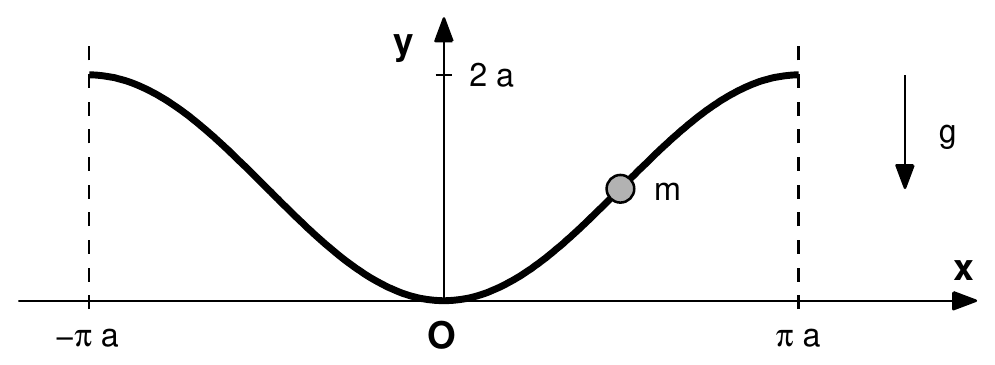
-
(a)
Reduce the problem to integrals.
-
(b)
If $v_0 = \sqrt{ga}$, determine the minimum and maximum value of $x$ along the motion.
-
(c)
What should be the minimum value of $v_0$ in order to reach $x = \pi a$?
Let's assume now that the curve containing the point particle rotates around the $OY$ axis with constant angular velocity $\boldsymbol{\omega} = \Omega\mathbf{j}$.
-
(d)
Define a convenient moving reference frame with origin in $O$, $OX_1Y_1Z_1$. Determine the inertia force that acts on the particle in this moving reference frame as a function of $m, \Omega, x_1$ and $\dot{x}_1$, where $x_1$ represents the position coordinate of $P$ along $OX_1$.
-
(e)
Reduce the problem to quadratures and determine the value of the reaction force.
-
(f)
Find out a trascendental [sic] equation whose solutions are the equilibrium positions of the point particle in $OX_1Y_1Z_1$.
-
(g)
If $\Omega$ were a function of time, would it be possible to use the energy equation in the same way as before? Justify your answer.
Worked Solution [ Click to Expand ]
Reference Frames, Bases and Coordinates
A heavy particle $P$ of mass $m$ slides without friction on a plane curve of the shape given in the table, between the two crests at plus and minus $\pi a$; it starts at $O$ with the speed $v_0$ along the positive $x$ axis (Problems.pdf, p. 10). Parts (a) to (c) take the curve at rest; parts (d) to (g) let it turn about the vertical axis $OY$ with the constant rate $\Omega$. The fixed curve is solved in the inertial frame with the projections of Notes.pdf, Sec. 6.5; the turning curve in the frame attached to it, with the composition of motions of Notes.pdf, Sec. 3.2 and the inertia forces of Notes.pdf, Sec. 4.9.
| Item | Definition |
|---|---|
| Curve | $y = a\left(1 - \cos(x/a)\right)$ for $-\pi a \le x \le \pi a$, in a vertical plane; $a \gt 0$ |
| Fixed (inertial) frame | $S_0 = \{O;\ \mathcal B_0\}$, $\mathcal B_0 = \{\mathbf i_0, \mathbf j_0, \mathbf k_0\}$: $\mathbf i_0$ along $OX$ (horizontal), $\mathbf j_0$ along $OY$ (vertical, up; the $\mathbf j$ of the statement), $\mathbf k_0 = \mathbf i_0\times\mathbf j_0$, horizontal (Notes.pdf, Eq. 2.1) |
| Moving frame (parts d to g) | $S_1 = \{O;\ \mathcal B_1\}$, the frame $OX_1Y_1Z_1$ attached to the curve: $\mathbf i_1$ along $OX_1$ in the plane of the curve, $\mathbf j_1 = \mathbf j_0$ the axis of rotation, $\mathbf k_1 = \mathbf i_1\times\mathbf j_1$ normal to the plane of the curve; it coincides with $S_0$ at $t = 0$ and turns by the angle $\Omega t$ about $\mathbf j_0$ |
| Curve basis | $\{\mathbf e_t, \mathbf n, \mathbf k\}$ at $P$: unit tangent in the sense of growing abscissa, in-plane unit normal $\mathbf n$ (the tangent turned by $+90^\circ$ in the plane), and the normal to the plane ($\mathbf k_0$ for the fixed curve, $\mathbf k_1$ for the turning one) |
| Coordinates | $x$, abscissa of $P$ along $OX$ (fixed curve); $x_1$, abscissa of $P$ along $OX_1$ (turning curve) |
| Shorthand | $s = \sin(x_1/a)$, $c = \cos(x_1/a)$, $D = \sqrt{1 + s^2}$ (the same letters with $x$ for the fixed curve) |
| Constraints | $P$ in the plane of the curve and on the curve: two holonomic, smooth, bilateral constraints (rheonomic in $S_0$ when the curve turns, fixed in $S_1$) |
| Degrees of freedom | 3 minus 2: 1, the abscissa $x(t)$ or $x_1(t)$; the angle $\Omega t$ is prescribed |
| Data | $m$ [kg], $a$ [m], $g$ [m s$^{-2}$], $v_0$ [m s$^{-1}$], $\Omega$ [rad s$^{-1}$] |
| Initial state | $x(0) = 0$ (or $x_1(0) = 0$), absolute velocity $v_0\,\mathbf i_0$ |
| Unknowns | the abscissa as a function of time; the reaction $\mathbf N = N_n\,\mathbf n + N_b\,\mathbf k$ (normal subspace of a curve, Notes.pdf, Eq. 6.16) |
| Applied force | weight $-mg\,\mathbf j_0$ |
| Inertia forces (in $S_1$) | of the origin, Euler, centrifugal and Coriolis (Notes.pdf, Eq. 4.62) |
| Hypotheses | $S_0$ inertial, uniform gravity, smooth curve (no tangential reaction), the rotation of the curve imposed from outside (whatever torque it needs is supplied) |
Change of Basis and Position Vector
The plane of the curve is drawn with the horizontal axis to the right and $\mathbf j_0$ up. For the fixed curve the horizontal axis is $OX$ with $\mathbf i_0$; for the turning curve the same drawing holds in $S_1$ with $OX_1$, $\mathbf i_1$ and $x_1$. The position of $P$ is the sum of its two dashed components: the abscissa along the horizontal axis and the height given by the equation of the curve. Moving a distance $dx_1$ along the axis, the height changes by $dy$; in the shaded right triangle the leg adjacent to the tangent angle $\alpha$ is $dx_1$, the opposite leg is $dy$ and the hypotenuse is the arc element $d\ell$ (Eq. 2.19, where it is called $ds$; here $s$ is the sine of the shorthand).
Units: $[x_1] = [a] = [\mathrm{L}]$; $x_1/a$ and the slope dimensionless
Meaning: $x_1$ zero gives the initial point $O$; at the crests, plus and minus $\pi a$, the height is twice $a$. The fixed curve has the same expressions with $x$, $\mathbf i_0$ and $\mathbf j_0$.
The plane is seen with $\mathbf i_1$ to the right and $\mathbf j_1$ up, so $\mathbf k_1$, their cross product, points out of the paper (⊙) and a positive rotation about it is counterclockwise. $\mathbf e_t$ is $\mathbf i_1$ turned by $\alpha$: hypotenuse 1, adjacent leg $\cos\alpha$ along $\mathbf i_1$, opposite leg $\sin\alpha$ along $\mathbf j_1$. $\mathbf n$ is $\mathbf j_1$ turned by the same angle: adjacent leg $\cos\alpha$ along $\mathbf j_1$, opposite leg $\sin\alpha$ along minus $\mathbf i_1$ (the upward vector turned counterclockwise leans to the left: the minus sign).
Units: dimensionless: $[1]$
Meaning: the reaction of the smooth curve lies in the plane spanned by the normal $\mathbf n$ and the normal to the plane; projecting on the tangent removes it.
View from above, along $\mathbf j_0$, which points out of the paper (⊙). With $\mathbf i_0$ to the right, $\mathbf k_0$, the cross product of $\mathbf i_0$ and $\mathbf j_0$, points down the page (right-hand rule: fingers from $\mathbf i_0$, to the right, towards $\mathbf j_0$, towards the reader; the thumb goes down the page), so minus $\mathbf k_0$ points up the page. A positive $\Omega$ turns the curve counterclockwise in this view. $\mathbf i_1$ is $\mathbf i_0$ turned by $\Omega t$: hypotenuse 1, adjacent leg $\cos\Omega t$ along $\mathbf i_0$, opposite leg $\sin\Omega t$ up the page, that is along minus $\mathbf k_0$ (the minus sign). $\mathbf k_1$ is $\mathbf k_0$ (down the page) turned by the same angle: its tip moves towards the right, adjacent leg $\cos\Omega t$ along $\mathbf k_0$, opposite leg $\sin\Omega t$ along plus $\mathbf i_0$.
Units: $[\Omega t] = [\mathrm{T^{-1}}][\mathrm{T}] = [1]$
Meaning: it is the matrix of Eq. 1.19 with the angle $\Omega t$; at the start the two frames coincide.
Kinematics
Units: $[\dot x] = [\mathrm{L\,T^{-1}}]$; $[\ddot x] = [\dot x^2/a] = [\mathrm{L\,T^{-2}}]$
Meaning: the speed along the curve is the factor $D$ times the horizontal rate; it is larger than the horizontal rate wherever the curve is inclined.
Units: $[\Omega] = [\mathrm{T^{-1}}]$
Meaning: seen from above the plane of the curve turns counterclockwise; seen from $S_1$ its unit vectors are constant.
Units: $[\dot x_1] = [\mathrm{L\,T^{-1}}]$; $[\ddot x_1] = [\mathrm{L\,T^{-2}}]$
Meaning: in $S_1$ the curve is at rest, so the relative motion has the kinematics of the fixed curve, with no component along $\mathbf k_1$.
Write $y_1$ for the height $a(1 - \cos(x_1/a))$, so that the position is $x_1\,\mathbf i_1 + y_1\,\mathbf j_1$.
Units: $[\Omega x_1] = [\mathrm{L\,T^{-1}}]$; $[\Omega\dot x_1] = [\Omega^2x_1] = [\mathrm{L\,T^{-2}}]$
Meaning: one half of the Coriolis term comes from the turning of $\mathbf i_1$ inside the relative velocity, the other from the change of the distance to the axis inside the transport velocity; the centripetal term points horizontally towards the axis. With $O$ fixed and $\Omega$ constant the origin and Euler terms of Eq. 3.27 are absent.
Forces and Equations of Motion
The free-body diagram of $P$ in $S_1$ shows, in the plane of the curve, the weight, the in-plane reaction along $\mathbf n$ and the centrifugal force (horizontal, away from the axis); normal to the plane, the reaction along $\mathbf k_1$ and the Coriolis force. The inertia force of the origin and the Euler force vanish ($O$ fixed, $\Omega$ constant). For the fixed curve only the weight and the reaction act.
Units: every term $[\mathrm{L\,T^{-2}}]$
Meaning: one equation for the one unknown function $x(t)$; the other two projections would give the reaction, which parts (a) to (c) do not ask for.
(d) Inertia forces in the moving frame
Units: $[m\Omega^2x_1] = [m\Omega\dot x_1] = [\mathrm{M\,L\,T^{-2}}]$
Meaning: the centrifugal force is horizontal and points away from the axis on both sides (it changes sign with $x_1$); the Coriolis force is normal to the plane of the curve, along plus $\mathbf k_1$ while $P$ moves towards growing $x_1$.
Units: $[g] = [\Omega^2x_1] = [\dot x_1^2/a] = [\mathrm{L\,T^{-2}}]$; $[N_b] = [\mathrm{M\,L\,T^{-2}}]$
Meaning: three scalar equations for the three unknowns $x_1$, $N_n$ and $N_b$. The reaction normal to the plane balances the Coriolis force alone.
Answers and Checks
(a) Reduction to integrals, fixed curve
Units: $[mv_0^2] = [mga] = [\mathrm{M\,L^2\,T^{-2}}]$, energies
Meaning: the kinetic energy plus the potential energy of the weight is constant: the smooth reaction is normal to the velocity of a particle on a fixed curve and does no work.
The rate starts positive ($\dot x(0) = v_0$) and keeps its sign until it first vanishes, at a turning point where the right-hand side is zero.
Units: the integrand is $[\mathrm{L\,T^{-1}}]^{-1}$, times $[d\xi] = [\mathrm{L}]$: a time
Meaning: the motion is reduced to one integral; the region allowed to the particle is where the radicand is not negative.
(b) Extreme abscissas of the motion
Units: $[x] = [a] = [\mathrm{L}]$
Meaning: at each end of the allowed interval the acceleration points back towards $O$, so the particle turns there: it oscillates between the two points at a height of half of $a$, symmetric about $O$, and never stays at an end.
(c) Minimum initial speed to reach the crest
To reach the crest the radicand must not be negative on the whole way from 0 to $\pi a$; it decreases with $x$ there, because $1 - \cos(x/a)$ grows, so the condition is its value at the crest. At the limiting speed write $\delta$ for the distance $\pi a - x$ still to go; the half-angle identity is $1 + \cos\beta = 2\cos^2(\beta/2)$.
Units: $[\sqrt{ga}] = [\mathrm{L\,T^{-1}}]$; $[\sqrt{a/g}] = [\mathrm{T}]$
Meaning: the initial kinetic energy must pay for the rise to the crest, twice $a$ above $O$. At exactly the limiting speed the force on the particle vanishes at the crest as well as its speed, and the time to get there diverges logarithmically: $2\sqrt{ga}$ is the lower bound of the speeds that reach it.
(e) Quadratures and reaction force, turning curve
Units: $[v_0] = [\mathrm{L\,T^{-1}}]$
Meaning: at the axis the transport velocity is zero, so the relative and the absolute initial velocities coincide.
The energy in $S_1$ is conserved for two reasons. First, the forces that do no work in $S_1$: the reaction, because the curve is smooth and at rest in $S_1$, so the reaction is normal to the relative velocity; the Coriolis force, always normal to the relative velocity; and the force of the origin and the Euler force, which vanish. Second, the forces that do work have potentials that depend on the position only: the weight, and the centrifugal force, whose potential is minus one half of $m\Omega^2x_1^2$ only because $\Omega$ is constant.
Units: $[\Omega^2\xi^2] = [v_0^2] = [ga] = [\mathrm{L^2\,T^{-2}}]$; the integral is a time
Meaning: compared with the fixed curve the radicand gains the centrifugal term, which grows with the distance to the axis and helps the particle climb.
Units: $[mg] = [m\Omega^2x_1] = [m\dot x_1^2/a] = [m\Omega\dot x_1] = [\mathrm{M\,L\,T^{-2}}]$
Meaning: the in-plane part carries the weight, the centrifugal push across the curve and the centripetal need of the curved path; the part normal to the plane points along minus $\mathbf k_1$ while $x_1$ grows, against the Coriolis force.
(f) Equilibrium positions in the turning frame
Write $u$ for $x_1/a$ and $\lambda$ for the dimensionless number $\Omega^2a/g$. On $0 \lt u \le \pi$ the function $\sin u/u$ decreases from 1 (its limit at 0) to 0; its derivative is $h(u)/u^2$ with $h(u) = u\cos u - \sin u$, and $h$ starts at 0 with the derivative $-u\sin u$, negative there.
Units: $[g] = [\Omega^2x_1] = [\mathrm{L\,T^{-2}}]$; $\lambda$ dimensionless
Meaning: at an off-axis equilibrium the tangential pull of the weight towards the bottom balances the tangential push of the centrifugal force; with a fast spin no off-axis balance exists inside the range of the curve.
(g) Variable spin rate
With $\Omega(t)$ the Euler force appears. It is normal to the plane of the curve, so it does no work in $S_1$ and drops out of the tangent equation, which keeps its form with $\Omega(t)$; it only changes the reaction along $\mathbf k_1$. The centrifugal force, however, no longer derives from a potential that depends on the position only. Write $E_1^P$ for the energy of part (e) with $\Omega(t)$ in its centrifugal term: the bracket of the last row below, the relative kinetic energy plus the potential of the weight minus one half of $m\Omega^2x_1^2$.
Units: $[m\Omega\dot\Omega x_1^2] = [\mathrm{M}][\mathrm{T^{-1}}][\mathrm{T^{-2}}][\mathrm{L^2}] = [\mathrm{M\,L^2\,T^{-3}}]$, a power
Meaning: no, it cannot be used in the same way: the balance of the last row still holds, but its right-hand side depends on the unknown position, so it does not reduce the problem to a quadrature. With constant $\Omega$ the right-hand side vanishes and part (e) is recovered.
| Part of the statement | Answer |
|---|---|
| (a) Integrals, fixed curve | $\frac12 m(1 + \sin^2\frac{x}{a})\dot x^2 + mga(1 - \cos\frac{x}{a}) = \frac12 mv_0^2$; $t = \int_0^x\sqrt{(1 + \sin^2(\xi/a))/(v_0^2 - 2ga(1 - \cos(\xi/a)))}\,d\xi$ |
| (b) Extreme abscissas, $v_0 = \sqrt{ga}$ | $x_{\min} = -\pi a/3$, $x_{\max} = \pi a/3$ (oscillation between them) |
| (c) Minimum speed to reach $x = \pi a$ | $v_0 = 2\sqrt{ga}$ (lower bound: reached in a finite time for any larger speed, asymptotically at that speed) |
| (d) Moving frame and inertia force | (answered in Forces and Equations of Motion, before (a)–(c)) $S_1$: $\mathbf i_1$ in the plane of the curve, $\mathbf j_1 = \mathbf j_0$ the axis, $\mathbf k_1$ normal to the plane; $\mathbf F_i = m\Omega^2x_1\,\mathbf i_1 + 2m\Omega\dot x_1\,\mathbf k_1$ |
| (e) Quadrature, turning curve | $t = \int_0^{x_1}\sqrt{(1 + \sin^2(\xi/a))/(v_0^2 - 2ga(1 - \cos(\xi/a)) + \Omega^2\xi^2)}\,d\xi$ |
| (e) Reaction | $\mathbf N = \frac{m}{D}\left(g + \Omega^2x_1\sin\frac{x_1}{a} + \frac{\dot x_1^2}{a}\cos\frac{x_1}{a}\right)\mathbf n - 2m\Omega\dot x_1\,\mathbf k_1$, with $\mathbf n = (-\sin\frac{x_1}{a}\,\mathbf i_1 + \mathbf j_1)/D$ and $\dot x_1^2$ from the energy integral |
| (f) Equilibria | $g\sin(x_1/a) = \Omega^2x_1$: $x_1 = 0$ always, and a pair $\pm x_1^*$ only if $\Omega^2a \lt g$ |
| (g) Variable $\Omega$ | no: $dE_1^P/dt = -m\Omega\dot\Omega x_1^2 \ne 0$; the Euler force $m\dot\Omega x_1\,\mathbf k_1$ does no work, but the centrifugal force has no time-independent potential |
Check against the official key: Problems.pdf, p. 73 lists item 22 with no answer, so there is no key to compare with. Independent checks: the reaction normal to the plane follows again from the angular momentum about the vertical axis in $S_0$ (box below), and the limiting cases close the results.
In $\mathcal B_1$ the position has the components $(x_1, y_1, 0)$ and the absolute velocity $(\dot x_1, \dot y_1, -\Omega x_1)$ (velocity box). The component along $\mathbf j_1$ of a vector product is the first component of the second factor times the third of the first, minus the third of the second times the first of the first.
Units: $[H] = [\mathrm{M\,L^2\,T^{-1}}]$; $[x_1N_b] = [\mathrm{M\,L^2\,T^{-2}}]$
Meaning: to keep turning at the rate $\Omega$ while its distance to the axis changes, the particle needs an axial moment that only the normal reaction can give: the same result as the Coriolis balance in $S_1$.
Units: $[g/a] = [\Omega^2] = [\mathrm{T^{-2}}]$
Meaning: near the bottom the particle oscillates when the spin rate is below the square root of g over a, and drifts away from the bottom when it is above, the same threshold at which the off-axis equilibria of part (f) disappear.
A spacecraft $S$ is orbiting a celestial body $F$. The trajectory of the spacecraft with respect to an inertial reference frame $Fxy$ is given by
where $p$ and $e$ are known constants and $\nu(t)$ is a known function of time. The space explorer Ijon Tichy needs to perform some extra-vehicular activities during his Seventh Voyage (footnote 1: The Star Diaries by Stanislaw Lem). He attaches himself with a massless cord of length $L$ to the spacecraft and goes for a space walk. The cord remains in tension at all times. The astronaut is very light compared to the spacecraft, so his motion does not perturb the motion of the spacecraft. Furthermore, we assume that we can consider him as a point particle of mass $m$. We define a moving reference frame $Sx_1y_1$ as depicted in the figure.
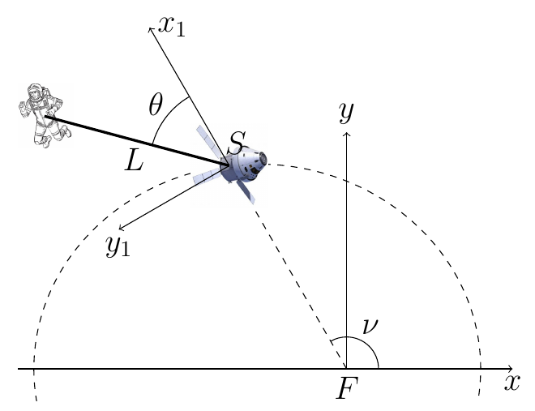
-
(a)
Determine the acceleration of the spacecraft with respect to $Fxy$ as a function of time.
-
(b)
Determine the tangent vector to the trajectory of $S$ as a function of time.
-
(c)
Determine the relative velocity and relative acceleration of Ijon Tichy with respect to $Sx_1y_1$ as a function of $\theta$ and its time derivatives.
-
(d)
Determine the fictitious forces acting on Ijon Tichy if we analyze the problem with respect to the frame $Sx_1y_1$.
The length $L$ is very small compared to the distance between $F$ and $S$. This allows us to take an approximation: in the following, assume that the gravitational acceleration on the astronaut and on the spacecraft are exactly the same vector (magnitude and direction) as a function of time. (In actual problems the small differences in gravity at the position of the astronaut and the spacecraft can give rise to small but important effects, and this approximation is usually not taken for that reason.)
-
(e)
Write down one ordinary differential equation that once solved (with given initial conditions) would yield the angle $\theta$ as a function of time (you do not need to solve it).
-
(f)
Assuming that you solved the previous equation, and therefore knew $\theta(t)$, determine the value of the tension on the cord as a function of time.
Worked Solution [ Click to Expand ]
Reference Frames, Bases and Coordinates
A spacecraft $S$ moves on a conic of semi-latus rectum $p$ and eccentricity $e$ about the body $F$, with the true anomaly $\nu(t)$ a known function of time; the astronaut $P$, of mass $m$, is tied to it by a massless cord of length $L$ that stays taut, and the frame $Sx_1y_1$ of the figure moves with the spacecraft (Problems.pdf, p. 13). The statement asks for the acceleration and the unit tangent of the spacecraft, the relative velocity and acceleration of the astronaut, the inertia forces in $Sx_1y_1$, and, with equal gravity on both bodies, the differential equation of the cord angle and the tension. The relative kinematics follows Notes.pdf, Sec. 3.2, the inertia forces Notes.pdf, Sec. 4.9, and the gravity of $F$ Notes.pdf, Eq. 8.1.
| Item | Definition |
|---|---|
| Orbit of $S$ | $r = p/(1 + e\cos\nu)$, with $r$ the distance $FS$ and $\nu(t)$ known; $1 + e\cos\nu \gt 0$ on the orbit, since $r$ and $p$ are positive |
| Fixed (inertial) frame | $S_0 = \{F;\ \mathcal B_0\}$, the frame $Fxy$: $\mathbf i_0$ along $Fx$, $\mathbf j_0$ along $Fy$, $\mathbf k_0 = \mathbf i_0\times\mathbf j_0$ normal to the orbital plane (Notes.pdf, Eq. 2.1) |
| Moving frame | $S_1 = \{S;\ \mathcal B_1\}$, the frame $Sx_1y_1$: $\mathbf i_1$ along $FS$, pointing away from $F$; $\mathbf k_1 = \mathbf k_0$; $\mathbf j_1 = \mathbf k_1\times\mathbf i_1$, in the sense of growing $\nu$ (read from the figure: $Sy_1$ is $Sx_1$ turned by a quarter turn counterclockwise) |
| Cord basis | $\mathcal B_2 = \{\mathbf e_c, \mathbf e_\theta, \mathbf k_1\}$: $\mathbf e_c$ from $S$ to $P$, $\mathbf e_\theta$ normal to the cord in the plane, in the sense of growing $\theta$ |
| Coordinate | $\theta$, the angle from $Sx_1$ to the cord $SP$, positive counterclockwise (from $\mathbf i_1$ towards $\mathbf j_1$, read from the figure) |
| Constraints | $P$ in the orbital plane at the distance $L$ from $S$ (taut cord) |
| Degrees of freedom | 2 minus 1: 1, the angle $\theta(t)$; the motion of $S$ is prescribed |
| Data | $p$ [m], $e$ [1], $\nu(t)$ [rad], $L$ [m], $m$ [kg]; $\mu_F$ [m$^3$ s$^{-2}$], the gravitational parameter of $F$ (Notes.pdf, Eq. 8.1), needed for the gravity of parts (e) and (f) |
| Unknowns | $\theta(t)$ and the tension $T(t) \ge 0$ of the cord, which pulls $P$ towards $S$ |
| Applied forces | the cord, $-T\,\mathbf e_c$; the gravity of $F$ on the astronaut, $m\,\mathbf g_P$ |
| Inertia forces (in $S_1$) | of the origin, Euler, centrifugal and Coriolis (Notes.pdf, Eq. 4.62) |
| Hypotheses | $S_0$ inertial; planar motion in the orbital plane; the astronaut does not perturb $S$; from part (e) on, $\mathbf g_P$ equal to the gravitational acceleration $\mathbf g_S$ at $S$ |
| Readings | $\dot\nu \gt 0$ (the spacecraft moves towards growing $\nu$; with $\dot\nu \lt 0$ the unit tangent of part (b) changes sign). Hypothesis: the spacecraft is in free flight about $F$, which the conic orbit of Notes.pdf, Eq. 8.14 suggests but does not imply (the statement prescribes $\nu(t)$ and gives no force on $S$); parts (e) and (f) are given both in general and under this hypothesis |
Change of Basis and Position Vector
The orbital plane is seen from the side of $\mathbf k_0$, which points out of the paper (⊙) because it is the cross product of $\mathbf i_0$ (to the right) and $\mathbf j_0$ (up): a positive rotation about $\mathbf k_0$ is counterclockwise. $\nu$ is measured at $F$ from $Fx$ counterclockwise, so it is already the standard polar angle of $S$. In the shaded right triangle (right angle at the foot of the perpendicular from $S$ to $Fx$) the hypotenuse is $r$, the leg adjacent to $\nu$ is $r\cos\nu$ along $\mathbf i_0$ and the opposite leg is $r\sin\nu$ along $\mathbf j_0$. Dividing by $r$ gives $\mathbf i_1$. $\mathbf j_1$ is $\mathbf j_0$ turned by $\nu$: adjacent leg $\cos\nu$ along $\mathbf j_0$, opposite leg $\sin\nu$ along minus $\mathbf i_0$ (the upward vector turned counterclockwise leans to the left: the minus sign).
Units: $[r] = [p] = [\mathrm{L}]$; $e$ and $\nu$ dimensionless
Meaning: $\mathbf i_1$ and $\mathbf j_1$ are the radial and transverse directions of the orbit (Eq. 8.2); the frame turns with the radius $FS$.
The frame $Sx_1y_1$ is drawn with $\mathbf i_1$ to the right, $\mathbf j_1$ up and $\mathbf k_1$ out of the paper (⊙); $F$ lies along minus $\mathbf i_1$. $\theta$ is measured from $\mathbf i_1$ counterclockwise, so it is the standard polar angle of $P$ about $S$. In the shaded right triangle the hypotenuse is the cord $L$, the leg adjacent to $\theta$ is $L\cos\theta$ along $\mathbf i_1$ and the opposite leg is $L\sin\theta$ along $\mathbf j_1$. $\mathbf e_\theta$ is $\mathbf j_1$ turned by $\theta$: adjacent leg $\cos\theta$ along $\mathbf j_1$, opposite leg $\sin\theta$ along minus $\mathbf i_1$ (the minus sign, as before). To go from $F$ to $P$ we pass through $S$.
Units: $[L] = [\mathrm{L}]$; angles dimensionless
Meaning: the cord makes the angle $\theta + \nu$ with the inertial axis $Fx$ (product of the two rotations, Eq. 1.16); this angle is used in the independent check.
Kinematics
Units: $[\dot\nu] = [\mathrm{T^{-1}}]$; $[\ddot\nu] = [\mathrm{T^{-2}}]$
Meaning: the frame turns at the rate of the true anomaly, which on a non-circular orbit is not constant: the angular acceleration does not vanish in general.
(a) Acceleration of the spacecraft
Units: $[\ddot r] = [r\dot\nu^2] = [\dot r\dot\nu] = [r\ddot\nu] = [\mathrm{L\,T^{-2}}]$
Meaning: the radial part holds the centripetal term of the turning radius; the transverse part holds the change of the angular rate and the Coriolis-like term of a changing radius.
Write $D$ for $1 + e\cos\nu$, so that $r$ is $p$ times $D^{-1}$.
Units: $[\dot r] = [p][\mathrm{T^{-1}}] = [\mathrm{L\,T^{-1}}]$; $[\ddot r] = [\mathrm{L\,T^{-2}}]$
Meaning: with $\nu(t)$ known, $r$, its rates, $\dot\nu$ and $\ddot\nu$ are known functions of time, and so is the acceleration of part (a).
(b) Tangent vector of the orbit
The two components of the velocity are the legs of a right triangle: $e\sin\nu$ along $\mathbf i_1$ and $1 + e\cos\nu$ along $\mathbf j_1$, after the common factor is taken out; the hypotenuse gives the speed.
Units: dimensionless
Meaning: on a circular orbit (zero eccentricity) the tangent is the transverse direction $\mathbf j_1$; otherwise it leans outwards while the spacecraft goes from the periapsis to the apoapsis (the factor $e\sin\nu$ positive) and inwards on the way back.
(c) Relative velocity and acceleration of the astronaut
Units: $[L\dot\theta] = [\mathrm{L\,T^{-1}}]$; $[L\ddot\theta] = [L\dot\theta^2] = [\mathrm{L\,T^{-2}}]$
Meaning: in $S_1$ the astronaut moves on a circle of radius $L$ about the spacecraft: a tangential part and a centripetal part towards $S$.
Write $x_1$ and $y_1$ for the components $L\cos\theta$ and $L\sin\theta$ of $\mathbf r_1^P$.
Units: every term $[\mathrm{L\,T^{-2}}]$
Meaning: the four terms beyond the acceleration of the origin add up to the acceleration of circular motion at the absolute angular rate of the cord, the sum of the two rates.
Forces and Equations of Motion
The free-body diagram of the astronaut in $S_1$ shows the pull of the cord towards $S$, the gravity of $F$, and the four inertia forces: the force of the origin (minus the mass times the acceleration of $S$), the Euler force across the cord, and the centrifugal and Coriolis forces along the cord.
(d) Inertia forces in the moving frame
Units: $[m\,a_0^S] = [mL\ddot\nu] = [mL\dot\nu^2] = [mL\dot\nu\dot\theta] = [\mathrm{M\,L\,T^{-2}}]$
Meaning: the centrifugal force pushes the astronaut away from $S$ along the cord, because the whole of $\mathbf r_1^P$ lies in the plane normal to the rotation; the Euler force is present because the true anomaly does not grow uniformly on a non-circular orbit.
Units: $[m\mu_F/r^2] = [\mathrm{M}][\mathrm{L^3\,T^{-2}}][\mathrm{L^{-2}}] = [\mathrm{M\,L\,T^{-2}}]$, like every other term
Meaning: two scalar equations for the two unknowns $\theta$ and $T$: the projection across the cord is free of the tension and gives the motion; the projection along the cord gives the tension afterwards.
Answers and Checks
(e) Differential equation of the cord angle
A spacecraft in free flight about $F$ (the reading stated in the table) has the acceleration $\mathbf g_S$: its radial and transverse components are Eq. 8.5 and Eq. 8.6 with $\nu$ in place of the polar angle.
Units: $[\ddot\theta] = [\ddot\nu] = [\mu_F/(Lr^2)] = [\mathrm{T^{-2}}]$
Meaning: $r$, its rates and $\nu$ are known functions of time, so the general form is one second-order equation for $\theta(t)$ alone. In free flight the weight of the astronaut and the force of the origin cancel exactly, and only the Euler force drives the angle.
(f) Tension of the cord
Units: $[mL\dot\theta^2] = [\mathrm{M\,L\,T^{-2}}]$
Meaning: in free flight the cord only supplies the centripetal force of a circle of radius $L$ described at the absolute rate of the cord, which stays at its initial value: the tension is constant, and the hypothesis of a taut cord holds as long as that rate is not zero.
| Part of the statement | Answer |
|---|---|
| (a) Acceleration of $S$ | $\mathbf a_0^S = (\ddot r - r\dot\nu^2)\,\mathbf i_1 + (2\dot r\dot\nu + r\ddot\nu)\,\mathbf j_1$, with $r = p/(1 + e\cos\nu)$, $\dot r = pe\dot\nu\sin\nu/(1 + e\cos\nu)^2$, $\ddot r = pe(\ddot\nu\sin\nu + \dot\nu^2\cos\nu)/(1 + e\cos\nu)^2 + 2pe^2\dot\nu^2\sin^2\nu/(1 + e\cos\nu)^3$ |
| (b) Unit tangent of $S$ | $\mathbf e_t = [e\sin\nu\,\mathbf i_1 + (1 + e\cos\nu)\,\mathbf j_1]/\sqrt{1 + 2e\cos\nu + e^2} = [-\sin\nu\,\mathbf i_0 + (e + \cos\nu)\,\mathbf j_0]/\sqrt{1 + 2e\cos\nu + e^2}$ for $\dot\nu \gt 0$; the opposite vector if $\dot\nu \lt 0$ |
| (c) Relative velocity and acceleration | $\mathbf v_1^P = L\dot\theta(-\sin\theta\,\mathbf i_1 + \cos\theta\,\mathbf j_1)$; $\mathbf a_1^P = -L(\ddot\theta\sin\theta + \dot\theta^2\cos\theta)\,\mathbf i_1 + L(\ddot\theta\cos\theta - \dot\theta^2\sin\theta)\,\mathbf j_1$ |
| (d) Inertia forces | $\mathbf F_A = -m\,\mathbf a_0^S$; $\mathbf F_E = mL\ddot\nu(\sin\theta\,\mathbf i_1 - \cos\theta\,\mathbf j_1)$; $\mathbf F_C = mL\dot\nu^2(\cos\theta\,\mathbf i_1 + \sin\theta\,\mathbf j_1)$; $\mathbf F_{COR} = 2mL\dot\nu\dot\theta(\cos\theta\,\mathbf i_1 + \sin\theta\,\mathbf j_1)$ |
| (e) Equation for $\theta$ | general: $L\ddot\theta = -L\ddot\nu + (\mu_F/r^2 + \ddot r - r\dot\nu^2)\sin\theta - (2\dot r\dot\nu + r\ddot\nu)\cos\theta$; spacecraft in free flight (reading taken): $\ddot\theta + \ddot\nu = 0$ |
| (f) Tension | general: $T = mL\dot\theta^2 + mL\dot\nu^2 + 2mL\dot\theta\dot\nu - m\mu_F\cos\theta/r^2 + m(r\dot\nu^2 - \ddot r)\cos\theta - m(2\dot r\dot\nu + r\ddot\nu)\sin\theta$; free flight: $T = mL(\dot\theta + \dot\nu)^2$, constant |
Check against the official key: Problems.pdf, p. 73 and p. 74 print the acceleration of the spacecraft with its rates of the distance, the Euler force and the general tension; the box below sets them side by side with the results above. Every one coincides, so there is no discrepancy. The key does not print the differential equation of part (e), nor the unit tangent of part (b).
The key writes the second rate of the distance over the denominator $(1 + e\cos\nu)^4$; dividing its numerator and denominator by $(1 + e\cos\nu)^2$ and by $(1 + e\cos\nu)$ term by term gives the form of the rates box.
Units: accelerations $[\mathrm{L\,T^{-2}}]$; forces $[\mathrm{M\,L\,T^{-2}}]$
Meaning: the key keeps the gravity of $F$ and the acceleration of $S$ as separate terms, which is the general form; it does not use the free-flight reduction.
With $\mathbf e_c$ at the angle $\theta + \nu$ from $\mathbf i_0$, the vector $L\,\mathbf e_c$ is a circle of radius $L$ described with the angle $\theta + \nu$; its unit vectors turn with the rate of that angle, and the frame through $S$ with the axes of $S_0$ only translates.
Units: $[mL\dot\theta^2] = [\mathrm{M\,L\,T^{-2}}]$
Meaning: without any inertia force, the inertial route gives the same equation and the same tension as the free-flight forms of parts (e) and (f).
Units: $[T] = [\mathrm{M\,L\,T^{-2}}]$
Meaning: on a circular orbit the frame turns uniformly and the Euler force vanishes; an astronaut that does not turn in inertial space leaves the cord without tension, and the taut-cord hypothesis of the statement then fails.
Heavy Particle on a Rotating Half-Circumference (Moving-Frame Method)
Original statement · Problems.pdf, p. 14A heavy point particle $P$ of mass $m$ is constrained to move without friction along the half-circumference wire of radius $a$ shown in the figure. The wire containing the point particle rotates around the $OY$ axis with constant angular velocity $\boldsymbol{\omega} = \Omega\mathbf{j}$. Initially, the particle is located at $x = 0$ with velocity $v_0$ along the positive $x$ axis.
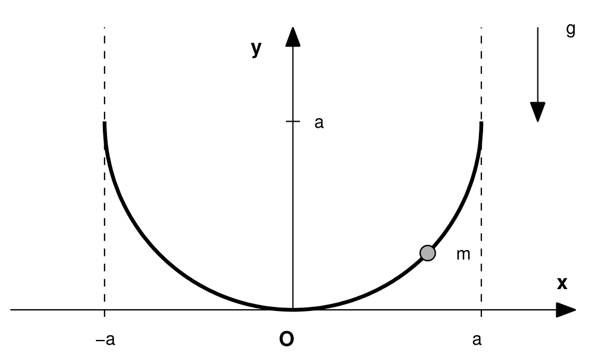
-
(a)
Determine the number of degrees of freedom of the problem.
-
(b)
Define a convenient moving reference frame with origin in $O$, $OX_1Y_1Z_1$. Express the inertia force that acts on the particle in this moving reference frame.
-
(c)
Express also the components of the weight of the particle with respect to $OX_1Y_1Z_1$.
-
(d)
Determine if there are any equilibrium points.
-
(e)
Reduce the problem to integrals (i.e. quadratures) and determine the value of the reaction force.
-
(f)
Is it possible to use the energy equation? If $\Omega$ were a function of time, would it be possible to use the energy equation? Justify your answer.
Worked Solution [ Click to Expand ]
Reference Frames, Bases and Coordinates
A heavy particle $P$ of mass $m$ slides without friction on a half-circumference wire of radius $a$ whose lowest point is $O$ and whose ends are at the height $a$, at plus and minus $a$ from the axis (figure of the statement); the wire turns about the vertical axis $OY$ with the constant rate $\Omega$, and the particle starts at $O$ with the speed $v_0$ along the positive $x$ axis (Problems.pdf, p. 14). The statement asks for the degrees of freedom, a moving frame with the inertia force, the weight in that frame, the equilibrium points, the quadrature and the reaction, and the use of the energy equation. The wire is at rest in the frame that turns with it, so the solution works there, with the composition of motions of Notes.pdf, Sec. 3.2 and the inertia forces of Notes.pdf, Sec. 4.9.
| Item | Definition |
|---|---|
| Fixed (inertial) frame | $S_0 = \{O;\ \mathcal B_0\}$, $\mathcal B_0 = \{\mathbf i_0, \mathbf j_0, \mathbf k_0\}$: $\mathbf i_0$ along $OX$, $\mathbf j_0$ along $OY$ (vertical, up; the $\mathbf j$ of the statement), $\mathbf k_0 = \mathbf i_0\times\mathbf j_0$ (Notes.pdf, Eq. 2.1) |
| Moving frame | $S_1 = \{O;\ \mathcal B_1\}$, the frame $OX_1Y_1Z_1$ attached to the wire: $\mathbf i_1$ along $OX_1$ in the plane of the wire, $\mathbf j_1 = \mathbf j_0$ the axis of rotation, $\mathbf k_1 = \mathbf i_1\times\mathbf j_1$ normal to the plane of the wire; it coincides with $S_0$ at $t = 0$ and turns by $\Omega t$ about $\mathbf j_0$ |
| Wire basis | $\mathcal B_2 = \{\mathbf e_t, \mathbf e_n, \mathbf k_1\}$: unit tangent in the sense of growing $\theta$, principal normal (from $P$ towards the centre $C$) and the normal to the plane |
| Coordinate | $\theta$, the angle at the centre $C$ (at the height $a$ above $O$) from the downward vertical $CO$ to $CP$, positive towards $+\mathbf i_1$; $-\pi/2 \le \theta \le \pi/2$ on the wire |
| Constraints | $P$ in the plane of the wire and at the distance $a$ from $C$: two holonomic, smooth, bilateral constraints, fixed in $S_1$ (rheonomic in $S_0$) |
| Data | $m$ [kg], $a$ [m], $g$ [m s$^{-2}$], $v_0$ [m s$^{-1}$], $\Omega$ [rad s$^{-1}$] |
| Initial state | $\theta(0) = 0$ (the particle at $O$), absolute velocity $v_0\,\mathbf i_0$ |
| Unknowns | $\theta(t)$; the reaction $\mathbf N = N_n\,\mathbf e_n + N_b\,\mathbf k_1$ (normal subspace of a curve, Notes.pdf, Eq. 6.16) |
| Applied force | weight $-mg\,\mathbf j_0$ |
| Inertia forces (in $S_1$) | of the origin, Euler, centrifugal and Coriolis (Notes.pdf, Eq. 4.62) |
| Hypotheses | $S_0$ inertial, uniform gravity, smooth wire (no tangential reaction), the rotation of the wire imposed from outside |
(a) Degrees of freedom
In $S_1$ the two constraints are the plane of the wire and the circle of centre $C$; written with the components $x_1$, $y_1$, $z_1$ of the position in $\mathcal B_1$ they are independent, because one fixes $z_1$ and the other involves $x_1$ and $y_1$ only.
Units: $[x_1^2] = [a^2] = [\mathrm{L^2}]$
Meaning: the angle $\Omega t$ of the wire is prescribed, a known function of time, so it adds no degree of freedom.
Change of Basis and Position Vector
View from above, along $\mathbf j_0$, which points out of the paper (⊙). With $\mathbf i_0$ to the right, $\mathbf k_0$, the cross product of $\mathbf i_0$ and $\mathbf j_0$, points down the page (right-hand rule: fingers from $\mathbf i_0$, to the right, towards $\mathbf j_0$, towards the reader; the thumb goes down the page), so minus $\mathbf k_0$ points up the page. A positive $\Omega$ turns the wire counterclockwise in this view. $\mathbf i_1$ is $\mathbf i_0$ turned by $\Omega t$: hypotenuse 1, adjacent leg $\cos\Omega t$ along $\mathbf i_0$, opposite leg $\sin\Omega t$ up the page, that is along minus $\mathbf k_0$ (the minus sign). $\mathbf k_1$ is $\mathbf k_0$ (down the page) turned by the same angle: adjacent leg $\cos\Omega t$ along $\mathbf k_0$, opposite leg $\sin\Omega t$ along plus $\mathbf i_0$.
Units: $[\Omega t] = [1]$
Meaning: it is the matrix of Eq. 1.19 with the angle $\Omega t$; $\mathbf k_1$ stays horizontal and normal to the plane of the wire.
The plane of the wire, fixed in $S_1$, is drawn with $\mathbf i_1$ to the right and $\mathbf j_1$ up, so $\mathbf k_1$ points out of the paper (⊙). From $O$ to $P$ we pass through the centre $C$, because the distance from $C$ is the one that stays constant. Let $F$ be the point of the axis at the height of $P$: in the shaded right triangle $CFP$ the hypotenuse is $a$, the leg opposite to $\theta$ is $FP$, of length $a\sin\theta$, along $\mathbf i_1$, and the leg adjacent to $\theta$ is $CF$, of length $a\cos\theta$, pointing down, along minus $\mathbf j_1$ (the minus sign: $\theta$ is measured from the downward vertical). The standard polar angle about $C$, measured from $\mathbf i_1$ counterclockwise, is $\theta - \pi/2$.
Units: $[a] = [\mathrm{L}]$; direction cosines dimensionless
Meaning: $\theta$ zero is the lowest point $O$ and $\theta$ equal to $\pi/2$ the end of the wire at the height $a$; the distance of $P$ to the axis is the horizontal leg $a\sin\theta$.
Kinematics
Units: $[\Omega] = [\dot\theta] = [\mathrm{T^{-1}}]$
Meaning: in $S_1$ only the wire basis turns, with the particle; in $S_0$ the whole plane of the wire turns about the vertical as well.
Units: $[a\dot\theta] = [\mathrm{L\,T^{-1}}]$; $[a\ddot\theta] = [a\dot\theta^2] = [\mathrm{L\,T^{-2}}]$
Meaning: in $S_1$ the particle moves on a fixed circle: a tangential acceleration and a centripetal one towards $C$.
Units: every acceleration term $[\mathrm{L\,T^{-2}}]$
Meaning: the Coriolis acceleration is normal to the plane of the wire and appears because the distance to the axis changes while the plane turns; the centripetal one points horizontally to the axis.
Forces and Equations of Motion
The free-body diagram of the particle in $S_1$ shows, in the plane of the wire, the weight, the reaction along $\mathbf e_n$ and the centrifugal force (horizontal, away from the axis); normal to the plane, the reaction along $\mathbf k_1$ and the Coriolis force. The inertia force of the origin and the Euler force vanish ($O$ fixed, $\Omega$ constant).
(b) Inertia force in the moving frame
Units: $[m\Omega^2a] = [m\Omega a\dot\theta] = [\mathrm{M\,L\,T^{-2}}]$
Meaning: the centrifugal force is horizontal, away from the axis, and proportional to the distance $a\sin\theta$; the Coriolis force is normal to the plane of the wire, along plus $\mathbf k_1$ while $\theta$ grows (the factor $\cos\theta$ is positive on the whole wire).
(c) Weight in the moving frame
Units: $[mg] = [\mathrm{M\,L\,T^{-2}}]$
Meaning: the weight keeps the same components in the turning frame, because it lies along the axis of the rotation.
Units: $[g/a] = [\Omega^2] = [\mathrm{T^{-2}}]$; $[N_n] = [N_b] = [\mathrm{M\,L\,T^{-2}}]$
Meaning: three scalar equations for the three unknowns $\theta$, $N_n$ and $N_b$: the tangent equation is the equation of motion, the other two give the reaction afterwards.
Answers and Checks
(d) Equilibrium points
Units: $[g/(a\Omega^2)] = [1]$
Meaning: yes, there are equilibria: the bottom always, and two symmetric points off the axis above the critical rate, where the tangential pull of the weight towards the bottom balances the tangential push of the centrifugal force.
(e) Quadrature and reaction force
Units: $[v_0/a] = [\mathrm{T^{-1}}]$
Meaning: at $O$ the particle is on the axis, so the transport velocity is zero and the given velocity is the relative one.
Units: every term of the radicand $[\mathrm{T^{-2}}]$; the integral is a time
Meaning: the motion is reduced to one integral; the particle turns back where the radicand vanishes, or reaches the end of the wire if it stays positive up to $\theta$ equal to $\pi/2$.
Units: $[mv_0^2/a] = [mg] = [m\Omega^2a] = [\mathrm{M\,L\,T^{-2}}]$
Meaning: the in-plane part carries the weight, the centrifugal push and the centripetal need of the circle; the part normal to the plane points along minus $\mathbf k_1$ while $\theta$ grows, against the Coriolis force.
(f) Energy equation
With constant $\Omega$ the energy in $S_1$ is conserved for two reasons. First, the forces that do no work in $S_1$: the reaction, because the wire is smooth and at rest in $S_1$, so the reaction is normal to the relative velocity; the Coriolis force, always normal to the relative velocity; the force of the origin and the Euler force, which vanish. Second, the forces that do work have potentials that depend on the position only: the weight, and the centrifugal force because $\Omega$ is constant. Along the wire the displacement is $a\,\mathbf e_t\,d\theta'$. With $\Omega(t)$ the Euler force appears; it is normal to the plane, so it still does no work, but the centrifugal potential now depends on time.
Units: $[E_1^P] = [ma^2\dot\theta^2] = [\mathrm{M\,L^2\,T^{-2}}]$; $[m\Omega\dot\Omega a^2] = [\mathrm{M\,L^2\,T^{-3}}]$, a power
Meaning: yes with constant $\Omega$, in the turning frame: it is the first integral of part (e). No with $\Omega(t)$: the balance still holds but its right-hand side depends on the unknown position, so it is not a first integral.
Write $E_0^P$ for the energy in $S_0$: the kinetic energy computed with the absolute velocity plus the potential of the weight. Of the forces in $S_0$ only the weight has a potential, so the rate of $E_0^P$ is the power of the reaction (Eq. 4.11).
Units: $[m\Omega^2a^2\dot\theta] = [\mathrm{M\,L^2\,T^{-3}}]$, a power
Meaning: in $S_0$ the wire moves and its reaction does work, supplied by whatever keeps the rotation uniform; the energy equation can only be used in $S_1$.
| Part of the statement | Answer |
|---|---|
| (a) Degrees of freedom | one, the angle $\theta$ (two holonomic constraints; $\Omega t$ prescribed) |
| (b) Moving frame and inertia force | $S_1$: $\mathbf i_1$ in the plane of the wire, $\mathbf j_1 = \mathbf j_0$ the axis, $\mathbf k_1$ normal to the plane; $\mathbf F_i = m\Omega^2a\sin\theta\,\mathbf i_1 + 2m\Omega a\dot\theta\cos\theta\,\mathbf k_1$ |
| (c) Weight | $\mathbf W = -mg\,\mathbf j_1$: components $(0, -mg, 0)$ in $\mathcal B_1$ |
| (d) Equilibria | $\theta = 0$ always; $\theta = \pm\arccos(g/(a\Omega^2))$ if $\Omega^2 \gt g/a$ |
| (e) Quadrature | $t = \int_0^{\theta}d\theta'/\sqrt{v_0^2/a^2 - (2g/a)(1 - \cos\theta') + \Omega^2\sin^2\theta'}$ |
| (e) Reaction | $\mathbf N = [mv_0^2/a + mg(3\cos\theta - 2) + 2m\Omega^2a\sin^2\theta]\,\mathbf e_n - 2m\Omega a\dot\theta\cos\theta\,\mathbf k_1$ |
| (f) Energy equation | yes in $S_1$ with constant $\Omega$: $\frac12 ma^2\dot\theta^2 + mga(1 - \cos\theta) - \frac12 m\Omega^2a^2\sin^2\theta = \frac12 mv_0^2$; no with $\Omega(t)$: $dE_1^P/dt = -m\Omega\dot\Omega a^2\sin^2\theta$ |
Check against the official key: Problems.pdf, p. 74 lists item 26 with no answer, so there is no key to compare with. Independent checks: the reaction normal to the plane follows again from the angular momentum about the vertical axis in $S_0$ (box below), and the limiting cases close the results.
In $\mathcal B_1$ the position has the components $(a\sin\theta, a(1 - \cos\theta), 0)$ and the absolute velocity $(a\dot\theta\cos\theta, a\dot\theta\sin\theta, -\Omega a\sin\theta)$. The component along $\mathbf j_1$ of a vector product is the third component of the first factor times the first of the second, minus the first of the first times the third of the second.
Units: $[H] = [\mathrm{M\,L^2\,T^{-1}}]$; $[a\,N_b] = [\mathrm{M\,L^2\,T^{-2}}]$
Meaning: to keep turning at the rate $\Omega$ while its distance to the axis changes, the particle needs an axial moment that only the normal reaction can give: the same result as the Coriolis balance in $S_1$.
Units: $[g/a] = [\mathrm{T^{-2}}]$
Meaning: without rotation the wire is a pendulum and pushes nothing sideways; a very fast spin pushes the off-axis equilibria up to the ends of the wire.
Bead on a Rotating Sine-Shaped Wire with a Spring
Original statement · Problems.pdf, p. 15A heavy bead $P$ of mass $m$ slides without friction along a thin wire with shape given by the following equation:
Moreover, the bead is joined to a straight rail located at $y_1 = 2$ by a spring of stiffness $k$. The connection of the spring with the rail can move freely along the rail, so that the spring is always vertical. The whole setup rotates with respect to the $y_1$ axis with a constant angular velocity $\omega$. A sketch of the setup and the definition of the right-handed, rotating $Ox_1y_1z_1$ reference frame is given below.
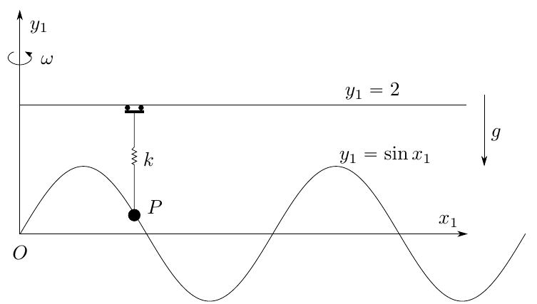
-
(a)
Write down the general expression for the components of the relative velocity and acceleration of $P$ in the reference frame $Ox_1y_1z_1$ as functions of the axial position of the bead, $x_1$, and its time derivatives $\dot x_1$ and $\ddot x_1$.
-
(b)
Identify all forces acting on the bead and then write down the three components of Newton's second law in the $Ox_1y_1z_1$ reference frame. From these equations, obtain an explicit expression of the components of the reaction force on the wire as a function of $x_1$, $\dot x_1$ and the parameters of the problem only, and a second order differential equation for $x_1$ that does not depend on the reaction force.
-
(c)
Is it possible to use the equation of conservation of mechanical energy of the relative motion of $P$? If so, write it down in terms of $x_1$, $\dot x_1$ and the parameters of the problem. What is the relation of this equation with the differential equation for $x_1$ in the previous point?
-
(d)
For $\omega = 0$ and $x_1 \in [0, 2\pi]$, discuss the existence of equilibrium positions as a function of the parameter $\lambda = mg/k$. Are these equilibrium positions stable?
-
(e)
Consider now that $\omega \neq 0$, and $k = 0$. We drop the bead $P$ at $x_1 = \pi$ with no initial velocity. Sketch the shape of the potential and discuss qualitatively the motion of $P$ if the parameter $\beta = \omega^2/g$ is small or large. Write down the system of equations that would allow to solve for the critical value of $\beta$ that divides between the two behaviors.
Worked Solution [ Click to Expand ]
Reference Frames, Bases and Coordinates
A heavy bead $P$ of mass $m$ slides without friction on a plane wire of sine shape; a vertical spring of stiffness $k$ joins it to a horizontal rail along which its upper end slides freely, and the whole setup turns about the vertical axis $Oy_1$ with the constant rate $\omega$ (Problems.pdf, p. 15). The statement asks for the relative velocity and acceleration, the three components of Newton's second law with the reaction and the equation of motion, the energy equation of the relative motion, the equilibria without rotation, and the motion without spring after a release at $x_1$ equal to $\pi$. The wire, rail and spring are at rest in the turning frame, so the solution works there, with the composition of motions of Notes.pdf, Sec. 3.2 and the inertia forces of Notes.pdf, Sec. 4.9.
| Item | Definition |
|---|---|
| Wire and rail | wire $y_1 = \sin x_1$, rail $y_1 = 2$, both in the plane $Ox_1y_1$, fixed in $S_1$ |
| Fixed (inertial) frame | $S_0 = \{O;\ \mathcal B_0\}$, $\mathcal B_0 = \{\mathbf i_0, \mathbf j_0, \mathbf k_0\}$, $\mathbf j_0$ vertical, up, along the axis of rotation, $\mathbf k_0 = \mathbf i_0\times\mathbf j_0$ (Notes.pdf, Eq. 2.1) |
| Moving frame | $S_1 = \{O;\ \mathcal B_1\}$, the frame $Ox_1y_1z_1$ of the statement: $\mathbf i_1$ along $Ox_1$ in the plane of the wire, $\mathbf j_1 = \mathbf j_0$, $\mathbf k_1 = \mathbf i_1\times\mathbf j_1$ normal to the plane; it coincides with $S_0$ at $t = 0$ and turns by $\omega t$ about $\mathbf j_0$ |
| Wire directions | $\mathbf t = \mathbf i_1 + \cos x_1\,\mathbf j_1$ (tangent, in the sense of growing $x_1$) and $\mathbf n = -\cos x_1\,\mathbf i_1 + \mathbf j_1$ (in-plane normal), both of length $\sqrt{1 + \cos^2 x_1}$ |
| Coordinate | $x_1$, the axial position of the bead |
| Constraints | $z_1 = 0$ and $y_1 = \sin x_1$: two holonomic, smooth, bilateral constraints, fixed in $S_1$ |
| Degrees of freedom | 3 minus 2: 1, the coordinate $x_1(t)$ |
| Data | $m$ [kg], $k$ [N m$^{-1}$], $g$ [m s$^{-2}$], $\omega$ [rad s$^{-1}$]; $\lambda = mg/k$ [m] (part (d)); $\beta = \omega^2/g$ [m$^{-1}$] (part (e)) |
| Unknowns | $x_1(t)$; the reaction $\mathbf N = N_x\,\mathbf i_1 + N_y\,\mathbf j_1 + N_z\,\mathbf k_1$ with $\mathbf N\cdot\mathbf t$ zero (smooth wire) |
| Applied forces | weight $-mg\,\mathbf j_1$; spring, vertical, towards the rail |
| Inertia forces (in $S_1$) | of the origin, Euler, centrifugal and Coriolis (Notes.pdf, Eq. 4.62) |
| Hypotheses | $S_0$ inertial; uniform gravity; smooth wire; massless spring with its upper end free on a smooth rail, so it stays vertical; $\omega$ constant |
| Readings | the wire equation is numerical, with $x_1$ and $y_1$ in metres (the rail at 2 m); the natural length of the spring is taken as zero, as the energy integral of the key implies (with a natural length $\ell_0$, replace 2 by $2 - \ell_0$ in the spring terms; the bounds on $\lambda$ in part (d) then shift by $\ell_0$) |
Change of Basis and Position Vector
View from above, along $\mathbf j_0$, which points out of the paper (⊙). With $\mathbf i_0$ to the right, $\mathbf k_0$, the cross product of $\mathbf i_0$ and $\mathbf j_0$, points down the page (right-hand rule: fingers from $\mathbf i_0$, to the right, towards $\mathbf j_0$, towards the reader; the thumb goes down the page), so minus $\mathbf k_0$ points up the page. A positive $\omega$ turns the setup counterclockwise in this view. $\mathbf i_1$ is $\mathbf i_0$ turned by $\omega t$: hypotenuse 1, adjacent leg $\cos\omega t$ along $\mathbf i_0$, opposite leg $\sin\omega t$ up the page, along minus $\mathbf k_0$ (the minus sign). $\mathbf k_1$ is $\mathbf k_0$ turned by the same angle: adjacent leg $\cos\omega t$ along $\mathbf k_0$, opposite leg $\sin\omega t$ along plus $\mathbf i_0$.
Units: $[\omega t] = [1]$
Meaning: it is the matrix of Eq. 1.19 with the angle $\omega t$; the vertical keeps its direction, so the weight has the same components in both frames.
The plane of the wire, fixed in $S_1$, is drawn with $\mathbf i_1$ to the right and $\mathbf j_1$ up, so $\mathbf k_1$ points out of the paper (⊙) and a quarter turn about it is counterclockwise. The bead is at the abscissa $x_1$ and at the height of the wire; the spring goes vertically from $P$ up to the rail. In the slope triangle the horizontal leg is $dx_1$ and the vertical leg $dy_1$; the hypotenuse lies along the wire, so the vector sum of the two legs divided by $dx_1$ is a tangent vector.
Units: $[x_1] = [y_1] = [\ell_s] = [\mathrm{L}]$
Meaning: the minus sign of $\mathbf n$: the tangent turned a quarter turn counterclockwise sends its horizontal part up and its vertical part to the left. The spring is never compressed below zero length, because the wire stays below the rail.
Kinematics
Units: $[\omega] = [\mathrm{T^{-1}}]$
Meaning: seen from $S_1$ the three unit vectors are constant; seen from $S_0$ the horizontal ones turn with the setup.
(a) Relative velocity and acceleration
Units: $[\dot x_1] = [\mathrm{L\,T^{-1}}]$; $[\ddot x_1] = [\dot x_1^2] = [\mathrm{L\,T^{-2}}]$ (the arguments of sine and cosine in metres, numerically)
Meaning: the relative velocity is tangent to the wire; the relative acceleration has no component normal to the plane of the wire.
Units: $[\omega\dot x_1] = [\omega^2x_1] = [\mathrm{L\,T^{-2}}]$
Meaning: the Coriolis term is normal to the plane of the wire and the centripetal term points horizontally to the axis; with $O$ fixed and $\omega$ constant there are no origin or Euler terms.
Forces and Equations of Motion
The free-body diagram of the bead in $S_1$ shows, in the plane of the wire, the weight, the spring force (vertical, up to the rail), the in-plane reaction along $\mathbf n$ and the centrifugal force (horizontal, away from the axis); normal to the plane, the reaction along $\mathbf k_1$ and the Coriolis force.
(b) Forces, Newton's second law, reaction and equation of motion
Units: $[k\,\ell_s] = [mg] = [m\omega^2x_1] = [m\omega\dot x_1] = [\mathrm{M\,L\,T^{-2}}]$
Meaning: four actual forces (weight, spring, two reaction components in the plane tied by the smooth condition, one normal to it) and two inertia forces.
Units: every term $[\mathrm{M\,L\,T^{-2}}]$
Meaning: three scalar equations plus the smooth condition for the four unknowns $x_1$, $N_x$, $N_y$, $N_z$. The in-plane reaction is $N_y$ times $\mathbf n$, normal to the wire; the reaction normal to the plane cancels the Coriolis force.
Answers and Checks
(c) Energy of the relative motion
Yes, it can be used, for two reasons. First, the forces that do no work in $S_1$: the reaction (smooth wire at rest in $S_1$, normal to the relative velocity), the Coriolis force (normal to the relative velocity), and the force of the origin and the Euler force, which vanish. Second, the forces that do work have potentials that depend on the position only: the weight, the spring (its upper end slides freely, so only its length matters) and the centrifugal force ($\omega$ constant). Along the wire the displacement is $\mathbf t\,dx'$.
Units: $[m\dot x_1^2] = [mg\,x_1] = [k\,\ell_s^2] = [m\omega^2x_1^2] = [\mathrm{M\,L^2\,T^{-2}}]$
Meaning: the constant is fixed by the initial position and rate. The centrifugal potential is lowest far from the axis: the rotation pushes the bead outwards.
Units: $[\dot x_1][\mathrm{M\,L\,T^{-2}}] = [\mathrm{M\,L^2\,T^{-3}}]$, a power
Meaning: the energy equation is a first integral of the equation of motion: it is that equation multiplied by the rate and integrated once, and differentiating it gives the equation of motion back wherever the rate is not zero.
(d) Equilibria without rotation
With $\omega$ zero the potential is the weight term plus the spring term, and the equation of motion has minus its derivative on the right-hand side.
Units: $[\lambda] = [mg/k] = [\mathrm{L}]$, compared with the heights $2$ and $\sin x_1$ in metres
Meaning: at the crest and at the trough the wire is horizontal, so the vertical forces need no balance along the wire; at the other points the weight and the spring force balance each other exactly, which needs a spring length equal to $\lambda$.
Units: $[V''] = [k] = [\mathrm{M\,T^{-2}}]$
Meaning: a stiff spring (small $\lambda$) holds the bead on the crest; a heavy bead (large $\lambda$) sits in the trough; in between the bead rests on the flank where weight and spring balance. At the two limiting values the derivative grows like the cube of the distance, a minimum of fourth order: stable, with no linear restoring force.
(e) Motion without spring after a release at pi
Units: $[\tilde V] = [\beta x_1^2] = [\mathrm{L}]$
Meaning: the bead starts towards larger $x_1$, down the wire into the trough near three halves of $\pi$; it moves only where the scaled potential lies below its starting value.
The scaled potential is a sine of amplitude 2 riding on the downward parabola of the centrifugal term: wells near the troughs, humps near the crests, and it tends to minus infinity far from the axis. The bead is trapped if some point beyond $\pi$ has a potential at least equal to the starting value; it escapes if the potential decreases all the way.
Units: $[\beta] = [\mathrm{L^{-1}}]$; $[\tilde V] = [\mathrm{L}]$
Meaning: slow rotation: gravity keeps the bead in the well of the trough, and it swings back to the release point, where it stops and starts again. Fast rotation: the centrifugal term lowers every hump below the start and throws the bead outwards along the wire. For the larger example the next hump, at 7.069 m, has the value $-3.582$ m, below the start: escape.
At the critical value the bead creeps towards the top $x_c$ of the first hump beyond $\pi$, where the potential is stationary and equal to its starting value.
Units: $[\beta_c x_c^2] = [\mathrm{L}]$; $[\beta_c x_c] = [1]$
Meaning: just below the critical value the hump still stands above the start and the bead turns back; just above it the hump is below the start and the bead passes over it.
| Part of the statement | Answer |
|---|---|
| (a) Relative velocity and acceleration | $\mathbf v_1^P = (\dot x_1,\ \cos x_1\,\dot x_1,\ 0)$, $\mathbf a_1^P = (\ddot x_1,\ \cos x_1\,\ddot x_1 - \sin x_1\,\dot x_1^2,\ 0)$ in $\mathcal B_1$ |
| (b) Forces | weight $-mg\,\mathbf j_1$, spring $k(2 - \sin x_1)\,\mathbf j_1$, reaction $(N_x, N_y, N_z)$ with $N_x + N_y\cos x_1 = 0$, centrifugal $m\omega^2x_1\,\mathbf i_1$, Coriolis $2m\omega\dot x_1\,\mathbf k_1$ |
| (b) Newton, three components | $m\ddot x_1 = N_x + m\omega^2x_1$; $m(\cos x_1\,\ddot x_1 - \sin x_1\,\dot x_1^2) = N_y - mg + k(2 - \sin x_1)$; $0 = N_z + 2m\omega\dot x_1$ |
| (b) Reaction | $N_y = [m(\omega^2x_1\cos x_1 - \dot x_1^2\sin x_1) + mg - k(2 - \sin x_1)]/(1 + \cos^2 x_1)$, $N_x = -N_y\cos x_1$, $N_z = -2m\omega\dot x_1$ |
| (b) Equation of motion | $m(1 + \cos^2 x_1)\ddot x_1 - m\sin x_1\cos x_1\,\dot x_1^2 = m\omega^2x_1 - mg\cos x_1 + k\cos x_1(2 - \sin x_1)$ |
| (c) Energy | yes: $\frac12 m\dot x_1^2(1 + \cos^2 x_1) + mg\sin x_1 + \frac12 k(2 - \sin x_1)^2 - \frac12 m\omega^2x_1^2 = $ const; it is the first integral of the equation of motion (its time derivative is the rate times that equation) |
| (d) Equilibria, $\omega = 0$ | $\pi/2$ (stable for $\lambda \le 1$), $3\pi/2$ (stable for $\lambda \ge 3$), $\sin x_1 = 2 - \lambda$ for $1 \lt \lambda \lt 3$ (stable) |
| (e) Motion, $k = 0$ | $\tilde V = 2\sin x_1 - \beta x_1^2$; small $\beta$: oscillation; large $\beta$: escape to infinity; critical value from $2\sin x_c - \beta_c x_c^2 = -\beta_c\pi^2$, $\cos x_c = \beta_c x_c$ ($x_c \simeq 7.544$ m, $\beta_c \simeq 0.0405$ m$^{-1}$) |
| Reading of the spring | natural length zero; with a natural length $\ell_0$, replace 2 by $2 - \ell_0$ in the spring terms |
Check against the official key: Problems.pdf, p. 74 prints the energy integral, the reaction, the equilibria for zero rotation and the system for the critical value. The energy integral and the reaction coincide (box below). The equilibria coincide after a change of parameter: the key writes them with a parameter $\alpha$ that the statement does not define, and its statements match these results exactly when $\alpha$ is the reciprocal of $\lambda$ (box below). The system for the critical value coincides, but the key assigns the two behaviours the other way round: see the warning.
Units: $[\alpha] = [\mathrm{L^{-1}}]$
Meaning: the key's stability statements are the ones of part (d) written with the reciprocal parameter; at the limiting values $\lambda$ equal to 1 and 3 this solution also finds stability (fourth-order minimum), which the key, with strict inequalities, leaves out.
In $\mathcal B_1$ the position has the components $(x_1, \sin x_1, 0)$ and the absolute velocity $(\dot x_1, \cos x_1\,\dot x_1, -\omega x_1)$. The component along $\mathbf j_1$ of a vector product is the third component of the first factor times the first of the second, minus the first of the first times the third of the second.
Units: $[x_1N_z] = [\mathrm{M\,L^2\,T^{-2}}]$
Meaning: the reaction normal to the plane is the one that keeps the bead turning with the wire while its distance to the axis changes: the same value as the Coriolis balance of part (b).
Units: $[\lambda] = [\mathrm{L}]$
Meaning: without spring the bead rests in the trough like any heavy bead; with a very stiff spring it is held on the crest, nearest to the rail.
Spherical Pendulum with a Vertically Oscillating Suspension Point
Original statement · Problems.pdf, p. 16A point particle $P$ of mass $m$ is attached with a massless cord of length $L$ to the point $A$, as shown in the figure. The point $A$ is oscillating vertically with respect to the fixed reference frame $Oxyz$ according to the law $z = a\sin\omega t$, where $a$ and $\omega$ are known constants. The position of the particle $P$ with respect to the moving reference frame $Ax'y'z'$ is completely specified by the angles $\varphi$ and $\theta$ shown in the figure.
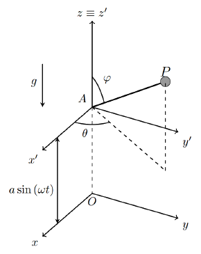
At $t = 0$ the relative position and relative velocity of the particle are defined by the values
where $g$ is the gravitational acceleration. We define the following unit vectors that define a spherical coordinate system
The partial derivatives of these vectors with respect to $\varphi$ and $\theta$ are
-
(a)
Show that the relative acceleration of $P$ with respect to $Ax'y'z'$ can be expressed as $\mathbf{a}'_P = -L\left(\dot\varphi^2 + \dot\theta^2\sin^2\varphi\right)\mathbf{e}_r + L\left(\ddot\varphi - \dot\theta^2\sin\varphi\cos\varphi\right)\mathbf{e}_\varphi + L\left(\ddot\theta\sin\varphi + 2\dot\theta\dot\varphi\cos\varphi\right)\mathbf{e}_\theta$.
-
(b)
Write down a system of three ordinary differential equations that once solved would yield the angles $\theta$ and $\varphi$, and the tension on the cord as a function of time (you do not need to solve it).
-
(c)
At $t = 0$, determine the relative acceleration of $P$ with respect to $Ax'y'z'$.
-
(d)
At $t = 0$, determine the value of the tension on the cord.
Worked Solution [ Click to Expand ]
Reference Frames, Bases and Coordinates
A particle $P$ of mass $m$ hangs from a massless cord of length $L$ fixed at the point $A$, which oscillates on the vertical axis of the fixed frame with the height $a\sin\omega t$; in the frame $Ax'y'z'$ the particle is located by the angles $\varphi$ and $\theta$ of the figure, and the statement gives the spherical unit vectors, their partial derivatives and the initial values of the angles and rates (Problems.pdf, p. 16). The statement asks to show the relative acceleration, to write the equations of motion with the tension, and to evaluate the relative acceleration and the tension at the start. The frame $Ax'y'z'$ translates without turning, so the composition of motions of Notes.pdf, Sec. 3.2 reduces to Eq. 3.28 and Eq. 3.29, and the only inertia force of Notes.pdf, Sec. 4.9 is the force of the origin.
| Item | Definition |
|---|---|
| Fixed (inertial) frame | $S_0 = \{O;\ \mathcal B_0\}$, the frame $Oxyz$, $\mathcal B_0 = \{\mathbf i, \mathbf j, \mathbf k\}$ of the statement, $\mathbf k$ vertical, up (Notes.pdf, Eq. 2.1) |
| Moving frame | $S_1 = \{A;\ \mathcal B_1\}$, the frame $Ax'y'z'$; its axes stay parallel to those of $Oxyz$ (figure of the statement), so $\mathcal B_1 = \mathcal B_0$ |
| Spherical basis | $\mathcal B_s = \{\mathbf e_r, \mathbf e_\varphi, \mathbf e_\theta\}$ of the statement, attached to $P$ |
| Coordinates | $\varphi$, the angle from the upward axis $Az'$ to the cord $AP$ (figure, and $\mathbf e_r\cdot\mathbf k = \cos\varphi$); $\theta$, the azimuth of the vertical plane of the cord, from $Ax'$, counterclockwise seen from above |
| Constraint | $P$ at the distance $L$ from $A$ (taut cord) |
| Degrees of freedom | 3 minus 1: 2, the angles $\varphi(t)$ and $\theta(t)$; the motion of $A$ is prescribed |
| Data | $m$ [kg], $L$ [m], $a$ [m], $\omega$ [rad s$^{-1}$] (the frequency of the oscillation of $A$, not a rotation of the frame), $g$ [m s$^{-2}$] |
| Initial state | $\theta_0 = 0$, $\varphi_0 = 30^\circ$, $\dot\theta_0 = \sqrt{2g/(\sqrt3 L)}$, $\dot\varphi_0 = 0$ (relative values) |
| Unknowns | $\varphi(t)$, $\theta(t)$ and the tension $T(t)$, positive when the cord pulls $P$ towards $A$ |
| Applied forces | weight $-mg\,\mathbf k$; cord $-T\,\mathbf e_r$ |
| Inertia force (in $S_1$) | of the origin only (Notes.pdf, Eq. 4.62 with zero angular velocity) |
| Hypotheses | $S_0$ inertial; uniform gravity; massless cord, taut as long as $T \ge 0$; no friction or drag |
| Reading | the statement as written ($\varphi$ from the upward vertical, $P$ above the horizontal plane of $A$ at the start). The other reading, $\varphi$ from the downward vertical (a conical pendulum hanging below $A$, for which the given $\dot\theta_0$ is the steady rate), is worked out in the Answers section and listed in the table |
Change of Basis and Position Vector
Units: $[a\omega^2] = [\mathrm{L\,T^{-2}}]$; $[\omega t] = [1]$
Meaning: the frame of $A$ only translates up and down; at the start $A$ passes through $O$ with zero acceleration.
First figure: the vertical plane through $Az'$ and the cord, with $\mathbf u$ its horizontal unit vector from the axis towards $P$. In the shaded right triangle the hypotenuse is the cord $L$; the angle $\varphi$ is at $A$, measured from the upward vertical, so the adjacent leg is vertical, $L\cos\varphi$ along $\mathbf k$, and the opposite leg is horizontal, $L\sin\varphi$ along $\mathbf u$. The standard polar angle of $P$ in that plane, measured from $\mathbf u$, is $\pi/2 - \varphi$: the latitude, which is the angle called $\varphi$ in the spherical coordinates of Notes.pdf, Eq. 2.31, while the $\varphi$ of the statement is the colatitude, measured from the vertical. Second figure (below): the view from above, $\mathbf k$ out of the paper (⊙), $Ax'$ to the right and $Ay'$ up; the horizontal projection, of length $L\sin\varphi$, makes the azimuth $\theta$ with $Ax'$: adjacent leg along $\mathbf i$, opposite leg along $\mathbf j$.
Units: $[L] = [a] = [\mathrm{L}]$; angles dimensionless
Meaning: with $\varphi$ below a right angle the vertical component $\cos\varphi$ is positive: at the start, with $\varphi$ equal to 30 degrees, the particle is above the horizontal plane through $A$, as drawn in the figure of the statement.
$\mathbf e_\varphi$ is the direction in which $P$ moves when $\varphi$ grows: in the meridian plane, perpendicular to the cord, pointing down and away from the axis (the minus sign of its $\mathbf k$ component: $\varphi$ is measured from the upward vertical, so a growing $\varphi$ lowers the particle). Because the Notes measure the latitude, the unit vector of their Eq. 2.32 to Eq. 2.34 for that angle is minus the $\mathbf e_\varphi$ of the statement; $\mathbf e_r$ and $\mathbf e_\theta$ are the same. $\mathbf e_\theta$ is $\mathbf u$ turned by a quarter turn counterclockwise about $\mathbf k$ in the view from above (⊙): the horizontal part $\cos\theta\,\mathbf i$ turns into $\cos\theta\,\mathbf j$, and $\sin\theta\,\mathbf j$ turns into minus $\sin\theta\,\mathbf i$ (the minus sign).
Units: dimensionless: $[1]$
Meaning: these are the vectors and the six partial derivatives given in the statement; the last row writes the vertical along the cord and across it, the two legs of the meridian triangle.
Kinematics
(a) Relative acceleration
Eq. 2.33 is written with the latitude of the Notes; with the colatitude of the statement its angle is replaced by $\pi/2 - \varphi$ and its polar unit vector by minus $\mathbf e_\varphi$, which is what the rows below do directly from the partial derivatives.
The vectors $\mathbf i$, $\mathbf j$, $\mathbf k$ are constant in $S_1$; each spherical vector depends on time through the two angles, so its rate is the partial derivative with respect to $\varphi$ times the rate of $\varphi$ plus the one with respect to $\theta$ times the rate of $\theta$.
Units: every term $[\mathrm{L\,T^{-2}}]$
Meaning: this is the expression of the statement: along the cord the centripetal part of the motion on the sphere; across it, the angular accelerations with the centrifugal and the Coriolis-like terms of the spherical coordinates.
Units: $[\mathrm{L\,T^{-2}}]$
Meaning: no Euler, centrifugal or Coriolis terms: the frame does not turn.
Forces and Equations of Motion
The free-body diagram of $P$ in $S_1$ shows the pull of the cord towards $A$, the weight and the inertia force of the origin, both vertical. Weight and inertia force add up to an effective weight with a gravity that changes in time.
Units: $[a\omega^2] = [g] = [\mathrm{L\,T^{-2}}]$
Meaning: in the frame of $A$ the oscillation of the support only changes the strength of gravity: weaker while $A$ is above $O$, stronger while it is below, and reversed whenever the product $a\omega^2\sin\omega t$ exceeds $g$.
(b) Equations of motion and tension
Units: $[\dot\theta^2] = [g/L] = [\mathrm{T^{-2}}]$; $[mL\dot\theta^2] = [mg] = [\mathrm{M\,L\,T^{-2}}]$
Meaning: three equations for the three unknowns: the first two, with the initial values, give the two angles; the third then gives the tension.
Units: $[mL^2\dot\theta] = [\mathrm{M\,L^2\,T^{-1}}]$, an angular momentum
Meaning: the quantity is the vertical component of the angular momentum about $A$ computed with the relative velocity (Eq. 4.48). Its conservation comes from the $\mathbf e_\theta$ equation of $S_1$, which contains no force: the tension lies along $\mathbf e_r$, and the weight plus the inertia force of the moving support form a vertical effective weight with no $\mathbf e_\theta$ component. It is not taken from the theorem of a fixed point, because $A$ accelerates.
Answers and Checks
(c) Relative acceleration at the start
Units: $[g] = [\mathrm{L\,T^{-2}}]$
Meaning: this is the value the equations of the taut cord give; part (d) shows that the cord cannot actually be taut at that instant, and the box after it gives the acceleration of the real, slack start.
(d) Tension at the start
Units: $[mg] = [\mathrm{M\,L\,T^{-2}}]$
Meaning: the given rate is too small to keep a particle above the plane of $A$ on a taut cord: the cord would have to push with the force $mg/\sqrt3$, which only a massless rigid rod could do. With a cord, the particle starts in free fall in the frame of $A$ and the taut-cord equations do not apply at the start.
If $\varphi$ is measured from the downward vertical (the particle below $A$, as in a hanging pendulum), the radial vector has the vertical component minus $\cos\varphi$, the derivative relations of the basis are the same, so the relative acceleration keeps the form of part (a), and the vertical in the new basis is minus $\cos\varphi$ times the radial vector plus $\sin\varphi$ times the new $\mathbf e_\varphi$.
Units: $[g] = [\mathrm{L\,T^{-2}}]$; $[mg] = [\mathrm{M\,L\,T^{-2}}]$
Meaning: in this reading the given rate is exactly the one of a steady conical pendulum at 30 degrees from the downward vertical: the angle has no acceleration at the start, the relative acceleration points horizontally to the axis, and the cord pulls with twice the weight divided by the square root of 3.
| Part of the statement | Answer |
|---|---|
| (a) Relative acceleration | $\mathbf a'_P = -L(\dot\varphi^2 + \dot\theta^2\sin^2\varphi)\,\mathbf e_r + L(\ddot\varphi - \dot\theta^2\sin\varphi\cos\varphi)\,\mathbf e_\varphi + L(\ddot\theta\sin\varphi + 2\dot\theta\dot\varphi\cos\varphi)\,\mathbf e_\theta$, derived |
| (b) System of equations | $\ddot\varphi = \dot\theta^2\sin\varphi\cos\varphi + (g - a\omega^2\sin\omega t)\sin\varphi/L$; $\ddot\theta\sin\varphi + 2\dot\theta\dot\varphi\cos\varphi = 0$; $T = mL(\dot\varphi^2 + \dot\theta^2\sin^2\varphi) - m(g - a\omega^2\sin\omega t)\cos\varphi$ |
| (c) Relative acceleration at $t = 0$ | taut-cord model: $\mathbf a_1^P(0) = -\frac{g}{2\sqrt3}\,\mathbf e_r + \frac{g}{2}\,\mathbf e_\varphi = \frac{g}{2\sqrt3}\,\mathbf i - \frac{g}{2}\,\mathbf k$, modulus $g/\sqrt3$; actual cord (slack at the start): $-g\,\mathbf k$ |
| (d) Tension at $t = 0$ | $T(0) = -mg/\sqrt3$: impossible for a cord, which goes slack at the start (a rod would push with $mg/\sqrt3$) |
| Other reading ($\varphi$ from the downward vertical) | $\ddot\varphi_0 = 0$, $\mathbf a_1^P(0) = -\frac{g}{\sqrt3}\,\mathbf i$, $T(0) = 2mg/\sqrt3$ |
Check against the official key: Problems.pdf, p. 74 lists item 28 with no answer, so there is no key to compare with. Independent checks: the relative acceleration of part (a) is also the second derivative of the Cartesian components of $L\,\mathbf e_r$ (box below), and the limiting cases close the results.
Units: $[\mathrm{L\,T^{-2}}]$
Meaning: the Cartesian route, which never uses the spherical basis, gives the same vector as part (c).
Units: $[mg_e] = [\mathrm{M\,L\,T^{-2}}]$
Meaning: with a still support the problem is the ordinary spherical pendulum; a particle hanging at rest below the oscillating support feels the weight changed by the inertia force of the support, and the cord stays taut only while $g$ exceeds the product $a\omega^2\sin\omega t$.
Particle on a Rotating Quarter Circumference with a Spring
Original statement · Problems.pdf, p. 18A point particle $P$ of mass $m$ is constrained to move on a smooth quarter of circumference as shown in the figure below. We define a moving reference frame $OX_1Y_1Z_1$ that rotates with respect to an inertial reference frame $OXYZ$. The rotation of the moving reference frame is performed along a vertical axis defined as $x_1 = -R$ and $y_1 = 0$; the angular velocity is $\boldsymbol{\omega} = \omega\mathbf{k} = \omega\mathbf{k}_1$. The particle is attached to a linear spring with the other end attached to the point $B$ of the reference frame $OX_1Y_1Z_1$ with coordinates $(-2R, 0, 0)$. The constant of the spring is $K = \alpha m\omega^2$. The angle between $\overline{OP}$ and the negative side of the $z_1$ axis, $\phi$, is used to define the position of the particle. Neglect the action of gravity on the particle.
Initially the particle is located at $\phi = 0$ and it is set to motion with a relative velocity $-\beta\omega R\,\mathbf{i}_1$. Both $\alpha$ and $\beta$ are positive nondimensional parameters.
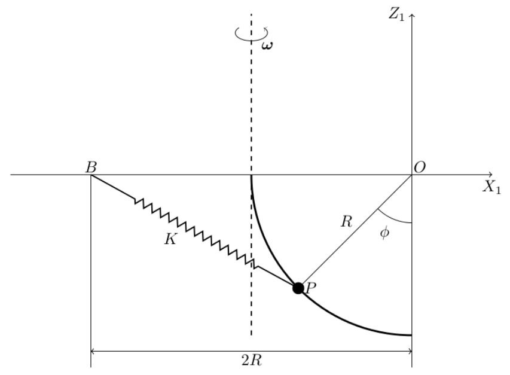
-
(a)
Compute the relative velocity and the relative acceleration of the particle in the path variable reference frame $\{\mathbf{e}_t, \mathbf{e}_n, \mathbf{e}_b\}$ as functions of the coordinate $\phi$ and their derivatives.
-
(b)
Write down the three components of Newton's second law expressed in the path variables reference frame $\{\mathbf{e}_t, \mathbf{e}_n, \mathbf{e}_b\}$.
-
(c)
Express the energy conservation equation in the relative reference frame. Discuss if this equation is equivalent to one of the above ones.
Let us now consider a different problem. Depending on the values of the parameters, we may find the equilibrium of the forces at different positions.
-
(d)
Obtain the value of $\alpha$ to have an equilibrium position when the particle is positioned at $\phi$ equal to $\pi/6$.
For this value of $\alpha$, the particle is again located at $\phi = 0$ and is set to motion with the relative velocity defined before.
-
(e)
Describe the possible types of motion for the different values of $\beta$. In particular, obtain the critical value of $\beta$ that makes the particle reach the position $\phi = \pi/2$ and the reaction force of the curve to the particle at that instant.
-
(f)
For a value of $\beta$ higher than the critical one, the particle leaves the arc of circumference and its motion is not anymore constrained. Under these conditions compute the maximum height reached by the particle, $z_{max}$, as a function of $\beta$. Note that the particle is still under the action of the spring.
Worked Solution [ Click to Expand ]
Reference Frames, Bases and Coordinates
A particle $P$ of mass $m$ slides on a smooth quarter circumference of radius $R$ and centre $O$, drawn in the plane $X_1Z_1$ of a frame that turns with the constant rate $\omega$ about the vertical axis through the point $(-R, 0, 0)$ of that frame; a spring of constant $K$ joins $P$ to the point $B$ of that frame, and gravity is neglected (Problems.pdf, p. 18). The statement asks for the relative velocity and acceleration in the path basis, the three components of Newton's second law, the energy equation of the relative motion, the value of $\alpha$ that gives an equilibrium at $\pi/6$, the types of motion with that value, and the maximum height after the particle leaves the arc. The arc and the point $B$ are at rest in the turning frame, so the solution works there, with the composition of motions of Notes.pdf, Sec. 3.2 and the inertia forces of Notes.pdf, Sec. 4.9.
| Item | Definition |
|---|---|
| Fixed (inertial) frame | $S_0 = \{Q;\ \mathcal B_0\}$, $\mathcal B_0 = \{\mathbf i_0, \mathbf j_0, \mathbf k_0\}$, origin $Q$ on the rotation axis at the height of $O$, $\mathbf k_0$ vertical, up; it plays the role of the inertial frame $OXYZ$ of the statement (see Readings) |
| Moving frame | $S_1 = \{O;\ \mathcal B_1\}$, the frame $OX_1Y_1Z_1$ of the statement, attached to the arc: $\mathbf i_1$ horizontal, from the axis through $O$; $\mathbf k_1 = \mathbf k_0$; $\mathbf j_1 = \mathbf k_1\times\mathbf i_1$; $\mathbf i_1 = \mathbf i_0$ at $t = 0$ |
| Points fixed in $S_1$ | $O$ (centre of the arc), at distance $R$ from the axis; $Q$, at $-R\,\mathbf i_1$ from $O$ (upper end of the arc); $B$, at $-2R\,\mathbf i_1$ from $O$ |
| Path basis | $\{\mathbf e_t, \mathbf e_n, \mathbf e_b\}$ at $P$: tangent in the sense of growing $\phi$, principal normal towards the centre of curvature $O$, binormal (deduced below) |
| Coordinate | $\phi$, angle at $O$ between $\overline{OP}$ and the negative $z_1$ axis, $0 \le \phi \le \pi/2$ |
| Constraints | $y_1 = 0$ and $x_1^2 + z_1^2 = R^2$ (quarter with $x_1 \le 0$, $z_1 \le 0$): two holonomic, smooth, bilateral constraints, fixed in $S_1$ |
| Degrees of freedom | 3 minus 2: 1, the coordinate $\phi(t)$, while $P$ is on the arc; 3 after it leaves the arc (part (f)) |
| Data | $m$ [kg], $R$ [m], $\omega$ [rad s$^{-1}$], $K = \alpha m\omega^2$ [N m$^{-1}$]; $\alpha$, $\beta$ positive numbers [1] |
| Initial conditions | $\phi(0) = 0$; relative velocity $-\beta\omega R\,\mathbf i_1$ |
| Unknowns | $\phi(t)$; the reaction $\mathbf N = N_n\,\mathbf e_n + N_b\,\mathbf e_b$ (no tangential component: smooth arc) |
| Applied forces | spring only (no gravity) |
| Inertia forces (in $S_1$) | of the origin, Euler, centrifugal and Coriolis (Notes.pdf, Eq. 4.62) |
| Hypotheses | $S_0$ inertial; $\omega$ constant; smooth arc acting as a bead on a wire; massless linear spring |
| Readings | (1) The origin $O$ of the statement's inertial frame cannot be the centre of the arc, which moves on a circle; the fixed origin is taken at $Q$, on the axis. Any fixed origin gives the same velocities and accelerations. (2) No natural length is given: the spring is taken with zero natural length, force $-K$ times the vector from $B$ to $P$. With a natural length $\ell_0$ the spring potential becomes $\frac12 K\left(R\sqrt{5 - 4\sin\phi} - \ell_0\right)^2$ and every spring term below changes. (3) The arc ends at $\phi = 0$ (on the $-z_1$ axis) and at $\phi = \pi/2$ (on the rotation axis), as drawn |
Change of Basis and Position Vector
View from above, along $\mathbf k_0$, which points out of the paper (⊙), with the axis at $Q$. With $\mathbf i_0$ to the right, $\mathbf j_0$, the cross product of $\mathbf k_0$ and $\mathbf i_0$, points up the page (right-hand rule: thumb towards the reader, the fingers turn $\mathbf i_0$ counterclockwise by a quarter turn). A positive $\omega$ turns the frame counterclockwise. $\mathbf i_1$ is $\mathbf i_0$ turned by $\omega t$: hypotenuse 1, adjacent leg $\cos\omega t$ along $\mathbf i_0$, opposite leg $\sin\omega t$ up the page, along plus $\mathbf j_0$ (no minus sign). $\mathbf j_1$ is $\mathbf j_0$ turned by the same angle: adjacent leg $\cos\omega t$ along $\mathbf j_0$, and the counterclockwise turn carries its tip to the left, so the opposite leg $\sin\omega t$ lies along minus $\mathbf i_0$ (the minus sign).
Units: $[\omega t] = [1]$
Meaning: it is the matrix of Eq. 1.20 with the angle $\omega t$; the vertical keeps its direction, so heights are the same in both frames.
The plane $X_1Z_1$, fixed in $S_1$, is drawn with $\mathbf i_1$ to the right and $\mathbf k_1$ up; the direction out of the paper is the cross product of $\mathbf i_1$ and $\mathbf k_1$, which is minus $\mathbf j_1$, so $\mathbf j_1$ points into the paper (⊗). Let $F$ be the point of the $z_1$ axis at the height of $P$. In the shaded right triangle $OFP$ (right angle at $F$) the hypotenuse is $OP$, of length $R$, and the angle at $O$ is $\phi$: the adjacent leg $OF$ has length $R\cos\phi$ and points down, the opposite leg $FP$ has length $R\sin\phi$ and points to the left, towards $B$. The standard polar angle $\vartheta$ of the plane, measured from $\mathbf i_1$ towards $\mathbf k_1$, is minus the sum of a quarter turn and $\phi$.
Units: $[R\sin\phi] = [R\cos\phi] = [\rho] = [\mathrm{L}]$
Meaning: at the start the particle is at the lowest point of the arc, a distance $R$ from the axis; at a quarter turn it is at the upper end, on the axis. The angle grows clockwise in the drawing, from the downward axis towards $B$.
The arc length from the lowest point is $s$, equal to $R$ times $\phi$, so the derivative with respect to $s$ is the derivative with respect to $\phi$ divided by $R$ (chain rule). The binormal is the determinant expanded along its first row, with the cofactor signs plus, minus, plus.
Units: the three vectors are dimensionless; $[d\mathbf e_t/ds] = [\mathrm{L^{-1}}]$
Meaning: the tangent starts as minus $\mathbf i_1$ at the lowest point and ends as $\mathbf k_1$ at the upper end; the normal points along the radius to the centre; the binormal is the normal to the plane of the arc, into the paper.
Kinematics
Units: $[\omega] = [\mathrm{T^{-1}}]$
Meaning: seen from $S_1$ the three unit vectors are constant; seen from $S_0$ the horizontal ones turn with the frame.
(a) Relative velocity and acceleration in the path basis
Units: $[R\dot\phi] = [\mathrm{L\,T^{-1}}]$; $[R\ddot\phi] = [R\dot\phi^2] = [\mathrm{L\,T^{-2}}]$
Meaning: the relative velocity is tangent to the arc; the relative acceleration has the tangential part of the change of speed and the normal part towards the centre of the circle; nothing along the binormal.
The absolute position is differentiated as it stands, term by term; the terms are named afterwards.
Units: $[\omega^2R] = [\omega R\dot\phi] = [\mathrm{L\,T^{-2}}]$
Meaning: the origin term and the centripetal term add up to minus the square of the rate times the distance to the true axis, along $\mathbf i_1$: the point is pulled towards the axis, not towards $O$. The Coriolis term is normal to the plane of the arc. There is no Euler term, the rate being constant.
Forces and Equations of Motion
(b) Newton's second law in the path basis
Units: $[K\,R] = [\alpha m\omega^2R] = [m\omega R\dot\phi] = [\mathrm{M\,L\,T^{-2}}]$
Meaning: one actual applied force (the spring, towards $B$), the reaction with two unknown components, and the inertia forces: the origin and centrifugal terms together push the particle horizontally away from the true axis, and the Coriolis force is normal to the plane of the arc.
From the columns of $[{}_1R_F]$: the projections of $\mathbf i_1$ on $\mathbf e_t$ and $\mathbf e_n$ are minus the cosine and the sine; those of $\mathbf k_1$ are the sine and the cosine; $\mathbf j_1$ is $\mathbf e_b$.
Units: every component $[\mathrm{M\,L\,T^{-2}}]$
Meaning: along the arc the spring always pulls towards larger angles, up towards $B$, and the inertia forces of the rotation pull towards smaller angles, away from the axis.
Three scalar equations for three unknowns: the coordinate and the two components of the reaction.
Units: $[\ddot\phi] = [\omega^2] = [\mathrm{T^{-2}}]$; $[N_n] = [N_b] = [m\omega^2R] = [\mathrm{M\,L\,T^{-2}}]$
Meaning: the tangential component is the equation of motion; the normal and binormal components give the reaction once the motion is known. The binormal reaction balances the Coriolis force: the arc pushes the particle sideways so that it keeps turning with the plane while its distance to the axis changes.
Answers and Checks
(c) Energy conservation in the relative frame
Two reasons. First, the forces that do no work in $S_1$: the reaction (the arc is at rest in $S_1$ and the reaction is normal to the tangent), the Coriolis force (normal to the relative velocity) and the Euler force (zero). Second, the forces that do work have potentials that depend on the position in $S_1$ only: the spring (its end $B$ is fixed in $S_1$), and the sum of the origin and centrifugal forces, a function of the position alone because the rate $\omega$ is constant and the acceleration of the origin is a constant vector of $S_1$. With a variable rate the centrifugal force would change in time at a fixed point and the Euler force would appear: no potential.
Units: $[\mathbf F\cdot\mathbf v_1^P] = [\mathrm{M\,L^2\,T^{-3}}]$, a power
Meaning: the conditions of Slide 29 are met, so the mechanical energy of the relative motion is a constant of the motion.
Along the arc the displacement is $\mathbf e_t$ times $R\,d\phi'$, so each potential is minus the integral of the tangential component times $R$. In the second integral the substitution $u$ equal to $\sin\phi'$ has the differential $\cos\phi'\,d\phi'$ and the limits 0 and $\sin\phi$. Potentials are taken zero at the lowest point.
Units: $[mR^2\dot\phi^2] = [m\omega^2R^2] = [\mathrm{M\,L^2\,T^{-2}}]$
Meaning: the spring potential falls as the particle climbs towards $B$; the rotation potential rises as the particle approaches the axis. Up to additive constants they are one half of the spring constant times the squared length of the spring and minus one half of the mass times the squared rate times the squared distance to the axis (Slide 30).
The initial relative velocity is the velocity of part (a) at the start, where the tangent is minus $\mathbf i_1$.
Units: $[\dot\phi^2] = [\omega^2] = [\mathrm{T^{-2}}]$; $[dE_1^P/dt] = [\mathrm{M\,L^2\,T^{-3}}]$
Meaning: the energy equation is not new information: it is the first integral of the tangential component (that equation times the relative speed, integrated once), and its derivative gives it back wherever the rate is not zero. The normal and binormal components are independent of it and give the reaction.
(d) Value of alpha for an equilibrium at pi/6
Units: $[\alpha] = [1]$; $[N_n] = [\mathrm{M\,L\,T^{-2}}]$
Meaning: a soft spring, a quarter of the reference stiffness, balances along the arc the outward pull of the rotation at thirty degrees. At rest there the reaction points away from $O$: the arc holds the particle against the net pull towards the centre.
(e) Types of motion for alpha equal to 1/4, critical beta and reaction at pi/2
With $\alpha$ equal to one quarter, the factor $4\alpha - 2$ is minus one. The function $U(\phi)$ below plays the role of a potential: the motion is allowed where $U$ does not exceed $\beta^2$.
Units: $[U] = [\beta^2] = [1]$
Meaning: the barrier has its top at the equilibrium of part (d), which is therefore unstable (a maximum of the potential); the particle crosses it only if the square of $\beta$ exceeds one quarter.
For small $\beta$ the rate vanishes where $U$ reaches the square of $\beta$; the quadratic in the sine has two roots, and the particle, starting at the lowest point, meets the smaller one first. For $\beta$ equal to one half, write $\eta$ for the angle minus its equilibrium value.
Units: $[\beta] = [1]$; $[\omega\,t] = [1]$; $[\eta] = [1]$
Meaning: below the critical value the particle climbs part of the way, stops, comes back to the lowest point with its initial speed (energy conservation) and leaves the arc there, which ends at that point. At the critical value the distance to the top of the barrier decays exponentially and is never zero. Above it the rate never vanishes and the particle runs to the upper end.
At the upper end the sine is 1 and the cosine 0, the normal is the column of $[{}_1R_F]$ with these values, and the rate follows from the energy integral.
Units: $[m\omega^2R] = [\mathrm{M\,L\,T^{-2}}]$
Meaning: at the upper end the particle is on the axis and moves along it, so the origin and centrifugal forces together, and the Coriolis force, vanish there; the reaction points to $O$ and supplies the centripetal force of the circular path plus the balance of the spring, which there pulls towards $B$ with a quarter of the mass times the squared rate times $R$.
(f) Maximum height after leaving the arc
Once free, the particle has three coordinates in $S_1$; time $\tau$ is counted from the separation. Every inertia force is normal to $\mathbf k_1$: the origin and centrifugal forces lie along the horizontal from the axis, and the Coriolis force is the cross product of $\mathbf k_1$ with a vector. Only the spring has a vertical component.
Units: $[\beta R] = [\mathrm{L}]$; $[\tau_{max}] = [\mathrm{T}]$
Meaning: the vertical motion is a harmonic oscillation driven only by the vertical pull of the spring; the horizontal motion, coupled by the rotation, does not affect it. The height is measured from the horizontal plane through $O$ and $B$, the same in $S_0$ because the frames share the vertical. The result assumes the particle does not touch the arc again, which lies below that plane while the height stays positive.
| Part of the statement | Answer |
|---|---|
| (a) Relative velocity and acceleration | $\mathbf v_1^P = R\dot\phi\,\mathbf e_t$, $\mathbf a_1^P = R\ddot\phi\,\mathbf e_t + R\dot\phi^2\,\mathbf e_n$, with $\mathbf e_t = -\cos\phi\,\mathbf i_1 + \sin\phi\,\mathbf k_1$, $\mathbf e_n = \sin\phi\,\mathbf i_1 + \cos\phi\,\mathbf k_1$, $\mathbf e_b = \mathbf j_1$ |
| (b) Newton, $\mathbf e_t$ | $mR\ddot\phi = 2\alpha m\omega^2R\cos\phi - m\omega^2R(1 - \sin\phi)\cos\phi$, i.e. $\ddot\phi = \omega^2\cos\phi\,(2\alpha - 1 + \sin\phi)$ |
| (b) Newton, $\mathbf e_n$ | $mR\dot\phi^2 = N_n + \alpha m\omega^2R(1 - 2\sin\phi) + m\omega^2R(1 - \sin\phi)\sin\phi$ |
| (b) Newton, $\mathbf e_b$ | $0 = N_b + 2m\omega R\cos\phi\,\dot\phi$ |
| (c) Energy | $\frac12 mR^2\dot\phi^2 - 2\alpha m\omega^2R^2\sin\phi + m\omega^2R^2(\sin\phi - \frac12\sin^2\phi) = \frac12 m\beta^2\omega^2R^2$; equivalently $\dot\phi^2 = \omega^2[\beta^2 + (4\alpha - 2)\sin\phi + \sin^2\phi]$; it is the first integral of the $\mathbf e_t$ equation |
| (d) Equilibrium at $\pi/6$ | $\alpha = 1/4$ (and $\pi/2$ is an equilibrium for every $\alpha$); reaction there $-\frac14 m\omega^2R\,\mathbf e_n$ |
| (e) Types of motion | $\beta \lt 1/2$: turns back at $\sin\phi^* = \frac12(1 - \sqrt{1 - 4\beta^2})$, returns to $\phi = 0$ and leaves the arc; $\beta = 1/2$: approaches the unstable equilibrium $\pi/6$ asymptotically; $\beta \gt 1/2$: reaches $\pi/2$ with $\dot\phi = \beta\omega$ |
| (e) Critical value and reaction | $\beta_c = 1/2$; $\mathbf N(\pi/2) = m\omega^2R(\beta^2 + \frac14)\,\mathbf i_1$, tending to $\frac12 m\omega^2R\,\mathbf i_1$ as $\beta \to \beta_c$ |
| (f) Maximum height | $z_{max} = \beta R/\sqrt\alpha = 2\beta R$, at $\pi/\omega$ after leaving the arc |
| Reading of the spring | zero natural length; with a natural length $\ell_0$ the spring potential is $\frac12 K(R\sqrt{5 - 4\sin\phi} - \ell_0)^2$ and parts (b) to (f) change |
| Reading of the end of the arc | the arc ends at $\phi = 0$; if it continued below, the particle with $\beta \lt 1/2$ would keep moving to negative $\phi$ instead of leaving it there |
Check against the official key: Problems.pdf, p. 74 lists the number 30 with nothing after it: the key prints no answer. The results are checked independently below, with the axial angular momentum about the fixed rotation axis and with limiting cases.
In $\mathcal B_1$, with $Q$ as the fixed point, the position has the components $(\rho, 0, -R\cos\phi)$ and the absolute velocity $(-R\cos\phi\,\dot\phi,\ \omega\rho,\ R\sin\phi\,\dot\phi)$. The component along $\mathbf k_1$ of a vector product is the first component of the first factor times the second of the second, minus the second of the first times the first of the second. The spring force and the normal reaction lie in the plane of the arc, which contains the axis: no axial moment.
Units: $[\rho N_b] = [\mathrm{M\,L^2\,T^{-2}}]$
Meaning: the same value as the binormal component of part (b), obtained without inertia forces: the sideways push of the arc is what changes the angular momentum about the axis as the particle moves towards it.
Units: $[\alpha] = [\beta] = [1]$
Meaning: both forces scale with the square of the rate, because the stiffness is a multiple of the mass times the squared rate; the rate only sets the time scale, and the type of motion depends on $\alpha$ and $\beta$ alone.
Two heavy point particles, $P_1$ and $P_2$, of mass $m$ each, slide without friction along a rigid wire parabola given by the equation $z = x^2/(2L)$, where $L$ is a known length. The wire rotates about its axis with a fixed, known angular velocity $\omega$. The two particles repel each other electrically with a force of magnitude $F_E = k/d^2$, where $k$ is a known constant and $d$ is the distance between the particles. We define the rotating reference frame $Oxyz$ attached to the parabola as shown in the figure below.
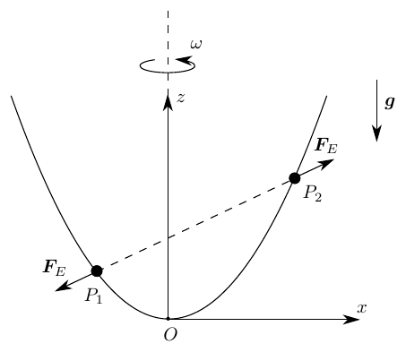
-
(a)
Write down the position, velocity, and acceleration vectors of each particle relative to $Oxyz$ in a generic instant of time, as a function of $x_1$, $x_2$ (the position of $P_1$ and $P_2$ along the $Ox$ axis) and their derivatives.
-
(b)
Write down Newton's second law for each particle in the $Oxyz$ reference frame.
-
(c)
If the rotation of the wire is maintained by a motor, how much torque must it produce in the $Oz$ direction to keep $\omega$ constant as a function of the variables of the problem and their derivatives?
-
(d)
Find out the equilibrium configurations of the system in the reference frame $Oxyz$ as a function of the parameters $\gamma = g/(\omega^2L)$ and $\kappa = k/(m\omega^2L^3)$.
Consider now that $P_1$ and $P_2$ are constrained to move symmetrically on each branch of the parabola, and that $\gamma = \kappa = 2$. Initially, $x_1(0) = L$ and $v_1(0) = L\omega$ (with $\dot x_1(0) \gt 0$).
-
(e)
Write down the equation that gives the minimum and maximum values of $x_1$ occurring in this case. Hint: this equation is a third-order polynomial in $x_1$.
Worked Solution [ Click to Expand ]
Reference Frames, Bases and Coordinates
Two heavy particles $P_1$ and $P_2$ of mass $m$ slide without friction on a parabolic wire in the vertical plane $Oxz$, which turns about its axis $Oz$ with the constant rate $\omega$; they repel each other with a force of magnitude $k$ over the square of their distance (Problems.pdf, p. 21). The statement asks for the relative position, velocity and acceleration of each particle, Newton's second law in the turning frame, the motor torque that keeps the rate constant, the equilibria in terms of $\gamma$ and $\kappa$, and the equation of the extreme values of $x_1$ in a symmetric motion. The wire is at rest in $Oxyz$, so the solution works there, with the composition of motions of Notes.pdf, Sec. 3.2 and the inertia forces of Notes.pdf, Sec. 4.9.
| Item | Definition |
|---|---|
| Fixed (inertial) frame | $S_0 = \{O;\ \mathcal B_0\}$, $\mathcal B_0 = \{\mathbf i_0, \mathbf j_0, \mathbf k_0\}$, origin at the vertex $O$ (on the axis, fixed), $\mathbf k_0$ vertical, up |
| Moving frame | $S_1 = \{O;\ \mathcal B_1\}$, the frame $Oxyz$ of the statement, attached to the wire: $\mathbf i_1$ along $Ox$ in the plane of the wire, $\mathbf k_1 = \mathbf k_0$ along the axis, $\mathbf j_1 = \mathbf k_1\times\mathbf i_1$ normal to the plane; $\mathbf i_1 = \mathbf i_0$ at $t = 0$ |
| Wire | $z = x^2/(2L)$, $y = 0$, fixed in $S_1$ |
| Local basis of the wire at $P_i$ | unit tangent $\mathbf t_i$ (sense of growing $x$), in-plane unit normal $\mathbf n_i$ (towards the concave side), and $\mathbf j_1$ |
| Coordinates | $x_1$, $x_2$: abscissas of $P_1$ and $P_2$ along $Ox$ |
| Constraints | for each particle $y_i = 0$ and $z_i = x_i^2/(2L)$: four holonomic, smooth, bilateral constraints, fixed in $S_1$; in part (e) also $x_2 = -x_1$ |
| Degrees of freedom | 6 minus 4: 2, the coordinates $x_1(t)$, $x_2(t)$; 1 in part (e) |
| Data | $m$ [kg], $L$ [m], $\omega$ [rad s$^{-1}$], $g$ [m s$^{-2}$], $k$ [N m$^2$]; $\gamma = g/(\omega^2L)$ and $\kappa = k/(m\omega^2L^3)$ [1] |
| Auxiliary symbols | $u_i = x_i/L$; $\sigma_i = \sqrt{1 + x_i^2/L^2}$ [1]; $\Delta x = x_1 - x_2$; $d$ distance between the particles; $D = d/L$ |
| Unknowns | $x_1(t)$, $x_2(t)$; reactions $\mathbf N_i = N_{in}\,\mathbf n_i + N_{iy}\,\mathbf j_1$ (no tangential component: smooth wire); in part (c) the motor torque $M_m$ |
| Applied forces | weights $-mg\,\mathbf k_1$; electric repulsion, equal and opposite, along the line $P_1P_2$ |
| Inertia forces (in $S_1$) | centrifugal and Coriolis; no origin or Euler terms (Notes.pdf, Eq. 4.62) |
| Hypotheses | $S_0$ inertial; uniform gravity; smooth wire acting as a bead guide; $\omega$ constant (held by the motor); the wire is massless (see part (c)) |
| Readings | (1) In part (e) "$v_1(0) = L\omega$" is read as the speed of $P_1$ relative to $Oxyz$; the other reading, the rate of the abscissa equal to $L\omega$, is worked in the Answers table. (2) The initial abscissa of $P_2$ in part (e) is $-L$, by the symmetry stated |
Change of Basis and Position Vector
View from above, along $\mathbf k_0$, which points out of the paper (⊙) at the vertex. With $\mathbf i_0$ to the right, $\mathbf j_0$, the cross product of $\mathbf k_0$ and $\mathbf i_0$, points up the page (thumb towards the reader, the fingers turn $\mathbf i_0$ counterclockwise by a quarter turn). A positive $\omega$ turns the wire counterclockwise. $\mathbf i_1$ is $\mathbf i_0$ turned by $\omega t$: hypotenuse 1, adjacent leg $\cos\omega t$ along $\mathbf i_0$, opposite leg $\sin\omega t$ along plus $\mathbf j_0$. $\mathbf j_1$ is $\mathbf j_0$ turned by the same angle: adjacent leg $\cos\omega t$ along $\mathbf j_0$; the counterclockwise turn carries its tip to the left, so the opposite leg $\sin\omega t$ lies along minus $\mathbf i_0$ (the minus sign). The plane of the wire is seen edge-on along $\mathbf i_1$.
Units: $[\omega t] = [1]$
Meaning: the matrix of Eq. 1.20 with the angle $\omega t$; heights and the weight have the same components in both frames.
The plane $Oxz$, fixed in $S_1$, is drawn with $\mathbf i_1$ to the right and $\mathbf k_1$ up; out of the paper is the cross product of $\mathbf i_1$ and $\mathbf k_1$, which is minus $\mathbf j_1$, so $\mathbf j_1$ points into the paper (⊗). A particle at the abscissa $x_i$ is reached from $O$ by $x_i$ along $\mathbf i_1$ and the height of the wire along $\mathbf k_1$. In the slope triangle the horizontal leg is $dx$ and the vertical leg $dz$; the hypotenuse lies along the wire, with length $\sigma_i\,dx$. The normal is the tangent turned a quarter turn counterclockwise in the drawing (components $(a, b)$ become $(-b, a)$), towards the concave side.
Units: $[x_i^2/L] = [\mathrm{L}]$; $[x_i/L] = [\sigma_i] = [1]$
Meaning: $\{\mathbf t_i, \mathbf n_i, -\mathbf j_1\}$ is a right-handed orthonormal triad at each particle; the reaction of the smooth wire lies in the plane of $\mathbf n_i$ and $\mathbf j_1$.
In the shaded right triangle of the chord the horizontal leg is $\Delta x$, the vertical leg is the difference of heights and the hypotenuse is the distance $d$.
Units: $[d] = [\Delta x] = [\mathrm{L}]$
Meaning: the slope of the chord is the mean of the slopes of the wire at its two ends.
Kinematics
Units: $[\omega] = [\mathrm{T^{-1}}]$
Meaning: seen from $S_1$ the unit vectors are constant; seen from $S_0$ the horizontal ones turn with the wire.
(a) Relative position, velocity and acceleration
Units: $[\dot x_i] = [\mathrm{L\,T^{-1}}]$; $[\ddot x_i] = [\dot x_i^2/L] = [\mathrm{L\,T^{-2}}]$
Meaning: the relative velocity is tangent to the wire and the relative acceleration lies in the plane of the wire.
Units: $[\omega^2x_i] = [\omega\dot x_i] = [\mathrm{L\,T^{-2}}]$
Meaning: the centripetal term points horizontally to the axis and the Coriolis term is normal to the plane of the wire; with $O$ fixed and the rate constant there are no origin or Euler terms.
Forces and Equations of Motion
(b) Newton's second law for each particle in Oxyz
The force on $P_1$ has the magnitude $k$ over the square of $d$ and the direction from $P_2$ to $P_1$ (repulsion); the force on $P_2$ is opposite.
Units: $[k/d^2] = [mg] = [m\omega^2x_i] = [m\omega\dot x_i] = [\mathrm{M\,L\,T^{-2}}]$
Meaning: this is Newton's second law of each particle in $Oxyz$ (Eq. 4.63): six scalar equations for the six unknowns, two coordinates and four reaction components. The centrifugal force pushes each particle away from the axis.
The projection on the tangent removes the reaction. The electric force on $P_2$ is the one on $P_1$ with the indices exchanged, because both the sign of $\Delta x$ and the direction of the force reverse.
Units: every term of the equations of motion $[\mathrm{M\,L\,T^{-2}}]$; $[k\,\Delta x^2/(L d^3)] = [\mathrm{M\,L\,T^{-2}}]$
Meaning: weight and centrifugal force combine along the wire into one linear term in the abscissa: restoring towards the vertex if gravity wins ($\gamma$ above 1), repelling if the rotation wins. The reaction normal to the plane cancels the Coriolis force.
Answers and Checks
(c) Motor torque that keeps omega constant
The particles push on the wire with minus the reactions. The wire is taken massless, so the moments about $Oz$ of all the actions on it add up to zero (a wire with mass, turning at a constant rate about its axis of symmetry, keeps its own angular momentum about the axis constant: rigid body result, extension; the torque is the same). The bearings act on the axis and have no moment about it. The component along $\mathbf k_1$ of the cross product of $x_i\,\mathbf i_1 + z_i\,\mathbf k_1$ with $N_{ix}\,\mathbf i_1 + N_{iy}\,\mathbf j_1 + N_{iz}\,\mathbf k_1$ is the first component of the first factor times the second of the second minus the second of the first times the first of the second.
Units: $[m\omega x\dot x] = [\mathrm{M\,L^2\,T^{-2}}]$, a torque
Meaning: when the particles move away from the axis the motor must supply angular momentum (positive torque); when they move towards it, it must brake.
In $\mathcal B_1$ the position of $P_i$ has the components $(x_i, 0, z_i)$ and its absolute velocity $(\dot x_i, \omega x_i, \dot z_i)$ (composition box). The weights are parallel to the axis and the electric pair acts along the line of the particles, so its total moment is zero; only the reactions have an axial moment, the moment $M_m$ transmitted through the wire.
Units: $[\mathrm{M\,L^2\,T^{-2}}]$
Meaning: the same torque by a second route, without inertia forces.
(d) Equilibrium configurations in Oxyz
With the rates and accelerations zero, the equations of motion become algebraic. Divide by $m\omega^2L$ and write $\Sigma$ for the sum of the $u_i$.
Units: $[\gamma] = [\kappa] = [u_i] = [1]$
Meaning: only the two nondimensional numbers matter: weight against centrifugal force, and repulsion against centrifugal force.
Two particles cannot occupy the same point, so the difference of the $u_i$ is not zero and the symmetric case has the first abscissa not zero.
Units: dimensionless
Meaning: when the rotation beats gravity everywhere along the wire, nothing holds the particles, and the repulsion only pushes them further out; when they balance exactly, any repulsion breaks the balance.
In the asymmetric case the second alternative of the sum gives $\kappa$ over the cube of $D$, which is substituted in the equation of $P_1$; then $c$ denotes the fourth root of $4\kappa$ over $\gamma - 1$.
Units: $[x_1^2] = [L^2] = [\mathrm{L^2}]$
Meaning: gravity, stronger than the rotation, acts along the wire as a spring towards the vertex that balances the repulsion. The two roots of the asymmetric case are a mirror pair (one root is the reciprocal of the other), with the chord through the point at height one half of $L$ on the axis; at the limiting value of $\kappa$ they merge into the symmetric equilibrium at the abscissa $L$. In the example of the last three rows ($\gamma$ equal to 2, $\kappa$ equal to 8) the asymmetric pair 1.833 and $-0.546$ and the symmetric value 1.260 satisfy the equilibrium equations to round-off. No equilibrium has both particles on the same branch, because both alternatives give abscissas of opposite sign.
(e) Symmetric motion with gamma and kappa equal to 2: extreme values of x1
A symmetric start stays symmetric: the equations of part (b) are unchanged when the abscissas change sign and the labels are exchanged, so the symmetry needs no extra force. Two reasons for the conservation. First, the forces that do no work in $S_1$: the reactions (wire at rest in $S_1$, smooth), the Coriolis forces (normal to the relative velocities), and the origin and Euler forces, which vanish. Second, the forces that work have potentials of the positions in $S_1$ only: the weights, the repulsion (central pair, a function of the distance) and the centrifugal forces (rate constant, axis fixed). Along the wire the displacement is $\mathbf i_1$ plus $x/L$ times $\mathbf k_1$, times $dx$.
Units: $[m\dot x^2] = [mgx^2/L] = [m\omega^2x^2] = [k/x] = [\mathrm{M\,L^2\,T^{-2}}]$
Meaning: the abscissa stays positive: the repulsion potential grows without bound as the particles approach the vertex together.
At the start the relative velocity of part (a) is evaluated at the abscissa $L$ and its length is set to $L\omega$ (Reading 1). Then everything is divided by $m\omega^2L^2$ with $u$ equal to $x/L$. The roots of the cubic follow from the triple-angle identity with $u$ written as twice a cosine.
Units: $[u] = [1]$; $[x_1] = [\mathrm{L}]$
Meaning: the negative root, $-1.879$, is rejected: the abscissa of $P_1$ stays positive. The start lies between the two positive roots, so $P_1$ first moves out to 1.532 times $L$ and then oscillates between the two extreme values, with $P_2$ as its mirror image.
| Part of the statement | Answer |
|---|---|
| (a) Position, velocity, acceleration | $\mathbf r_1^{P_i} = x_i\,\mathbf i_1 + \frac{x_i^2}{2L}\mathbf k_1$, $\mathbf v_1^{P_i} = \dot x_i\,\mathbf i_1 + \frac{x_i\dot x_i}{L}\mathbf k_1$, $\mathbf a_1^{P_i} = \ddot x_i\,\mathbf i_1 + \frac{\dot x_i^2 + x_i\ddot x_i}{L}\mathbf k_1$ ($i = 1, 2$) |
| (b) Newton's second law | $m\,\mathbf a_1^{P_i} = -mg\,\mathbf k_1 + N_{in}\mathbf n_i + N_{iy}\mathbf j_1 + \mathbf F_{Ei} + m\omega^2x_i\,\mathbf i_1 - 2m\omega\dot x_i\,\mathbf j_1$, $\mathbf F_{E1} = -\mathbf F_{E2} = \frac{k\Delta x}{d^3}[\mathbf i_1 + \frac{x_1 + x_2}{2L}\mathbf k_1]$; tangential projections give the two equations of motion, $N_{iy} = 2m\omega\dot x_i$ and $N_{in}$ (box of part (b)) |
| (c) Motor torque | $M_m = 2m\omega(x_1\dot x_1 + x_2\dot x_2)$ along $\mathbf k$ |
| (d) Equilibria | $\gamma \lt 1$: none; $\gamma = 1$: only if $\kappa = 0$ (then every position); $\gamma \gt 1$: symmetric $x_1 = -x_2$, $x_1^2 = [\kappa L^3/(4(\gamma - 1))]^{2/3}$; asymmetric $x_1x_2 = -L^2$ with $x_1/L = (c \pm \sqrt{c^2 - 4})/2$, $c = (4\kappa/(\gamma - 1))^{1/4}$, for $\kappa \gt 4(\gamma - 1)$ |
| (e) Extreme values of $x_1$ | $x_1^3/L^3 - 3x_1/L + 1 = 0$: $x_{1,min} = 2L\cos(4\pi/9) \simeq 0.347L$, $x_{1,max} = 2L\cos(2\pi/9) \simeq 1.532L$ |
| (e) Other reading of the initial velocity | if $\dot x_1(0) = L\omega$ instead of the speed: scaled energy 4, $x_1^3/L^3 - 4x_1/L + 1 = 0$, extreme values $0.254L$ and $1.861L$ |
Check against the official key: Problems.pdf, p. 75 prints the torque, the equilibria and the cubics of the extreme values for positive and negative $x_1$. The torque, the cases of $\gamma$ below and equal to 1, the symmetric equilibrium and the cubics coincide with parts (c), (d) and (e) (box below); the statement on the asymmetric equilibria differs (warning below). The cubic for negative $x_1$ is the mirror case of a start on the other branch, which does not apply to a start at $L$. The key's cubic confirms Reading 1 of the initial velocity (the speed); the other reading gives a different cubic.
Units: $[M_m] = [\mathrm{M\,L^2\,T^{-2}}]$
Meaning: every result printed by the key is recovered, except the statement on the asymmetric equilibria (warning below).
Units: dimensionless
Meaning: each limit matches the physical picture: gravity pulls both particles to the vertex, the repulsion separates them and the rotation pushes them out.
Particle on a Circular Wire in an Oscillating Vertical Plane
Original statement · Problems.pdf, p. 22A heavy point particle $P$ of mass $m$ slides without friction on a circular wire of center $C$ and radius $R$. The wire is located on a vertical plane $Oxy$ that rotates about the vertical axis $Oy$ with a prescribed angular frequency $\boldsymbol{\Omega}(t) = A\omega\sin(\omega t)\,\mathbf{j}$, where $A$ and $\omega$ are known positive constants, as shown in the figure. The angle that the vector $\overrightarrow{CP}$ makes with the $Ox$ axis is denoted $\varphi$.
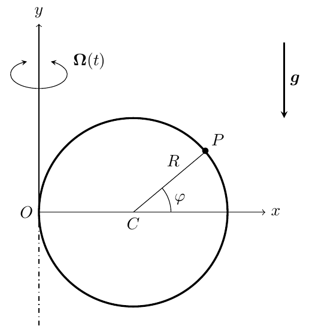
Answer the following questions in a reasoned way:
-
(a)
Write down the position, velocity and acceleration vectors of $P$ relative to the reference frame $Oxyz$, as a function of $\varphi$ and its derivatives.
-
(b)
Identify the forces that act on $P$, and write down their mathematical expression for a generic instant of time $t$.
-
(c)
Is the mechanical energy of $P$ conserved as seen from the $Oxy$ reference frame? Why?
-
(d)
Write down a single second order differential equation to calculate $\varphi$ as a function of time. Note that you do not need to solve this equation.
-
(e)
Compute the reaction of the wire on the particle $P$ as a function of $\varphi$, $\dot\varphi$ and $t$.
-
(f)
Assume now that $A^2 \ll g/(R\omega^2)$ and that the motion of $P$ is such that $\varphi = \delta - \pi/2$ with $\delta \ll 1$. Around what value of $\delta$ does the particle oscillate? Are there any values of $\omega$ for which the approximation $\delta \ll 1$ will not hold?
Worked Solution [ Click to Expand ]
Reference Frames, Bases and Coordinates
A heavy particle $P$ of mass $m$ slides without friction on a circular wire of centre $C$ and radius $R$, in a vertical plane $Oxy$ that swings about the vertical axis $Oy$ with the prescribed angular velocity $A\omega\sin(\omega t)$ along $\mathbf j$ (Problems.pdf, p. 22). The statement asks for the relative position, velocity and acceleration, the forces, whether the mechanical energy seen from $Oxy$ is conserved, the equation of motion, the reaction, and the small oscillations about the lowest point. The wire is at rest in $Oxyz$, so the solution works there, with the composition of motions of Notes.pdf, Sec. 3.2 and the inertia forces of Notes.pdf, Sec. 4.9.
| Item | Definition |
|---|---|
| Fixed (inertial) frame | $S_0 = \{O;\ \mathcal B_0\}$, $\mathcal B_0 = \{\mathbf i_0, \mathbf j_0, \mathbf k_0\}$, $O$ on the rotation axis (fixed), $\mathbf j_0$ vertical, up, $\mathbf k_0 = \mathbf i_0\times\mathbf j_0$ |
| Moving frame | $S_1 = \{O;\ \mathcal B_1\}$, the frame $Oxyz$ of the statement, attached to the plane of the wire: $\mathbf i_1$ along $Ox$, $\mathbf j_1 = \mathbf j_0$ along the axis, $\mathbf k_1 = \mathbf i_1\times\mathbf j_1$ normal to the plane; it coincides with $S_0$ at $t = 0$ |
| Wire | circle of centre $C$ on $Ox$ at distance $R$ from $O$ and radius $R$: it passes through $O$ (read from the figure) |
| Polar basis at $P$ | $\{\mathbf e_r, \mathbf e_\varphi, \mathbf k_1\}$: $\mathbf e_r$ from $C$ to $P$, $\mathbf e_\varphi$ tangent in the sense of growing $\varphi$ |
| Coordinate | $\varphi$, angle at $C$ from $Ox$ to $\overrightarrow{CP}$, counterclockwise towards $\mathbf j_1$ |
| Angle of the plane | $\psi(t)$, rotation of $S_1$ about $\mathbf j_0$, with rate $\Omega(t) = A\omega\sin\omega t$ and $\psi(0) = 0$ |
| Constraints | $z_1 = 0$ and the circle: two holonomic, smooth, bilateral constraints, fixed in $S_1$ |
| Degrees of freedom | 3 minus 2: 1, the coordinate $\varphi(t)$ (the motion of the plane is prescribed) |
| Data | $m$ [kg], $R$ [m], $g$ [m s$^{-2}$], $A$ [1], $\omega$ [rad s$^{-1}$] |
| Unknowns | $\varphi(t)$; the reaction $\mathbf N = N_1\,\mathbf e_r + N_2\,\mathbf k_1$ (no tangential component: smooth wire) |
| Applied forces | weight $-mg\,\mathbf j_1$ |
| Inertia forces (in $S_1$) | Euler, centrifugal and Coriolis; no origin term ($O$ fixed) (Notes.pdf, Eq. 4.62) |
| Hypotheses | $S_0$ inertial; uniform gravity; smooth wire acting as a bead guide; the swing of the plane is imposed whatever the particle does |
Change of Basis and Position Vector
The substitution $u$ equal to $\omega\tau$ has the differential $\omega\,d\tau$, and the limits 0 and $t$ become 0 and $\omega t$.
Units: $[A] = [\psi] = [1]$; $[A\omega] = [\mathrm{T^{-1}}]$
Meaning: the plane swings back and forth between the angles 0 and $2A$; it does not spin.
View from above, along $\mathbf j_0$, which points out of the paper (⊙). With $\mathbf i_0$ to the right, $\mathbf k_0$, the cross product of $\mathbf i_0$ and $\mathbf j_0$, points down the page (fingers from $\mathbf i_0$, to the right, towards $\mathbf j_0$, towards the reader; the thumb goes down the page), so minus $\mathbf k_0$ points up the page. A positive $\psi$ is counterclockwise in this view. $\mathbf i_1$ is $\mathbf i_0$ turned by $\psi$: hypotenuse 1, adjacent leg $\cos\psi$ along $\mathbf i_0$, opposite leg $\sin\psi$ up the page, along minus $\mathbf k_0$ (the minus sign). $\mathbf k_1$ is $\mathbf k_0$ turned by the same angle: adjacent leg $\cos\psi$ along $\mathbf k_0$, opposite leg $\sin\psi$ along plus $\mathbf i_0$.
Units: $[\psi] = [1]$
Meaning: the matrix of Eq. 1.19 with the angle $\psi$; the vertical, and with it the weight, is the same in both frames.
The plane $Oxy$, fixed in $S_1$, is drawn with $\mathbf i_1$ to the right and $\mathbf j_1$ up, so $\mathbf k_1$ points out of the paper (⊙). From $O$ to $P$ the path goes through $C$, because the distance from $C$ is the constant one. Let $F$ be the foot of the perpendicular from $P$ to the $x$ axis: in the shaded right triangle $CFP$ (right angle at $F$) the hypotenuse is $CP$, of length $R$, the leg adjacent to $\varphi$ is $CF$, of length $R\cos\varphi$, along $\mathbf i_1$, and the opposite leg $FP$, of length $R\sin\varphi$, is along $\mathbf j_1$. The angle is measured from $\mathbf i_1$ counterclockwise towards $\mathbf j_1$: it is already the standard polar angle about $C$.
Units: $[R(1 + \cos\varphi)] = [R\sin\varphi] = [\mathrm{L}]$
Meaning: at an angle of $\pi$ the particle is at $O$, on the axis; at minus a quarter turn it is at the lowest point of the wire. The abscissa is the lever arm of the centrifugal and Euler forces.
Kinematics
Units: $[A\omega] = [\mathrm{T^{-1}}]$; $[A\omega^2] = [\mathrm{T^{-2}}]$
Meaning: the rate of the plane changes in time, so an Euler term appears; the angular acceleration is parallel to the angular velocity, both along the fixed axis.
(a) Relative position, velocity and acceleration
Units: $[R\dot\varphi] = [\mathrm{L\,T^{-1}}]$; $[R\ddot\varphi] = [R\dot\varphi^2] = [\mathrm{L\,T^{-2}}]$
Meaning: circular motion about $C$ seen in the plane: tangential acceleration and centripetal acceleration towards $C$.
Write the position as $x\,\mathbf i_1 + y\,\mathbf j_1$, with $x$ and $y$ the two components of the boxed position; the time derivatives of $x$ and $y$ are the components of the relative velocity.
Units: $[\dot\Omega R] = [\Omega^2R] = [\Omega R\dot\varphi] = [\mathrm{L\,T^{-2}}]$
Meaning: the Euler and Coriolis terms are normal to the plane of the wire; the centripetal term points horizontally to the axis.
Forces and Equations of Motion
(b) Forces acting on P
Units: $[mg] = [mA^2\omega^2R] = [mA\omega^2R] = [mA\omega R\dot\varphi] = [\mathrm{M\,L\,T^{-2}}]$
Meaning: two actual forces (weight and reaction) and three inertia forces: the centrifugal force lies in the plane and pushes away from the axis; the Euler and Coriolis forces are normal to the plane.
The projections of $\mathbf i_1$ on $\mathbf e_r$ and $\mathbf e_\varphi$ are the cosine and minus the sine; those of $\mathbf j_1$ are the sine and the cosine.
Units: every term $[\mathrm{M\,L\,T^{-2}}]$
Meaning: only the tangential equation is free of the reaction; it is the equation of motion of part (d). The other two give the reaction of part (e).
(d) Equation of motion
Units: $[\ddot\varphi] = [g/R] = [A^2\omega^2] = [\mathrm{T^{-2}}]$
Meaning: a nonlinear pendulum about the lowest point whose coefficient changes periodically in time: the swing of the plane enters only through the centrifugal force.
(e) Reaction of the wire
Units: every term $[\mathrm{M\,L\,T^{-2}}]$
Meaning: the normal component is the push the wire must give to carry the particle with the swinging plane: it balances the Euler and Coriolis forces. It depends on time even at rest in the plane, through the Euler term.
Answers and Checks
(c) Is the mechanical energy conserved in Oxy?
The reaction, the Euler force and the Coriolis force do no work in $S_1$ (the wire is at rest there; the last two are normal to the plane that holds the relative velocity). The weight has the potential $mgR\sin\varphi$. The centrifugal force has, at each instant, the potential minus one half of $m\Omega^2$ times the squared distance to the axis, but this potential depends explicitly on time because $\Omega$ does. Write $E_1^P$ for the kinetic energy in $S_1$ plus these two potentials.
Units: $[mA^2\omega^3R^2] = [\mathrm{M\,L^2\,T^{-3}}]$, a power
Meaning: no. The rate of the plane is not constant, so the centrifugal force has no potential independent of time, and the energy changes at the rate of the explicit time derivative of that potential. With a constant rate the energy would be conserved: the Euler force would vanish and the Coriolis force does no work. The energy in $S_0$ is not conserved either: there the wire moves and its normal reaction works.
(f) Small oscillations about the lowest point
With $\varphi$ equal to $\delta$ minus a quarter turn, the difference formulas give the cosine and the sine of $\varphi$; then the first-order Taylor expansions in $\delta$ are kept. The hypothesis on $A$ makes the product of $A^2\omega^2$ and $\delta$ small against $g/R$ times $\delta$.
Units: $[g\delta/R] = [A^2\omega^2] = [\mathrm{T^{-2}}]$
Meaning: a harmonic oscillator of natural frequency the square root of $g/R$, driven by a constant push and a push at twice the frequency of the swing; both come from the mean and the oscillating part of the centrifugal force.
Write $\omega_n$ for the square root of $g/R$. A particular solution is a constant $\delta_0$ plus a term $D_1\cos 2\omega t$; the second derivative of that term is written before it is substituted.
Units: $[\delta_0] = [A^2R\omega^2/g] = [1]$; $[\omega_n] = [\mathrm{T^{-1}}]$
Meaning: the mean position is shifted outward, away from the axis, by the mean centrifugal force, and the shift is small precisely because of the hypothesis on $A$. When twice the swing frequency approaches the natural frequency the forced amplitude grows without bound (no damping), so the small-angle hypothesis breaks down.
| Part of the statement | Answer |
|---|---|
| (a) Position, velocity, acceleration | $\mathbf r_1^P = R(1 + \cos\varphi)\,\mathbf i_1 + R\sin\varphi\,\mathbf j_1$, $\mathbf v_1^P = R\dot\varphi\,\mathbf e_\varphi$, $\mathbf a_1^P = R\ddot\varphi\,\mathbf e_\varphi - R\dot\varphi^2\,\mathbf e_r$, with $\mathbf e_r = \cos\varphi\,\mathbf i_1 + \sin\varphi\,\mathbf j_1$, $\mathbf e_\varphi = -\sin\varphi\,\mathbf i_1 + \cos\varphi\,\mathbf j_1$ |
| (b) Forces | weight $-mg\,\mathbf j_1$; reaction $N_1\mathbf e_r + N_2\mathbf k_1$; $\mathbf F_A = \mathbf 0$; Euler $mA\omega^2R\cos\omega t(1 + \cos\varphi)\,\mathbf k_1$; centrifugal $mA^2\omega^2R\sin^2\omega t(1 + \cos\varphi)\,\mathbf i_1$; Coriolis $-2mA\omega R\sin\omega t\sin\varphi\,\dot\varphi\,\mathbf k_1$ |
| (c) Energy in $Oxy$ | not conserved: the centrifugal potential depends explicitly on time; $dE_1^P/dt = -mA^2\omega^3R^2\sin\omega t\cos\omega t(1 + \cos\varphi)^2$ |
| (d) Equation of motion | $\ddot\varphi + (g/R)\cos\varphi + A^2\omega^2(1 + \cos\varphi)\sin^2(\omega t)\sin\varphi = 0$ |
| (e) Reaction | $\mathbf N = N_1\cos\varphi\,\mathbf i_1 + N_1\sin\varphi\,\mathbf j_1 + N_2\mathbf k_1$, $N_1 = mg\sin\varphi - mA^2R\omega^2(1 + \cos\varphi)\sin^2(\omega t)\cos\varphi - mR\dot\varphi^2$, $N_2 = 2mAR\omega\dot\varphi\sin\varphi\sin(\omega t) - mAR\omega^2(1 + \cos\varphi)\cos(\omega t)$ |
| (f) Oscillation | $\ddot\delta + (g/R)\delta = \frac{A^2\omega^2}{2}[1 - \cos 2\omega t]$; oscillation about $\delta_0 = A^2R\omega^2/(2g)$ with $\omega_n = \sqrt{g/R}$; the approximation fails near $\omega = \frac12\sqrt{g/R}$ (resonance) |
Check against the official key: Problems.pdf, p. 75 prints the equation of motion, the reaction with the components $N_1$ and $N_2$, the linearised equation, the centre of oscillation, the natural frequency and the resonance condition. All coincide with parts (d), (e) and (f), term by term (box below).
Units: as in parts (d) to (f)
Meaning: no discrepancy.
In $\mathcal B_1$ the position has the components $(x, y, 0)$ and the absolute velocity $(\dot x, \dot y, -\Omega x)$ (composition box). The component along $\mathbf j_1$ of a vector product is the third component of the first factor times the first of the second minus the first of the first times the third of the second. The weight and the in-plane reaction lie in the plane, which contains the axis: no axial moment.
Units: $[xN_2] = [\mathrm{M\,L^2\,T^{-2}}]$
Meaning: the same normal reaction as part (e), found without inertia forces.
Units: dimensionless
Meaning: without the swing of the plane the inertia forces vanish and the particle is a pendulum on a fixed circle.
A heavy point particle $P$ with mass $m$ hanging from a fixed point $A$ on the ceiling with a massless string of constant length $L$. The particle is initially at rest. A bar $b$ rotates about its center $O$ in a horizontal plane at a distance $h$ from the ceiling, with a known, constant angular velocity $\omega$. The horizontal distance between $O$ and $A$ is $R$. At time $t = 0$, the bar collides with the string and drags it along its motion. The string slides over the bar without friction. We call $C$ the instantaneous point of contact of the string with the bar. We define a reference frame $S_1$ that rotates with the bar as shown in the figure. We call $\xi$ the distance between $O$ and $C$; $\ell$ the length of the string segment between $C$ and $P$; $\theta$ the angle between the vertical plane $Ox_1z_1$ and the plane defined by the bar and $P$; and $\varphi$ the angle formed between the string segment $CP$ and the bar. You are asked to study only the part of the motion in which the string remains tense and in contact with the bar.

-
(a)
Write down the position and velocity of point $A$ in $S_1$ as a function of time.
-
(b)
Obtain a general expression for the position, velocity, and acceleration of $P$ in $S_1$ as a function of $\xi$, $\ell$, $\theta$, $\varphi$, their derivatives, and time.
-
(c)
Express $AC$, $\ell$, and $\varphi$ as a function of $\xi$ and time.
-
(d)
Identify and express all the forces acting on $P$.
-
(e)
Write down a set of second order differential equations for the evolution of the unknowns of the problem.
-
(f)
Compute the initial conditions for the previous equations at $t = 0$.
-
(g)
Is the mechanical energy of the particle conserved in time? Justify your answer.
-
(h)
If/when the string separates from the bar, express the geometric condition as a relation between $\theta$ and and [sic] time.
Worked Solution [ Click to Expand ]
Reference Frames, Bases and Coordinates
A heavy particle $P$ of mass $m$ hangs at rest from the ceiling point $A$ by a string of length $L$. A bar turning at the constant rate $\omega$ about the vertical through its centre $O$, in a horizontal plane a distance $h$ below the ceiling, hits the string at the start and drags it; the string slides on the bar without friction, over the contact point $C$ (Problems.pdf, p. 24). The statement asks for the position and velocity of $A$ in the bar frame $S_1$, the position, velocity and acceleration of $P$ there, the length $AC$, $\ell$ and $\varphi$ in terms of $\xi$ and time, the forces on $P$, the equations of motion, their initial conditions, whether the energy is conserved, and the condition of separation. The bar is at rest in $S_1$, so the solution works there, with the composition of motions of Notes.pdf, Sec. 3.2 and the inertia forces of Notes.pdf, Sec. 4.9.
| Item | Definition |
|---|---|
| Fixed (inertial) frame | $S_0 = \{O;\ \mathcal B_0\}$, $\mathcal B_0 = \{\mathbf i_0, \mathbf j_0, \mathbf k_0\}$, $O$ the centre of the bar (fixed), $\mathbf k_0$ vertical, up, $\mathbf i_0$ horizontal from $O$ towards the point $A'$ of the plane of the bar directly below $A$ |
| Moving frame | $S_1 = \{O;\ \mathcal B_1\}$, attached to the bar: $\mathbf i_1$ along the bar, $\mathbf k_1 = \mathbf k_0$, $\mathbf j_1 = \mathbf k_1\times\mathbf i_1$; at $t = 0$ the bar lies along $\mathbf i_0$ (it hits the string at that instant), so $S_1$ coincides with $S_0$ then |
| Sense of rotation | read from the left drawing: before the impact $A'$ lies at positive $x_1$ and positive $y_1$, so the bar turns from $\mathbf i_1$ towards $\mathbf j_1$: angular velocity $+\omega\,\mathbf k_1$ (the Coriolis force of the key implies the same sign) |
| String basis | $\mathcal B_2 = \{\mathbf e_{CP}, \mathbf e_\theta, \mathbf e_\varphi\}$, with $\mathbf e_{CP}$ from $C$ to $P$ (deduced below) |
| Coordinates | $\xi$ (distance $OC$ along the bar), $\ell$ (length $CP$), $\theta$ (angle between the vertical plane $Ox_1z_1$ and the plane bar–$P$, from the downward vertical; positive towards negative $y_1$, the sign of the key), $\varphi$ (angle between $\overrightarrow{CP}$ and the bar, in $(0, \pi)$) |
| Constraints | constant string length, $AC + \ell = L$; frictionless contact (equal angles of the two segments with the bar, part (c)); string tense and in contact with the bar (the stage studied) |
| Degrees of freedom | the particle moves in space with one constraint (the string), so 3 minus 1: 2, taken as $\xi(t)$ and $\theta(t)$; $\ell$ and $\varphi$ are functions of $\xi$ and $t$ (part (c)) |
| Data | $m$ [kg], $L$ [m], $h$ [m], $R$ [m] (horizontal distance $OA$), $\omega$ [rad s$^{-1}$], $g$ [m s$^{-2}$] |
| Auxiliary symbol | $D$, the length $AC$ [m] |
| Unknowns | $\xi(t)$, $\theta(t)$ and the tension $T(t) \gt 0$ |
| Applied forces | weight $-mg\,\mathbf k_1$; string pull $-T\,\mathbf e_{CP}$ (the bar touches the string, not $P$) |
| Inertia forces (in $S_1$) | centrifugal and Coriolis; no origin or Euler terms ($O$ fixed, $\omega$ constant) (Notes.pdf, Eq. 4.62) |
| Hypotheses | $S_0$ inertial; uniform gravity; massless inextensible string; thin bar, long enough for $C$ to stay on it; no friction at $C$; $\omega$ imposed whatever the string does; $L \gt h$ |
| Readings | (1) "Separates" (part (h)) is read as the string straightening, so that the bar no longer bends it; the other way to lose contact, $C$ sliding off the end of the bar, is the condition that $\xi$ reaches the half-length of the bar, not a relation between $\theta$ and time. (2) No impulse at the impact: the string is perpendicular to the bar there, so its path length changes only to second order (part (f)) |
Change of Basis and Position Vector
View from above, along $\mathbf k_0$, which points out of the paper (⊙). With $\mathbf i_0$ to the right, $\mathbf j_0$, the cross product of $\mathbf k_0$ and $\mathbf i_0$, points up the page (thumb towards the reader, the fingers turn $\mathbf i_0$ counterclockwise by a quarter turn). The bar turns counterclockwise. $\mathbf i_1$ is $\mathbf i_0$ turned by $\omega t$: hypotenuse 1, adjacent leg $\cos\omega t$ along $\mathbf i_0$, opposite leg $\sin\omega t$ along plus $\mathbf j_0$. $\mathbf j_1$ is $\mathbf j_0$ turned by the same angle; the counterclockwise turn carries its tip to the left, so its opposite leg $\sin\omega t$ lies along minus $\mathbf i_0$ (the minus sign).
Units: $[\omega t] = [1]$
Meaning: the matrix of Eq. 1.20 with the angle $\omega t$; the vertical is common to both frames.
In the same view, $A'$ is at the distance $R$ from $O$ along $\mathbf i_0$, that is, the angle $\omega t$ behind the bar (clockwise from $\mathbf i_1$). Let $F$ be the foot of the perpendicular from $A'$ to the line of the bar: in the right triangle $OFA'$ (right angle at $F$) the hypotenuse is $OA'$, of length $R$; the leg adjacent to $\omega t$, $OF$, has length $R\cos\omega t$ along plus $\mathbf i_1$; the opposite leg $FA'$ has length $R\sin\omega t$ along minus $\mathbf j_1$, because $A'$ lies on the clockwise side of the bar. $A$ is a height $h$ above $A'$.
Units: $[R\cos\omega t] = [h] = [\mathrm{L}]$
Meaning: seen from the bar, the anchor turns backwards on a circle of radius $R$ at the height $h$.
View along the bar, with $\mathbf i_1$ out of the paper (⊙) at $C$ and $\mathbf k_1$ up; then $\mathbf j_1$, the cross product of $\mathbf k_1$ and $\mathbf i_1$, points to the right (fingers from $\mathbf k_1$, up, towards $\mathbf i_1$, towards the reader; the thumb points right). The plane bar–$P$ contains the line of sight, so it is seen as a line through $C$, at the angle $\theta$ from the downward vertical, towards the left (negative $y_1$) for positive $\theta$. Its unit vector $\mathbf u$, from $C$ towards the side of $P$, is the hypotenuse of the shaded right triangle: adjacent leg $\cos\theta$ along minus $\mathbf k_1$, opposite leg $\sin\theta$ along minus $\mathbf j_1$ (both minus signs: down and to the left). The standard azimuth $\chi$ about $\mathbf i_1$ is measured from $\mathbf j_1$ towards $\mathbf k_1$; $\theta$ is measured from minus $\mathbf k_1$ in the opposite sense, so $\chi$ is minus the sum of $\theta$ and a quarter turn.
Units: dimensionless
Meaning: at zero $\theta$ the plane bar–$P$ is the vertical plane $Ox_1z_1$ and $\mathbf u$ points straight down: the hanging position.
True view of the plane bar–$P$: the bar to the right, $\mathbf u$ down the page. Let $E$ be the foot of the perpendicular from $P$ to the bar: in the shaded right triangle $CEP$ (right angle at $E$) the hypotenuse is $CP$, of length $\ell$, the leg adjacent to $\varphi$ is $CE$, of length $\ell\cos\varphi$, along $\mathbf i_1$, and the opposite leg $EP$, of length $\ell\sin\varphi$, is along $\mathbf u$. The determinant is expanded along its first row, with the cofactor signs plus, minus, plus.
Units: $[\xi] = [\ell] = [\mathrm{L}]$; the unit vectors are dimensionless
Meaning: $C$ plays the role of a moving centre of spherical coordinates: $\ell$ is the radius, $\varphi$ the angle from the bar and $\theta$ the azimuth about the bar.
Units: $[\dot\varphi] = [\dot\theta] = [\mathrm{T^{-1}}]$
Meaning: the string basis turns with the rates of the two angles, as a spherical basis does.
Kinematics
Units: $[\omega] = [\mathrm{T^{-1}}]$
Meaning: in $S_1$ the bar is a fixed line; in $S_0$ its basis turns at the constant rate.
(a) Position and velocity of A in S1
Units: $[R\omega] = [\mathrm{L\,T^{-1}}]$
Meaning: in $S_1$ the anchor goes round its circle with the angular velocity minus $\omega$ about the vertical: the end of the string moves in the frame of the bar.
(b) Position, velocity and acceleration of P in S1
Units: $[\dot\xi] = [\ell\dot\varphi] = [\mathrm{L\,T^{-1}}]$; $[\ddot\xi] = [\ell\dot\theta^2] = [\mathrm{L\,T^{-2}}]$
Meaning: the acceleration along the bar of the moving centre $C$ plus the spherical acceleration about it; the components of the velocity in $\mathcal B_1$ are listed in the last three rows.
Write the position in $\mathcal B_1$ as $x\,\mathbf i_1 + y\,\mathbf j_1 + z\,\mathbf k_1$, with the components of the boxed position; their time derivatives are $v_x$, $v_y$, $v_z$.
Units: $[\omega^2x] = [\omega v_x] = [\mathrm{L\,T^{-2}}]$
Meaning: the centripetal term points horizontally to the axis of the bar; the Coriolis term is horizontal and normal to the horizontal part of the relative velocity.
(c) AC, l and phi as functions of xi and time
Units: $[D] = [\ell] = [\mathrm{L}]$
Meaning: the cosine law in the triangle $OA'C$ plus the height: as the anchor falls behind the bar, $AC$ grows and the hanging part shortens.
Without friction the tension is the same on both sides of $C$. The piece of string at $C$ is massless, so the two pulls and the push $\mathbf N_b$ of the bar add up to zero, and $\mathbf N_b$ has no component along the bar.
Units: $[\cos\varphi] = [\mathrm{L}]/[\mathrm{L}] = [1]$
Meaning: the two segments make equal angles with the bar, on opposite sides of the plane normal to it: the string passes over the bar like a light ray reflected by a mirror. The bar pushes the string only across itself.
Units: $[R\omega\xi/D] = [\mathrm{L\,T^{-1}}]$; $[\partial\varphi/\partial\xi] = [\mathrm{L^{-1}}]$
Meaning: the string pays out along $CP$ (the left side is the rate of the projection of the relative velocity on $\mathbf e_{CP}$) only because the anchor moves; with the anchor fixed in $S_1$ the right side would vanish.
Forces and Equations of Motion
(d) Forces acting on P
Units: $[mg] = [m\omega^2\xi] = [m\omega\dot\xi] = [T] = [\mathrm{M\,L\,T^{-2}}]$
Meaning: two actual forces (weight and string) and two inertia forces, both horizontal: the centrifugal force away from the axis, the Coriolis force normal to the horizontal relative velocity.
(e) Equations of motion
From the columns of $[{}_1R_2]$: the projections of $\mathbf i_1$ on $\mathbf e_{CP}$, $\mathbf e_\varphi$, $\mathbf e_\theta$ are the cosine, minus the sine and 0; those of $\mathbf j_1$ are $-\sin\varphi\sin\theta$, $-\cos\varphi\sin\theta$ and $-\cos\theta$; those of $\mathbf k_1$ are $-\sin\varphi\cos\theta$, $-\cos\varphi\cos\theta$ and $\sin\theta$. In the Coriolis projections the terms in $\dot\varphi$ cancel along $\mathbf e_\varphi$ and the terms in $\dot\ell$ cancel along $\mathbf e_{CP}$.
Units: every projection $[\mathrm{M\,L\,T^{-2}}]$
Meaning: the tension appears only along $\mathbf e_{CP}$, so the two other projections are free of it.
Three scalar equations for the three unknowns $\xi$, $\theta$ and $T$. In the $\mathbf e_\varphi$ equation the second derivative of $\xi$ appears in $-\ddot\xi\sin\varphi$ and, through the chain rule of part (c), in $\ell\ddot\varphi$; their sum has a coefficient that does not vanish while the string is bent.
Units: every term of the first two lines $[\mathrm{L\,T^{-2}}]$; $[T] = [\mathrm{M\,L\,T^{-2}}]$
Meaning: with $\ell$, $\varphi$ and their derivatives replaced by the functions of $\xi$, its rate and time of part (c), the first two lines are two second-order equations for $\xi$ and $\theta$ (the coefficients of their second derivatives, $\ell\sin\varphi$ and minus $L$ over $D$ times the sine, are not zero while the string is bent), with time present explicitly through the motion of the anchor. The third gives the tension; the solution holds while it stays positive.
Answers and Checks
(f) Initial conditions at t equal to zero
At the start the bar lies along $\mathbf i_0$ and meets the vertical string at $A'$, directly below $A$; the particle hangs in the vertical plane $Ox_1z_1$.
Units: $[\xi] = [\ell] = [\mathrm{L}]$
Meaning: the particle is a depth $L - h$ below the bar, that is $L$ below the anchor.
The particle is at rest in $S_0$ just before the impact. The string meets the bar at a right angle, so its path length grows only to second order in time ($\dot\ell(0)$ is zero below) and no impulsive tension acts: the absolute velocity stays zero. The velocity of part (b) is written at the start before the components are matched.
Units: $[\dot\theta(0)] = [\omega R/(L - h)] = [\mathrm{T^{-1}}]$
Meaning: seen from the bar, the particle starts moving backwards with the speed of the point of the bar that hits the string, swinging about $C$ as a pendulum of length $L - h$; $\theta$ grows from zero towards the side of the anchor. The time derivative of $\varphi$ at fixed $\xi$ vanishes at the start because the derivative of the cosine of $\omega t$ is zero there.
(g) Is the mechanical energy of the particle conserved?
In $S_0$ the weight has the potential $mgz$ and the only other force is the string pull. In $S_1$ the weight and the centrifugal force (constant rate, fixed axis) have potentials, the Coriolis force does no work, and again only the string pull is left. Let $E_0^P$ be one half of $m$ times the squared absolute speed plus $mgz$, and $E_1^P$ one half of $m$ times the squared relative speed plus $mgz$ minus one half of $m\omega^2(x^2 + y^2)$. The projection of the relative velocity on $\mathbf e_{CP}$ is $\dot\xi\cos\varphi + \dot\ell$.
Units: $[T\omega\xi] = [\mathrm{M\,L^2\,T^{-3}}]$, a power
Meaning: no. The string is a moving constraint: in $S_0$ the bar drags the bend of the string, in $S_1$ the anchor moves, and in both frames the tension works on the particle. While the anchor is behind the bar (the sine of $\omega t$ positive) and the string is tense, the energy in $S_1$ grows. The energy comes from the motor that keeps the rate of the bar constant (check box below).
(h) Separation of the string from the bar
The push of the bar is minus $T$ times the sum of $\mathbf e_{CA}$ and $\mathbf e_{CP}$ (contact box); it vanishes when the string is straight, and beyond that instant the bend would have to reverse, which a bar pushing from one side cannot impose. The components along $\mathbf i_1$ of $\mathbf e_{CP}$ and of minus $\mathbf e_{CA}$ are already equal (contact box); the other two components are equated, with the sine of $\varphi$ from part (c).
Units: $[R\sin\omega t/h] = [1]$
Meaning: the string leaves the bar at the first instant at which the angle obtained from the equations of part (e) reaches this value. For the sine of $\omega t$ positive the value is negative: the particle must have swung forward, past the vertical plane of the bar, to the side opposite to the anchor, so that the straight line from $A$ through $C$ reaches it.
| Part of the statement | Answer |
|---|---|
| (a) Anchor in $S_1$ | $\mathbf r_1^A = R\cos\omega t\,\mathbf i_1 - R\sin\omega t\,\mathbf j_1 + h\,\mathbf k_1$, $\mathbf v_1^A = -R\omega\sin\omega t\,\mathbf i_1 - R\omega\cos\omega t\,\mathbf j_1$ |
| (b) $P$ in $S_1$ | $\mathbf r_1^P = \xi\,\mathbf i_1 + \ell\,\mathbf e_{CP}$; $\mathbf v_1^P = \dot\xi\,\mathbf i_1 + \dot\ell\,\mathbf e_{CP} + \ell\dot\varphi\,\mathbf e_\varphi + \ell\dot\theta\sin\varphi\,\mathbf e_\theta$; $\mathbf a_1^P$ as boxed in part (b), with $\mathbf e_{CP}, \mathbf e_\theta, \mathbf e_\varphi$ the columns of $[{}_1R_2]$ |
| (c) $AC$, $\ell$, $\varphi$ | $AC = \sqrt{\xi^2 - 2R\xi\cos\omega t + R^2 + h^2}$, $\ell = L - AC$, $\cos\varphi = (\xi - R\cos\omega t)/AC$ |
| (d) Forces | $\mathbf W = -mg\,\mathbf k_1$, $\mathbf T = -T\,\mathbf e_{CP}$, $\mathbf F_C = m\omega^2(\xi + \ell\cos\varphi)\,\mathbf i_1 - m\omega^2\ell\sin\varphi\sin\theta\,\mathbf j_1$, $\mathbf F_{COR} = -2m\omega(\dot\ell\sin\varphi\sin\theta + \ell\dot\varphi\cos\varphi\sin\theta + \ell\dot\theta\sin\varphi\cos\theta)\,\mathbf i_1 - 2m\omega(\dot\xi + \dot\ell\cos\varphi - \ell\dot\varphi\sin\varphi)\,\mathbf j_1$; origin and Euler forces zero |
| (e) Equations | the $\mathbf e_\theta$ and $\mathbf e_\varphi$ equations of part (e), closed with part (c): two second-order equations for $\xi(t)$, $\theta(t)$; the $\mathbf e_{CP}$ equation gives $T$ |
| (f) Initial conditions | $\xi(0) = R$, $\dot\xi(0) = 0$, $\theta(0) = 0$, $\dot\theta(0) = \omega R/(L - h)$ (and $\ell(0) = L - h$, $\varphi(0) = \pi/2$, $\dot\ell(0) = \dot\varphi(0) = 0$) |
| (g) Energy | not conserved in $S_0$ nor in $S_1$: $dE_0^P/dt = T\omega\xi(R\sin\omega t/AC + \sin\varphi\sin\theta)$, $dE_1^P/dt = TR\omega\xi\sin\omega t/AC$ |
| (h) Separation | $\tan\theta = -R\sin\omega t/h$ (string straight); the other way to lose contact, $C$ reaching the end of the bar, is $\xi$ equal to the half-length of the bar |
Check against the official key: Problems.pdf, p. 75 prints only the centrifugal and the Coriolis forces; both coincide term by term with part (d) (box below). The rest is checked independently with the power of the bar on the string and with limiting cases.
Units: $[\mathrm{M\,L\,T^{-2}}]$
Meaning: the agreement also confirms the reading of the sense of rotation and of the sign of $\theta$.
The contact point moves in $S_0$ with the velocity of part (b) for a point at $\xi$ on the bar, $\dot\xi\,\mathbf i_1 + \omega\xi\,\mathbf j_1$; the push of the bar has no component along $\mathbf i_1$. The anchor is fixed, so the string receives power only at $C$, and a massless string passes it on to the particle.
Units: $[\mathrm{M\,L^2\,T^{-3}}]$
Meaning: the rate of the energy found in part (g) is exactly the power the bar puts into the string.
Units: dimensionless
Meaning: each limit matches the picture of an anchor that moves in the frame of the bar and feeds energy into the pendulum.
A heavy point particle $P$ with mass $m$ moves without friction on a cone of elliptic cross-section as shown in the figure. We define an auxiliary reference frame $S_1 : \{O; \mathcal{B}_1\}$ attached to the cone. The cone is defined in term [sic] of two parameters $\zeta$, $\beta$ as
The cone spins about its $Oz_1$ axis at a constant angular rate $\Omega$ with respect to the inertial reference frame $S_0 : \{O; \mathcal{B}_0\}$. At time $t = 0$, the reference frame $S_1$ coincides with $S_0$, the particle $P$ is located at $\mathbf{r}^P_{1,0} = 2\mathbf{j}_1 + \mathbf{k}_1$, and has a velocity $\mathbf{v}^P_{1,0} = \mathbf{i}_1$.
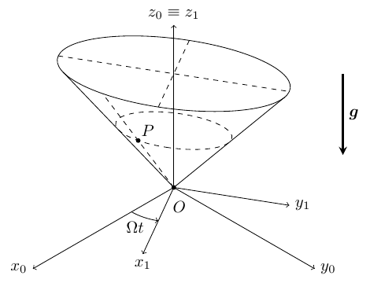
-
(a)
How many degrees of freedom does the particle motion have?
-
(b)
Obtain the general expression for the position, velocity, and acceleration of $P$ in reference frame $S_1$ as a function of $\zeta$, $\beta$ and their derivatives. Remember to define any unit vectors that you use in terms of the vectors of $\mathcal{B}_0$.
-
(c)
Identify and express mathematically all the forces acting on $P$ as seen from $S_1$.
-
(d)
Obtain two second-order differential equations for the evolution of $\zeta$, $\beta$ in time, which do not depend on any other unknowns in the problem.
-
(e)
Find, justify, and write down one conservation law in this problem, including the value of any constants there might be.
-
(f)
Find the equilibrium positions for $P$ in $S_1$ for $\zeta \gt 0$ as a function of the constants of the problem.
Worked Solution [ Click to Expand ]
Reference Frames, Bases and Coordinates
A heavy particle $P$ of mass $m$ moves without friction on a cone of elliptic cross-section, with vertex $O$ and vertical axis, described by the parameters $\zeta$ and $\beta$; the cone spins about its axis at the constant rate $\Omega$, and at the start the frames coincide, with the particle at $2\,\mathbf j_1 + \mathbf k_1$ and the velocity $\mathbf i_1$ (Problems.pdf, p. 25). The statement asks for the degrees of freedom, the position, velocity and acceleration in $S_1$, the forces seen from $S_1$, two equations of motion free of other unknowns, one conservation law with its constant, and the equilibria for positive $\zeta$. The cone is at rest in $S_1$, so the solution works there, with the composition of motions of Notes.pdf, Sec. 3.2 and the inertia forces of Notes.pdf, Sec. 4.9.
| Item | Definition |
|---|---|
| Fixed (inertial) frame | $S_0 = \{O;\ \mathcal B_0\}$, $\mathcal B_0 = \{\mathbf i_0, \mathbf j_0, \mathbf k_0\}$, $O$ the vertex (fixed), $\mathbf k_0$ vertical, up |
| Moving frame | $S_1 = \{O;\ \mathcal B_1\}$, attached to the cone: $\mathbf k_1 = \mathbf k_0$ along its axis, $\mathbf i_1$ and $\mathbf j_1$ along the axes of its elliptic sections; it turns by $\Omega t$ about $\mathbf k_0$, from $x_0$ towards $y_0$ (figure), and coincides with $S_0$ at $t = 0$ |
| Cone | $x_1 = \zeta\cos\beta$, $y_1 = 2\zeta\sin\beta$, $z_1 = \zeta$ (Eq. (5) of the statement), fixed in $S_1$ |
| Surface vectors at $P$ | $\mathbf e_\zeta$ and $\mathbf e_\beta$ (tangent, not unit; deduced below), unit normal $\mathbf n$ |
| Coordinates | $\zeta$ (height above the vertex), $\beta$ (angular parameter of the elliptic section, not the polar angle) |
| Data | $m$ [kg], $g$ [m s$^{-2}$], $\Omega$ [rad s$^{-1}$]; initial position $2\,\mathbf j_1 + \mathbf k_1$ and velocity $\mathbf i_1$ |
| Unknowns | $\zeta(t)$, $\beta(t)$ and the reaction $N\,\mathbf n$ |
| Applied forces | weight $-mg\,\mathbf k_1$ |
| Inertia forces (in $S_1$) | centrifugal and Coriolis; no origin or Euler terms (Notes.pdf, Eq. 4.62) |
| Hypotheses | $S_0$ inertial; uniform gravity; smooth contact; $\Omega$ constant |
| Readings | (1) The initial data carry no units; they are read in SI units (metres and metres per second); with another unit of length the numbers of the constant of part (e) change accordingly. (2) The contact is taken as bilateral (the normal reaction may take either sign); the particle is on the inner surface of the cone, and the equilibria of part (f) need a positive reaction along the inward normal, which is checked there |
(a) Degrees of freedom
Units: $[x_1^2] = [y_1^2] = [z_1^2] = [\mathrm{L^2}]$
Meaning: each horizontal section at the height $\zeta$ is an ellipse of semi-axes $\zeta$ along $\mathbf i_1$ and $2\zeta$ along $\mathbf j_1$.
Change of Basis and Position Vector
View from above, along $\mathbf k_0$, which points out of the paper (⊙). With $\mathbf i_0$ to the right, $\mathbf j_0$, the cross product of $\mathbf k_0$ and $\mathbf i_0$, points up the page. The figure measures $\Omega t$ from $x_0$ towards $y_0$, so the cone turns counterclockwise in this view. $\mathbf i_1$ is $\mathbf i_0$ turned by $\Omega t$: hypotenuse 1, adjacent leg $\cos\Omega t$ along $\mathbf i_0$, opposite leg $\sin\Omega t$ along plus $\mathbf j_0$. $\mathbf j_1$ is $\mathbf j_0$ turned by the same angle; the counterclockwise turn carries its tip to the left, so its opposite leg $\sin\Omega t$ lies along minus $\mathbf i_0$ (the minus sign).
Units: $[\Omega t] = [1]$
Meaning: these are the unit vectors of $\mathcal B_1$ in terms of $\mathcal B_0$, as the statement asks; at the start the matrix is the identity and the frames coincide.
The section at the height $\zeta$ is seen from above. Draw the auxiliary circle of radius $\zeta$ and its point $B$ at the polar angle $\beta$: in the shaded right triangle with hypotenuse $OB$, of length $\zeta$, the leg adjacent to $\beta$ is $\zeta\cos\beta$ along $\mathbf i_1$ and the opposite leg is $\zeta\sin\beta$ along $\mathbf j_1$. The point $P$ of the ellipse has the same abscissa and twice the ordinate: the ellipse is the circle stretched by 2 along $\mathbf j_1$. So $\beta$ is the polar angle of $B$, not of $P$; the polar angle $\alpha$ of the horizontal projection of $P$ is related to it below.
Units: $[\zeta] = [\mathrm{L}]$; $[\beta] = [1]$
Meaning: the two angles coincide only on the axes of the ellipse; at the start the particle is at the end of the long axis of the section at height 1 m.
The determinant is expanded along its first row, with the cofactor signs plus, minus, plus.
Units: $[\mathbf e_\zeta] = [\mathbf e_\beta] = [\mathbf n] = [1]$
Meaning: the normal points into the cone and upwards. In the vertical plane $x_1z_1$ the generators make 45 degrees with the horizontal (legs $\zeta$ and $\zeta$, hypotenuse $\zeta\sqrt2$); in the plane $y_1z_1$ they rise one for two across (legs $2\zeta$ and $\zeta$, hypotenuse $\zeta\sqrt5$), as drawn.
Kinematics
Units: $[\Omega] = [\mathrm{T^{-1}}]$
Meaning: in $S_1$ the unit vectors are constant; in $S_0$ the horizontal ones turn with the cone.
(b) Position, velocity and acceleration in S1
Units: $[\dot\zeta] = [\zeta\dot\beta] = [\mathrm{L\,T^{-1}}]$; $[\ddot\zeta] = [\zeta\dot\beta^2] = [\mathrm{L\,T^{-2}}]$
Meaning: with the unit vectors of $\mathcal B_1$ written in $\mathcal B_0$ in the rotation box, these are the vectors the statement asks for, as seen from $S_1$.
Units: $[\dot\beta] = [\mathrm{T^{-1}}]$
Meaning: the initial velocity is horizontal and tangent to the section: the particle starts along the ellipse, towards decreasing $\beta$.
Write the position as $x_1\,\mathbf i_1 + y_1\,\mathbf j_1 + z_1\,\mathbf k_1$ with the components of part (b); their time derivatives are the components of the relative velocity.
Units: $[\Omega^2x_1] = [\Omega\dot x_1] = [\mathrm{L\,T^{-2}}]$
Meaning: both rotation terms are horizontal; with the vertex fixed and the rate constant there are no origin or Euler terms.
Forces and Equations of Motion
(c) Forces acting on P as seen from S1
Units: $[mg] = [m\Omega^2\zeta] = [m\Omega\dot\zeta] = [\mathrm{M\,L\,T^{-2}}]$
Meaning: two actual forces and two inertia forces; the centrifugal force points horizontally away from the axis, the Coriolis force is horizontal and normal to the horizontal relative velocity. Newton's second law in $S_1$ is the sum of the four equal to the mass times the relative acceleration (Eq. 4.63).
(d) Two equations of motion free of the reaction
Write $a$ for $\ddot\zeta - \zeta\dot\beta^2$ and $b$ for $2\dot\zeta\dot\beta + \zeta\ddot\beta$, the two brackets of the relative acceleration.
Units: every term $[\mathrm{L\,T^{-2}}]$
Meaning: two second-order equations for $\zeta$ and $\beta$ alone, with the initial conditions $\zeta$ equal to 1 m, $\beta$ a quarter turn, zero rate of $\zeta$ and minus 1 rad/s for the rate of $\beta$. The Coriolis terms couple them antisymmetrically. The third projection, on $\mathbf n$, would give the reaction.
Answers and Checks
(e) A conservation law: the energy of the relative motion
Two reasons. First, the forces that do no work in $S_1$: the reaction (the cone is at rest in $S_1$ and the relative velocity is tangent to it), the Coriolis force (normal to the relative velocity), and the origin and Euler forces, which vanish. Second, the forces that work have potentials of the position in $S_1$: the weight, constant in $S_1$ because $\mathbf k_1$ is the fixed vertical, and the centrifugal force, because the rate is constant and the axis fixed. The squared distance to the axis is the sum of the squares of $x_1$ and $y_1$.
Units: $[m\dot\zeta^2] = [mg\zeta] = [m\Omega^2\zeta^2] = [\mathrm{M\,L^2\,T^{-2}}]$; the constant is $m(\tfrac12\ \mathrm{m^2\,s^{-2}} + g\cdot 1\ \mathrm{m} - 2\Omega^2\cdot 1\ \mathrm{m^2})$
Meaning: the energy of the motion relative to the cone is constant. The angular momentum about the axis is not: the section is not circular, so the normal reaction has a moment about the axis (next box).
The weight is parallel to the axis; the reaction is the only force with an axial moment. Its component along $\mathbf k_1$ is the first component of the position times the second of the force minus the second times the first.
Units: $[N\zeta] = [\mathrm{M\,L^2\,T^{-2}}]$
Meaning: only on the principal planes of the cone, where the product of the sine and cosine vanishes, does the reaction pass through the axis; on a circular cone it always would.
(f) Equilibrium positions in S1 for positive zeta
Units: $[g/\Omega^2] = [\mathrm{L}]$
Meaning: the four equilibria lie on the generators of the two principal vertical planes, the only places where the normal lies in the vertical plane through the axis and can balance the weight and the horizontal centrifugal force with nothing left along the section. On the steeper generators (45 degrees) the particle sits four times higher than on the flatter ones. The reaction is positive along the inward normal at all four, so a particle on the inner surface stays in contact there.
| Part of the statement | Answer |
|---|---|
| (a) Degrees of freedom | 2 ($\zeta$, $\beta$); the cone is $x_1^2 + y_1^2/4 - z_1^2 = 0$ |
| (b) Kinematics in $S_1$ | $\mathbf r_1^P = \zeta\cos\beta\,\mathbf i_1 + 2\zeta\sin\beta\,\mathbf j_1 + \zeta\,\mathbf k_1$; $\mathbf v_1^P$, $\mathbf a_1^P$ as boxed in part (b); $\mathbf i_1 = \cos\Omega t\,\mathbf i_0 + \sin\Omega t\,\mathbf j_0$, $\mathbf j_1 = -\sin\Omega t\,\mathbf i_0 + \cos\Omega t\,\mathbf j_0$, $\mathbf k_1 = \mathbf k_0$ |
| (c) Forces | $-mg\,\mathbf k_1$; $N\,\mathbf n$, $\mathbf n = (-2\cos\beta, -\sin\beta, 2)/\sqrt{5 + 3\cos^2\beta}$; $\mathbf F_C = m\Omega^2\zeta(\cos\beta\,\mathbf i_1 + 2\sin\beta\,\mathbf j_1)$; $\mathbf F_{COR} = 4m\Omega(\dot\zeta\sin\beta + \zeta\dot\beta\cos\beta)\,\mathbf i_1 - 2m\Omega(\dot\zeta\cos\beta - \zeta\dot\beta\sin\beta)\,\mathbf j_1$; origin and Euler forces zero |
| (d) Equations of motion | the two boxed equations of part (d); initial conditions $\zeta(0) = 1$ m, $\beta(0) = \pi/2$, $\dot\zeta(0) = 0$, $\dot\beta(0) = -1$ rad/s |
| (e) Conservation law | energy in $S_1$: $\frac m2[(2 + 3\sin^2\beta)\dot\zeta^2 + (1 + 3\cos^2\beta)\zeta^2\dot\beta^2 + 6\zeta\dot\zeta\dot\beta\sin\beta\cos\beta] + mg\zeta - \frac12 m\Omega^2\zeta^2(1 + 3\sin^2\beta) = m(\frac12 + g - 2\Omega^2)$ (SI units); in general units, with $z_0$ one unit of length and $v_0$ one unit of velocity, the constant is $m(\frac12 v_0^2 + gz_0 - 2\Omega^2z_0^2)$ |
| (f) Equilibria | $\beta = 0, \pi$: $\zeta = g/\Omega^2$; $\beta = \pi/2, 3\pi/2$: $\zeta = g/(4\Omega^2)$ |
Check against the official key: Problems.pdf, p. 75 prints the two equations of part (d); they coincide term by term (box below). The key prints nothing for the other parts; the energy is checked against the two equations, and the equilibria by the full force balance in part (f).
Units: $[\mathrm{L\,T^{-2}}]$
Meaning: the signs of the Coriolis terms confirm the sense of rotation read from the figure.
Units: $[g/\Omega^2] = [\mathrm{L}]$
Meaning: the rotation is what holds the particle up the wall of the cone.
Spring-Coupled Particles on a Vertical Axis and a Revolving Ring
Original statement · Problems.pdf, p. 28Two heavy particles $P$ and $Q$, each of mass $m$, are connected with a spring of stiffness $k$ as shown in the figure. An inertial reference frame $S_0$ is defined with origin $O$ and vector basis $\mathcal{B}_0 = \{\mathbf{i}_0, \mathbf{j}_0, \mathbf{k}_0\}$. Particle $P$ slides without friction along the vertical axis, while particle $Q$ slides without friction on a ring of radius $R$ contained in the horizontal plane defined by $O$, $\mathbf{i}_0$ and $\mathbf{j}_0$. The center $D$ of this ring is located a distance $\ell$ from $O$ and rotates around the vertical axis of $S_0$ with a known constant angular rate $\Omega$. A rotating reference frame $S_1$ is defined so that the $\mathbf{j}_1$ vector follows the position of $D$. We define the generalized coordinates $\zeta$ (vertical position of $P$) and $\phi$ (angle of $Q$ on the circle from $\mathbf{j}_1$) as shown.
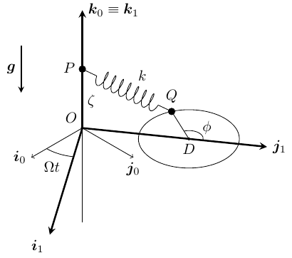
-
(a)
How many degrees of freedom does the system have? Define the vectors $\mathbf{i}_1$, $\mathbf{j}_1$ and $\mathbf{k}_1$ in terms of the vectors of $\mathcal{B}_0$.
-
(b)
Write down the general expression of the position, velocity, and acceleration of $P$ and $Q$ with respect to $S_1$ in terms of $\zeta$, $\phi$ and their derivatives.
-
(c)
Identify and write down the general expression of all the forces acting on $P$ and $Q$.
-
(d)
Using $S_1$ for your analysis, write down the scalar equations of motion of $P$ and $Q$.
-
(e)
Starting from these equations, write down a system of two differential equations for $\zeta$ and $\phi$, that do not depend on any other unknowns of the problem.
-
(f)
Find one conservation law of the problem (i.e., a first integral of motion) in reference frame $S_1$.
Worked Solution [ Click to Expand ]
Reference Frames, Bases and Coordinates
Two heavy particles $P$ and $Q$ of mass $m$ are joined by a spring of stiffness $k$. $P$ slides without friction on the vertical axis of $S_0$; $Q$ slides without friction on a horizontal ring of radius $R$, in the plane of $\mathbf i_0$ and $\mathbf j_0$, whose centre $D$ is at the distance $\ell$ from $O$ and revolves about the vertical at the constant rate $\Omega$ (Problems.pdf, p. 28). The statement asks for the degrees of freedom and the basis of $S_1$, the position, velocity and acceleration of both particles in $S_1$, the forces, the scalar equations of motion in $S_1$, two equations for $\zeta$ and $\phi$ alone, and one first integral. The ring is at rest in $S_1$, so the solution works there, with the composition of motions of Notes.pdf, Sec. 3.2 and the inertia forces of Notes.pdf, Sec. 4.9.
| Item | Definition |
|---|---|
| Fixed (inertial) frame | $S_0 = \{O;\ \mathcal B_0\}$, $\mathcal B_0 = \{\mathbf i_0, \mathbf j_0, \mathbf k_0\}$, $\mathbf k_0$ vertical, up; gravity $-g\,\mathbf k_0$ |
| Moving frame | $S_1 = \{O;\ \mathcal B_1\}$, same origin, $\mathbf k_1 = \mathbf k_0$, $\mathbf j_1$ from $O$ towards $D$; it turns by $\Omega t$ about $\mathbf k_0$, from $\mathbf i_0$ towards $\mathbf j_0$ (figure), and coincides with $S_0$ at $t = 0$ |
| Ring basis at $Q$ | $\{\mathbf e_r, \mathbf e_\phi, \mathbf k_1\}$: $\mathbf e_r$ from $D$ towards $Q$, $\mathbf e_\phi$ tangent to the ring in the sense of growing $\phi$ (deduced below) |
| Coordinates | $\zeta$, height of $P$ on the axis; $\phi$, angle of $DQ$ measured from $\mathbf j_1$ about $\mathbf k_1$ |
| Data | $m$ [kg], $k$ [N m$^{-1}$], $R$ [m], $\ell$ [m], $\Omega$ [rad s$^{-1}$], $g$ [m s$^{-2}$] |
| Unknowns | $\zeta(t)$, $\phi(t)$ and four reaction components $N_1, N_2$ (axis on $P$), $N_3, N_4$ (ring on $Q$) |
| Applied forces | weights $-mg\,\mathbf k_1$; spring between $P$ and $Q$ |
| Inertia forces (in $S_1$) | centrifugal and Coriolis; no origin or Euler terms (Notes.pdf, Eq. 4.62) |
| Hypotheses | $S_0$ inertial; uniform gravity; massless linear spring; smooth bilateral contacts; $\Omega$ constant; the ring is rigidly attached to $S_1$ |
| Readings | (1) The statement gives no natural length; the spring is read as one of zero natural length, force on $P$ equal to $k\,\overrightarrow{PQ}$. With a natural length $L_0$ the factor $k$ becomes $k(1 - L_0/\lvert PQ\rvert)$ in every spring term and the two equations of part (e) couple (box at the end of part (e)). (2) $\phi$ is read from the figure as positive from $\mathbf j_1$ towards $-\mathbf i_1$ (counterclockwise seen from above); this is also the sense in the official ring reaction, which contains $-\sin\phi\,\mathbf i_1 + \cos\phi\,\mathbf j_1$. With the opposite sense $\phi$ changes sign everywhere and the equations of part (e) keep their form |
(a) Degrees of freedom
In $S_1$ write $(x_1^P, y_1^P, z_1^P)$ and $(x_1^Q, y_1^Q, z_1^Q)$ for the Cartesian coordinates of the two particles.
Units: $[\zeta] = [\mathrm L]$, $[\phi] = [1]$
Meaning: one coordinate per particle; the four constraints become the four reaction components.
Change of Basis and Position Vector
View from above, along $\mathbf k_0$, which points out of the paper (⊙). With $\mathbf i_0$ to the right, $\mathbf j_0$, the cross product of $\mathbf k_0$ and $\mathbf i_0$, points up the page. The figure measures $\Omega t$ from $\mathbf i_0$ towards $\mathbf j_0$, so $S_1$ turns counterclockwise in this view. $\mathbf i_1$ is $\mathbf i_0$ turned by $\Omega t$: hypotenuse 1, adjacent leg $\cos\Omega t$ along $\mathbf i_0$, opposite leg $\sin\Omega t$ along plus $\mathbf j_0$. $\mathbf j_1$, the direction of $D$, is $\mathbf j_0$ turned by the same angle; the counterclockwise turn carries its tip to the left, so its opposite leg $\sin\Omega t$ lies along minus $\mathbf i_0$ (the minus sign).
Units: $[\Omega t] = [1]$
Meaning: these are the vectors of $\mathcal B_1$ in terms of $\mathcal B_0$, as part (a) asks; the third row and column hold the fixed vertical.
The plane of the ring is seen from above ($\mathbf k_1$ out of the paper, ⊙), with $\mathbf i_1$ to the right and $\mathbf j_1$ up, towards $D$. The distance that stays constant is $DQ$, so the path goes from $O$ to $D$ and then to $Q$. Let $F$ be the foot of the perpendicular from $Q$ to the line through $D$ along $\mathbf j_1$. In the shaded right triangle $DFQ$ (right angle at $F$) the hypotenuse is $DQ$, of length $R$; the leg adjacent to $\phi$ is $DF$, of length $R\cos\phi$, along plus $\mathbf j_1$; the opposite leg is $FQ$, of length $R\sin\phi$, along minus $\mathbf i_1$, because a counterclockwise turn from $\mathbf j_1$ carries the point to the left.
Units: $[\ell] = [R] = [\zeta] = [\mathrm L]$
Meaning: $\phi$ is the polar angle about $D$ counted from the direction $OD$; at zero $Q$ is the point of the ring farthest from the axis, at a half turn the nearest.
The determinant is expanded along its first row, with the cofactor signs plus, minus, plus.
Units: $[\mathbf e_r] = [\mathbf e_\phi] = [1]$; $[\dot\phi] = [\mathrm T^{-1}]$
Meaning: $\{\mathbf e_r, \mathbf e_\phi, \mathbf k_1\}$ is a right-handed orthonormal basis attached to $Q$; $\mathbf e_\phi$ is the only direction in which the ring lets $Q$ move.
Kinematics
Units: $[\Omega] = [\mathrm T^{-1}]$
Meaning: in $S_1$ the three unit vectors are constant; in $S_0$ the two horizontal ones turn with the ring.
(b) Position, velocity and acceleration of P and Q in S1
$\overrightarrow{OD}$ is constant in $S_1$, so only $R\,\mathbf e_r$ changes for $Q$.
Units: $[\dot\zeta] = [R\dot\phi] = [\mathrm{L\,T^{-1}}]$; $[\ddot\zeta] = [R\ddot\phi] = [R\dot\phi^2] = [\mathrm{L\,T^{-2}}]$
Meaning: $P$ moves on a straight line and $Q$ on a circle of radius $R$, with tangential and centripetal parts about $D$.
Write the position of a point in the plane of the ring as $x_1\,\mathbf i_1 + y_1\,\mathbf j_1$ (for $Q$, the components of $\mathbf r_1^Q$); the time derivatives of the components are the components of the relative velocity.
Units: $[\Omega R\dot\phi] = [\Omega^2\ell] = [R\dot\phi^2] = [\mathrm{L\,T^{-2}}]$
Meaning: the Coriolis term collects two equal halves, one from the turning of the basis inside the relative velocity and one from the change of the transport velocity; $P$, on the axis, has neither a transport nor a Coriolis term.
Forces and Equations of Motion
(c) Forces acting on P and Q
The axis lets $P$ move only along $\mathbf k_1$, so its smooth reaction has no $\mathbf k_1$ component; the ring lets $Q$ move only along $\mathbf e_\phi$, so its reaction has no $\mathbf e_\phi$ component. The spring vector is $\overrightarrow{PQ}$, the difference of the two positions.
Units: $[mg] = [kR] = [m\Omega^2\ell] = [m\Omega R\dot\phi] = [\mathrm{M\,L\,T^{-2}}]$
Meaning: the spring pulls $Q$ towards $P$; the centrifugal force pushes $Q$ away from the axis, horizontally; the Coriolis force on $Q$ is radial in the ring and only loads the ring.
(d) Scalar equations of motion in S1
Units: every term $[\mathrm{M\,L\,T^{-2}}]$
Meaning: six scalar equations for six unknowns, the two coordinates and the four reaction components.
(e) Two equations free of the other unknowns
Units: $[k/m] = [\Omega^2] = [\mathrm T^{-2}]$; $[(k/m)\zeta] = [g] = [\mathrm{L\,T^{-2}}]$
Meaning: the two equations are decoupled: the spring force is linear in $\overrightarrow{PQ}$, its vertical part acts only on the motion of $P$ along the axis and its horizontal part only on the motion of $Q$ in the horizontal plane. Once $\zeta$ and $\phi$ are known, the other four equations of part (d) give the reactions.
With a natural length $L_0$ the force on $P$ is $k\left(|PQ| - L_0\right)$ times the unit vector of $\overrightarrow{PQ}$, so every spring term above gains the factor $1 - L_0/|PQ|$, with the squared length written out below.
Units: $[L_0/|PQ|] = [1]$
Meaning: only the zero natural length makes the problem separate; the forms of the reactions do not change.
Answers and Checks
(f) A conservation law in S1
Two reasons. First, the forces that do no work in $S_1$: the reactions (the axis and the ring are at rest in $S_1$ and smooth, so each reaction is normal to the relative velocity of its particle), the Coriolis force on $Q$ (normal to its relative velocity; the one on $P$ is zero), and the origin and Euler forces, which vanish. Second, the forces that work have potentials of the positions in $S_1$: the weights, constant in $S_1$ because $\mathbf k_1$ is the fixed vertical; the spring, which depends only on $\overrightarrow{PQ}$; and the centrifugal force on $Q$, because the rate is constant and the axis fixed. $Q$ moves in the plane through $O$ normal to the axis, so its distance to the axis is the length of $\mathbf r_1^Q$.
Units: $[m\dot\zeta^2] = [mg\zeta] = [k\zeta^2] = [k\ell R] = [m\Omega^2\ell R] = [\mathrm{M\,L^2\,T^{-2}}]$
Meaning: the mechanical energy in $S_1$ is a first integral; the constant term of the potential is dropped and the constant is fixed by initial conditions, which the statement does not give. Since each bracket of the check vanishes on its own, the two parts, the one in $\zeta$ and the one in $\phi$, are also conserved separately.
| Part of the statement | Answer |
|---|---|
| (a) Degrees of freedom; basis $\mathcal B_1$ | 2 ($\zeta$, $\phi$); $\mathbf i_1 = \cos\Omega t\,\mathbf i_0 + \sin\Omega t\,\mathbf j_0$, $\mathbf j_1 = -\sin\Omega t\,\mathbf i_0 + \cos\Omega t\,\mathbf j_0$, $\mathbf k_1 = \mathbf k_0$ |
| (b) Kinematics in $S_1$ | $\mathbf r_1^P = \zeta\,\mathbf k_1$, $\mathbf v_1^P = \dot\zeta\,\mathbf k_1$, $\mathbf a_1^P = \ddot\zeta\,\mathbf k_1$; $\mathbf r_1^Q = -R\sin\phi\,\mathbf i_1 + (\ell + R\cos\phi)\,\mathbf j_1$, $\mathbf v_1^Q = R\dot\phi\,\mathbf e_\phi$, $\mathbf a_1^Q = R\ddot\phi\,\mathbf e_\phi - R\dot\phi^2\,\mathbf e_r$, with $\mathbf e_r = -\sin\phi\,\mathbf i_1 + \cos\phi\,\mathbf j_1$, $\mathbf e_\phi = -\cos\phi\,\mathbf i_1 - \sin\phi\,\mathbf j_1$ |
| (c) Forces | on $P$: $-mg\,\mathbf k_1$, $N_1\mathbf i_1 + N_2\mathbf j_1$, $k\,\overrightarrow{PQ}$, no inertia force; on $Q$: $-mg\,\mathbf k_1$, $N_3\,\mathbf e_r + N_4\,\mathbf k_1$, $-k\,\overrightarrow{PQ}$, $\mathbf F_C^Q = m\Omega^2\mathbf r_1^Q$, $\mathbf F_{COR}^Q = 2m\Omega R\dot\phi\,\mathbf e_r$; origin and Euler forces zero |
| (d) Scalar equations | $0 = N_1 - kR\sin\phi$; $0 = N_2 + k(\ell + R\cos\phi)$; $m\ddot\zeta = -mg - k\zeta$; $-mR\dot\phi^2 = N_3 + (m\Omega^2 - k)(\ell\cos\phi + R) + 2m\Omega R\dot\phi$; $mR\ddot\phi = (k - m\Omega^2)\ell\sin\phi$; $0 = N_4 - mg + k\zeta$ |
| (e) Two equations | $\ddot\zeta + (k/m)\zeta = -g$; $\ddot\phi = (\ell/R)(k/m - \Omega^2)\sin\phi$ (spring of zero natural length; with a natural length $L_0$ the factor $k$ becomes $k(1 - L_0/\lvert PQ\rvert)$ and they couple) |
| (f) First integral | $\frac12 m(\dot\zeta^2 + R^2\dot\phi^2) + mg\zeta + \frac12 k\zeta^2 + (k - m\Omega^2)\ell R\cos\phi = \text{const}$ (energy in $S_1$) |
Check against the official key: Problems.pdf, p. 76 prints only the reaction of the ring on $Q$, $N_3(-\sin\phi\,\mathbf i_1 + \cos\phi\,\mathbf j_1) + N_4\,\mathbf k_1$; it coincides with the reaction of part (c), whose radial vector is the $\mathbf e_r$ of the position box. The other parts have no key; the energy is checked against the two equations in part (f), and the limiting cases follow.
Units: $[(\ell/R)(k/m - \Omega^2)] = [\mathrm T^{-2}]$; $[mg/k] = [\mathrm L]$
Meaning: $P$ oscillates about the point below $O$ where the vertical pull of the spring balances its weight, unaffected by the rotation because it sits on the axis. For $Q$ the spring pulls towards the point of the ring nearest the axis and the centrifugal force pushes towards the farthest one: below the rate whose square is $k/m$ the near point is where small oscillations occur, above it the far one; the other point gives exponential departure.
The angle $\theta$ describing the rotation of the solar panels of a reconnaissance satellite about the body-fixed axis $x$ is an arbitrary function of time. The satellite spins about the $z$ axis at the constant angular rate $\omega$. Derive expressions for the absolute velocity and acceleration of point $B$ in the figure relative to an inertial reference frame centered in $A$.
(Taken from Ginsberg, "Engineering Dynamics", Cambridge University Press, 2008.)
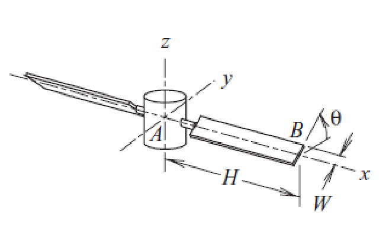
Worked Solution [ Click to Expand ]
Reference Frames, Bases and Coordinates
A satellite spins about its $z$ axis at the constant rate $\omega$; its solar panel turns about the body-fixed $x$ axis through the angle $\theta$, an arbitrary function of time. The statement asks for the absolute velocity and acceleration of the corner $B$ of the panel with respect to an inertial frame centred at $A$ (Problems.pdf, p. 29). There are no forces: the problem is kinematics only, solved with the composition of motions of Notes.pdf, Sec. 3.2, and checked by a second route with the composition of angular velocities.
| Item | Definition |
|---|---|
| Fixed (inertial) frame | $S_0 = \{A;\ \mathcal B_0\}$, $\mathcal B_0 = \{\mathbf i_0, \mathbf j_0, \mathbf k_0\}$, centred at the satellite centre $A$, $\mathbf k_0$ along the spin axis |
| Body frame | $S_1 = \{A;\ \mathcal B_1\}$, the axes $x$, $y$, $z$ of the figure; $\mathbf k_1 = \mathbf k_0$; turns by $\omega t$ about $\mathbf k_0$, from $\mathbf i_0$ towards $\mathbf j_0$; coincides with $S_0$ at $t = 0$ |
| Panel frame | $S_2 = \{C;\ \mathcal B_2\}$, attached to the panel; $C$ is the point of the hinge axis at the abscissa of $B$; $\mathbf i_2 = \mathbf i_1$ (hinge), $\mathbf j_2$ from $C$ towards $B$ |
| Points | $A$ centre of the satellite; $C$ on the $x$ axis at the distance $H$ from $A$; $B$ the corner of the panel; $B'$ the projection of $B$ on the plane $xy$ |
| Data | $H$ [m] (distance from $A$ to $C$ along $x$), $W$ [m] (distance from $B$ to the hinge axis), $\omega$ [rad s$^{-1}$], $\theta(t)$ [rad] with its derivatives |
| Unknowns | $\mathbf v_0^B$, $\mathbf a_0^B$ |
| Hypotheses | $S_0$ inertial with $A$ fixed in it; rigid body and panel; $\omega$ constant; $\theta(t)$ known |
| Readings | (1) Read from the figure: $\theta$ is the angle of the panel about $+x$, measured from the body axis $y$, so for zero $\theta$ the segment $CB$ points along $+y$. If $\theta$ were measured from the body axis $z$ instead, the position of $B$ would be the one below with $\theta$ replaced by $\theta + \pi/2$, and so would every result. (2) $H$ is read as measured along $x$ from $A$ to the abscissa of $B$, and $W$ as the distance of $B$ from the $x$ axis |
Change of Basis and Position Vector
View from $+z$, along $\mathbf k_0$, which points out of the paper (⊙). With $\mathbf i_0$ to the right, $\mathbf j_0$, the cross product of $\mathbf k_0$ and $\mathbf i_0$, points up the page; a positive spin turns the body counterclockwise in this view. $\mathbf i_1$ is $\mathbf i_0$ turned by $\omega t$: hypotenuse 1, adjacent leg $\cos\omega t$ along $\mathbf i_0$, opposite leg $\sin\omega t$ along plus $\mathbf j_0$. $\mathbf j_1$ is $\mathbf j_0$ turned by the same angle; the counterclockwise turn carries its tip to the left, so its opposite leg $\sin\omega t$ lies along minus $\mathbf i_0$ (the minus sign).
Units: $[\omega t] = [1]$
Meaning: the body axes in terms of the inertial ones; they coincide at the start.
View along the hinge, with $\mathbf i_1$ out of the paper (⊙). With $\mathbf j_1$ to the right, $\mathbf k_1$, the cross product of $\mathbf i_1$ and $\mathbf j_1$, points up the page. $\theta$ is measured about $+\mathbf i_1$, counterclockwise in this view, from $\mathbf j_1$. $\mathbf j_2$ is $\mathbf j_1$ turned by $\theta$: hypotenuse 1, adjacent leg $\cos\theta$ along $\mathbf j_1$, opposite leg $\sin\theta$ along plus $\mathbf k_1$. $\mathbf k_2$ is $\mathbf k_1$ turned by the same angle; the counterclockwise turn carries its tip to the left, so its opposite leg $\sin\theta$ lies along minus $\mathbf j_1$ (the minus sign). The determinant is expanded along the first row.
Units: $[\theta] = [1]$
Meaning: the panel axes in terms of the body axes; for zero $\theta$ the panel lies in the plane $xy$ of the body.
The distance that stays constant is the one from the hinge, so the path goes from $A$ along the hinge to $C$ and then across the panel to $B$. In the shaded triangle of the hinge view the hypotenuse is $CB$, of length $W$; the leg adjacent to $\theta$ is $W\cos\theta$ along $\mathbf j_1$ and the opposite leg is $W\sin\theta$ along $\mathbf k_1$. The body-plane figure shows the projection $B'$ of $B$ on the plane $xy$.
Units: $[H] = [W] = [\mathrm L]$
Meaning: for zero $\theta$ the corner is at $H$ along $x$ and $W$ along $y$; a quarter turn lifts it to $W$ above the plane $xy$. The vector from the spin axis to $B$ is the one from $A$ to $B'$.
Kinematics
Units: $[\omega] = [\mathrm T^{-1}]$
Meaning: the body axes $x$ and $y$ turn with the spin; the spin axis does not.
Units: $[W\dot\theta] = [\mathrm{L\,T^{-1}}]$; $[W\ddot\theta] = [W\dot\theta^2] = [\mathrm{L\,T^{-2}}]$
Meaning: seen from the body, $B$ describes a circle of radius $W$ about the hinge, with a tangential part along $\mathbf k_2$ and a centripetal part towards the hinge.
Write $\mathbf r_1^B$ as $x_1\,\mathbf i_1 + y_1\,\mathbf j_1 + z_1\,\mathbf k_1$ with $x_1$ equal to $H$, $y_1$ to $W\cos\theta$ and $z_1$ to $W\sin\theta$; the time derivatives of the components are the components of $\mathbf v_1^B$.
Units: $[W\omega] = [H\omega] = [W\dot\theta] = [\mathrm{L\,T^{-1}}]$; $[W\omega\dot\theta] = [H\omega^2] = [W\ddot\theta] = [W\dot\theta^2] = [\mathrm{L\,T^{-2}}]$
Meaning: the velocity adds to the relative one the transport velocity of the body point that coincides with $B$; the acceleration adds the centripetal term towards the spin axis and the Coriolis term, the two equal halves coming from the turning basis inside the relative velocity and from the change of the transport velocity. The components are in $\mathcal B_1$; multiplying by $[{}_0R_1]$ gives them in $\mathcal B_0$.
$B$ is fixed in $S_2$, so its velocity and acceleration relative to $S_2$ vanish; $C$ is fixed in $S_1$ at $H\,\mathbf i_1$. Vector products use $\mathbf i_1\times\mathbf j_1 = \mathbf k_1$, $\mathbf j_1\times\mathbf k_1 = \mathbf i_1$, $\mathbf k_1\times\mathbf i_1 = \mathbf j_1$ and the reversed products with a minus sign.
Units: $[\omega\dot\theta] = [\ddot\theta] = [\mathrm T^{-2}]$
Meaning: both routes give the same velocity and acceleration. Here the Coriolis term of the first route appears split in two equal halves: one inside the angular acceleration of the panel, from the turning of the hinge axis, and one in the double vector product.
Answers and Checks
| Part of the statement | Answer |
|---|---|
| Absolute velocity of $B$ | $\mathbf v_0^B = -W\omega\cos\theta\,\mathbf i_1 + (H\omega - W\dot\theta\sin\theta)\,\mathbf j_1 + W\dot\theta\cos\theta\,\mathbf k_1$, in the body basis, with $\mathbf i_1 = \cos\omega t\,\mathbf i_0 + \sin\omega t\,\mathbf j_0$, $\mathbf j_1 = -\sin\omega t\,\mathbf i_0 + \cos\omega t\,\mathbf j_0$, $\mathbf k_1 = \mathbf k_0$ (with $\theta$ measured from $z$ instead, replace $\theta$ by $\theta + \pi/2$) |
| Absolute acceleration of $B$ | $\mathbf a_0^B = (2W\omega\dot\theta\sin\theta - H\omega^2)\,\mathbf i_1 - (W\ddot\theta\sin\theta + W\dot\theta^2\cos\theta + W\omega^2\cos\theta)\,\mathbf j_1 + (W\ddot\theta\cos\theta - W\dot\theta^2\sin\theta)\,\mathbf k_1$ (same remark on the reading of $\theta$) |
Check against the official key: Problems.pdf, p. 76 prints both vectors in the body basis; they coincide term by term with the boxed results (box below). The two routes of the kinematics give the same result.
Units: $[\mathrm{L\,T^{-1}}]$ and $[\mathrm{L\,T^{-2}}]$
Meaning: the key uses the same reading of $\theta$ and the same body basis.
Units: $[\omega^2H] = [\mathrm{L\,T^{-2}}]$
Meaning: the Coriolis term needs both rotations at once and a relative velocity with a part normal to the spin axis.
Two Repelling Particles on Concentric Wires in a Rotating Plane
Original statement · Problems.pdf, p. 32We consider a system of two heavy particles of equal mass $m$. The first particle $P$ is constrained to move without friction along a circular wire of radius $a$. The second particle $Q$ is constrained to move without friction along a circular wire of radius $2a$. Both wires are contained in a plane $Ox_1y_1$ that rotates at a constant, known angular rate $\Omega$ about the axis $Oy_1 \equiv Oy_0$ with respect to a fixed reference frame $S_0$ with axes $Ox_0y_0z_0$ (not shown in the figure). We also define a moving reference frame $S_1$ with axes $Ox_1y_1z_1$. The two particles repel each other with a force that is proportional to their distance, with constant of proportionality, $k$.
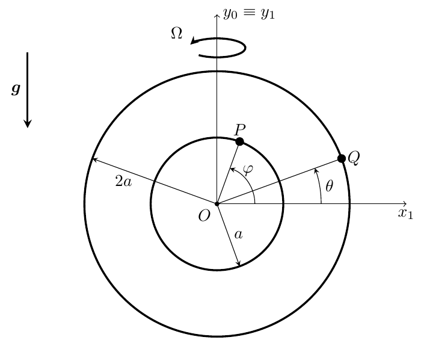
-
(a)
How many configuration degrees of freedom has this system?
-
(b)
How many independent components of the reaction forces on the particles need to be considered? Write down the reaction force on each particle.
-
(c)
Write down the relative accelerations of $P$ and $Q$ with respect to $S_1$ as a function of the coordinates of the problem and their derivatives.
-
(d)
Express the applied forces on the particles as a function of the coordinates of the problem.
-
(e)
Express the fictitious forces of inertia on the particles as seen from $S_1$, as a function of the coordinates of the problem and their derivatives.
-
(f)
Write down a system of ordinary differential equations to determine the evolution of the coordinates of the problem as a function of time, free of any other unknowns. You do not need to solve this system (since no initial conditions have been provided) but we assume that we know how to solve it, so that from this point we know the coordinates as a function of time.
-
(g)
Determine the values of the reaction forces from the wires as a function of time.
-
(h)
Is the mechanical energy of this system conserved in $S_1$? If so, write down the corresponding equation.
-
(i)
Determine the values of $\alpha = \dfrac{ka}{mg}$ and $\beta = \dfrac{a\Omega^2}{g}$ so that $\varphi = 30^\circ$, $\theta = -60^\circ$ is an equilibrium position of the system in the relative motion.
Worked Solution [ Click to Expand ]
Reference Frames, Bases and Coordinates
Two heavy particles of mass $m$ move without friction, $P$ on a circular wire of radius $a$ and $Q$ on a concentric circular wire of radius $2a$, both centred at $O$ in the plane $Ox_1y_1$. The plane turns at the constant rate $\Omega$ about the vertical axis $Oy_1$, which coincides with $Oy_0$; the particles repel each other with a force equal to $k$ times their distance (Problems.pdf, p. 32). The statement asks for the degrees of freedom, the reactions, the relative accelerations, the applied and the inertia forces, the equations of motion, the reactions as functions of time, the energy in $S_1$, and the values of two parameters that make one configuration an equilibrium. The wires are at rest in $S_1$, so the solution works there, with the composition of motions of Notes.pdf, Sec. 3.2 and the inertia forces of Notes.pdf, Sec. 4.9.
| Item | Definition |
|---|---|
| Fixed (inertial) frame | $S_0 = \{O;\ \mathcal B_0\}$, $\mathcal B_0 = \{\mathbf i_0, \mathbf j_0, \mathbf k_0\}$, $\mathbf j_0$ vertical, up; gravity $-g\,\mathbf j_0$ |
| Moving frame | $S_1 = \{O;\ \mathcal B_1\}$, attached to the plane of the wires; $\mathbf j_1 = \mathbf j_0$; it turns by $\Omega t$ about $\mathbf j_0$ and coincides with $S_0$ at $t = 0$ |
| Polar bases | at $P$: $\{\mathbf e_r^P, \mathbf e_\varphi, \mathbf k_1\}$; at $Q$: $\{\mathbf e_r^Q, \mathbf e_\theta, \mathbf k_1\}$ (deduced below) |
| Coordinates | $\varphi$ and $\theta$, angles of $OP$ and $OQ$ measured from $Ox_1$, positive from $\mathbf i_1$ towards $\mathbf j_1$ |
| Data | $m$ [kg], $a$ [m], $k$ [N m$^{-1}$], $\Omega$ [rad s$^{-1}$], $g$ [m s$^{-2}$]; dimensionless $\alpha = ka/(mg)$, $\beta = a\Omega^2/g$ |
| Unknowns | $\varphi(t)$, $\theta(t)$ and the reaction components $N_1, N_2$ (on $P$), $N_3, N_4$ (on $Q$) |
| Applied forces | weights $-mg\,\mathbf j_1$; repulsion $k\,\overrightarrow{QP}$ on $P$ and $k\,\overrightarrow{PQ}$ on $Q$ |
| Inertia forces (in $S_1$) | centrifugal and Coriolis; no origin or Euler terms (Notes.pdf, Eq. 4.62) |
| Hypotheses | $S_0$ inertial; uniform gravity; smooth bilateral wires; $\Omega$ constant |
| Readings | (1) The curved arrow of the figure is read as a turn in the positive sense about $+\mathbf j_0$ (counterclockwise seen from above), so the angular velocity is $\Omega\,\mathbf j_1$ with $\Omega$ positive. The opposite sense changes the sign of $\Omega$, hence the matrix $[{}_0R_1]$ and the derivatives of $\mathbf i_1$ and $\mathbf k_1$ (their signs); among the dynamic results it changes only the Coriolis forces and the reactions $N_2$, $N_4$ (they change sign); the equations of motion, the energy and part (i) contain only the square of $\Omega$ and do not change. (2) $\mathbf k_1$, the cross product of $\mathbf i_1$ and $\mathbf j_1$, points out of the paper in the figure |
(a) Configuration degrees of freedom
Units: $[\varphi] = [\theta] = [1]$
Meaning: one angle per particle; the four constraints become the four reaction components of part (b).
Change of Basis and Position Vector
View from above, along $\mathbf j_0$, which points out of the paper (⊙). With $\mathbf i_0$ to the right, $\mathbf k_0$, the cross product of $\mathbf i_0$ and $\mathbf j_0$, points down the page (fingers from $\mathbf i_0$ to the reader, thumb down). The plane turns counterclockwise in this view. $\mathbf i_1$ is $\mathbf i_0$ turned by $\Omega t$: hypotenuse 1, adjacent leg $\cos\Omega t$ along $\mathbf i_0$, opposite leg $\sin\Omega t$ up the page, which is the direction of minus $\mathbf k_0$ (the minus sign). $\mathbf k_1$ is $\mathbf k_0$ turned by the same angle; the counterclockwise turn of a vector pointing down carries its tip to the right, so its opposite leg $\sin\Omega t$ lies along plus $\mathbf i_0$.
Units: $[\Omega t] = [1]$
Meaning: the columns are the vectors of the plane frame in the fixed basis; the vertical is shared by both frames.
The plane $Ox_1y_1$ is drawn with $\mathbf i_1$ to the right, $\mathbf j_1$ up and $\mathbf k_1$ out of the paper (⊙). For $P$ the shaded right triangle has the hypotenuse $OP$, of length $a$; the leg adjacent to $\varphi$ is $a\cos\varphi$ along $\mathbf i_1$ and the opposite leg $a\sin\varphi$ along $\mathbf j_1$. For $Q$ the same triangle has the hypotenuse $2a$; with $\theta$ negative, as drawn, its leg $2a\sin\theta$ is negative and $Q$ lies below $Ox_1$. Both angles are the standard polar angles of the plane, so no conversion is needed.
Units: $[a] = [\mathrm L]$
Meaning: each polar triad is right-handed and orthonormal; the dot products between the two triads depend only on the difference of the angles.
Kinematics
Units: $[\Omega] = [\mathrm T^{-1}]$
Meaning: the horizontal axes of the plane frame turn; the vertical does not.
(c) Relative accelerations
Units: $[a\dot\varphi^2] = [a\ddot\varphi] = [\mathrm{L\,T^{-2}}]$
Meaning: circular motions about $O$ in the plane: a centripetal part towards $O$ and a tangential part along each wire.
Both particles stay in the plane of the wires, so their positions are $x_1\,\mathbf i_1 + y_1\,\mathbf j_1$; the time derivatives of the components are the components of the relative velocity.
Units: $[\Omega^2a] = [\Omega a\dot\varphi] = [\mathrm{L\,T^{-2}}]$
Meaning: the centripetal term points horizontally towards the axis, along minus $\mathbf i_1$ for a particle on the side of positive $x_1$; the Coriolis term is normal to the plane of the wires.
Forces and Equations of Motion
(b) Reaction forces
The tangent of the wire of $P$ is $\mathbf e_\varphi$ and that of $Q$ is $\mathbf e_\theta$; the plane normal to each tangent is spanned by the radial vector and $\mathbf k_1$.
Units: $[N_i] = [\mathrm{M\,L\,T^{-2}}]$
Meaning: as many unknown components as constraints; each reaction lies in the plane normal to its wire.
(d) Applied forces
Units: $[mg] = [ka] = [\mathrm{M\,L\,T^{-2}}]$
Meaning: the applied forces lie in the plane of the wires; the tangential part of the repulsion on $P$ is largest when the two radii are perpendicular, and its radial part is then $ka$, outwards; the radial part vanishes and changes sign where the cosine of the angle between the radii is one half.
(e) Inertia forces seen from S1
Units: $[m\Omega^2a] = [m\Omega a\dot\varphi] = [\mathrm{M\,L\,T^{-2}}]$
Meaning: the centrifugal force pushes each particle horizontally away from the vertical axis; the Coriolis force is normal to the plane of the wires, so only the reactions $N_2$ and $N_4$ can balance it.
(f) Equations of motion free of other unknowns
Units: $[g/a] = [k/m] = [\Omega^2] = [\ddot\varphi] = [\mathrm T^{-2}]$
Meaning: six scalar equations for six unknowns; the two tangential ones are a closed system for the two angles, coupled through the repulsion.
(g) Reactions as functions of time
Units: every term $[\mathrm{M\,L\,T^{-2}}]$
Meaning: with the solution of part (f) substituted, each reaction is an explicit function of time; the components normal to the plane come only from the Coriolis forces.
Answers and Checks
(h) Mechanical energy in S1
Two reasons. First, the forces that do no work in $S_1$: the reactions (the wires are at rest in $S_1$ and smooth, so each reaction is normal to the relative velocity), the Coriolis forces (normal to the relative velocities), and the origin and Euler forces, which vanish. Second, the forces that work have potentials of the positions in $S_1$: the weights, constant in $S_1$ because $\mathbf j_1$ is the fixed vertical; the repulsion, which depends only on $\overrightarrow{PQ}$ (its potential has a minus sign because the force pushes the particles apart); and the centrifugal forces, because the rate is constant and the axis fixed. A point of the plane is at the distance of its $x_1$ coordinate from the axis $Oy_1$.
Units: $[ma^2\dot\varphi^2] = [mga] = [ka^2] = [m\Omega^2a^2] = [\mathrm{M\,L^2\,T^{-2}}]$
Meaning: the energy of the relative motion is a first integral; the constant term of the repulsion potential is dropped, and the constant is fixed by initial conditions, which the statement does not give.
(i) Parameters for the equilibrium at 30 and minus 60 degrees
The first equation of part (f) is multiplied by $a/g$ and the second by $2a/g$, which brings in the two parameters.
Units: $[ka/(mg)] = [a\Omega^2/g] = [1]$
Meaning: both values are positive, so the configuration can be an equilibrium. Along the wire of $P$ the repulsion pushes it towards larger angles, while its weight and the centrifugal force (towards the horizontal, away from the axis) push it back; along the wire of $Q$ the weight and the repulsion push it towards more negative angles and the centrifugal force pulls it back towards the horizontal.
| Part of the statement | Answer |
|---|---|
| (a) Degrees of freedom | 2 ($\varphi$, $\theta$) |
| (b) Reactions | answered under Forces and Equations of Motion, after part (c): 4 independent components: $\mathbf N^P = N_1\,\mathbf e_r^P + N_2\,\mathbf k_1$, $\mathbf N^Q = N_3\,\mathbf e_r^Q + N_4\,\mathbf k_1$ |
| (c) Relative accelerations | answered under Kinematics, before part (b): $\mathbf a_1^P = a\ddot\varphi\,\mathbf e_\varphi - a\dot\varphi^2\,\mathbf e_r^P$, $\mathbf a_1^Q = 2a\ddot\theta\,\mathbf e_\theta - 2a\dot\theta^2\,\mathbf e_r^Q$, with $\mathbf e_r^P = \cos\varphi\,\mathbf i_1 + \sin\varphi\,\mathbf j_1$, $\mathbf e_\varphi = -\sin\varphi\,\mathbf i_1 + \cos\varphi\,\mathbf j_1$ (same with $\theta$) |
| (d) Applied forces | $-mg\,\mathbf j_1 + k(\mathbf r_1^P - \mathbf r_1^Q)$ on $P$ and $-mg\,\mathbf j_1 + k(\mathbf r_1^Q - \mathbf r_1^P)$ on $Q$, in polar components as boxed in part (d) |
| (e) Inertia forces | $\mathbf F_C^P = m\Omega^2a\cos\varphi\,\mathbf i_1$, $\mathbf F_C^Q = 2m\Omega^2a\cos\theta\,\mathbf i_1$, $\mathbf F_{COR}^P = -2m\Omega a\dot\varphi\sin\varphi\,\mathbf k_1$, $\mathbf F_{COR}^Q = -4m\Omega a\dot\theta\sin\theta\,\mathbf k_1$; origin and Euler forces zero (opposite sense of rotation: Coriolis forces change sign) |
| (f) Equations of motion | $\ddot\varphi = -(g/a)\cos\varphi + (2k/m)\sin(\varphi - \theta) - \Omega^2\sin\varphi\cos\varphi$; $\ddot\theta = -(g/2a)\cos\theta - (k/2m)\sin(\varphi - \theta) - \Omega^2\sin\theta\cos\theta$ |
| (g) Reactions | $N_1$, $N_3$ as boxed in part (g); $N_2 = 2m\Omega a\dot\varphi\sin\varphi$, $N_4 = 4m\Omega a\dot\theta\sin\theta$ (opposite sense of rotation: $N_2$, $N_4$ change sign) |
| (h) Energy in $S_1$ | conserved: $\frac12 ma^2(\dot\varphi^2 + 4\dot\theta^2) + mga(\sin\varphi + 2\sin\theta) + 2ka^2\cos(\varphi - \theta) - \frac12 m\Omega^2a^2(\cos^2\varphi + 4\cos^2\theta) = \text{const}$ |
| (i) Parameters | $\alpha = (1 + 2\sqrt3)/6 \approx 0.744$, $\beta = (6 + 4\sqrt3)/9 \approx 1.4365$ |
Check against the official key: Problems.pdf, p. 76 prints only the final quantities of part (i), 0.744 and 1.4365; the exact values of the box, 0.74402 and 1.43647, round to them. The other parts have no key; the energy is checked against the equations of motion in part (h), and the limiting cases follow.
Units: $[\mathrm T^{-2}]$
Meaning: the Coriolis forces only load the wires; they never enter the equations of motion or the energy.
Particle on a Rotating Sphere Attracted to a Point
Original statement · Problems.pdf, p. 34A point particle $P$ of mass $m$ slides without friction on a sphere of radius $a$ centered at the origin of the inertial reference frame $S_0$ as shown in the figure. The particle is attracted by a point $A$ in the equatorial plane, located a distance $a$ from the surface of the sphere as shown. The force of attraction is linearly proportional [sic] the distance between this point and $P$, with known constant of proportionality $k \gt 0$. The sphere and the point $A$ rotate rigidly about the vertical with a known angular velocity $\Omega\mathbf{k}_0$. We define the auxiliary reference frame $S_1$ that rotates with the sphere and point $A$, with $\mathbf{k}_1 = \mathbf{k}_0$ and $\mathbf{i}_1$ pointing in the direction of $A$. We introduce the angles $\phi$ and $\theta$ as shown to locate $P$ on the sphere. Note that there is no gravity in this problem.
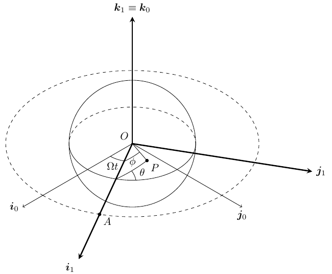
-
(a)
Express the position, velocity, and acceleration of $P$ with respect to $S_1$ in terms of $\phi$, $\theta$ and their derivatives. Remember to define any unit vectors that you want to use in terms of $\mathbf{i}_0, \mathbf{j}_0, \mathbf{k}_0$ first.
-
(b)
Write down the (vector) equation of motion of $P$ in $S_1$, and derive from there a set of two scalar second-order differential equations for $\phi$, $\theta$ that do not depend on any other unknowns. To do so, first identify and write down all the forces needed in your analysis.
-
(c)
Is the mechanical energy of $P$ conserved in $S_1$? Explain. If so, write down the corresponding conservation law.
-
(d)
Identify all equilibrium configurations of the system, and discuss them as a function of the ratio $m\Omega^2/k$.
-
(e)
Assuming the functions of time $\phi(t)$ and $\theta(t)$ are known, write down the expression of the reaction of the sphere on $P$.
Worked Solution [ Click to Expand ]
Reference Frames, Bases and Coordinates
A particle $P$ of mass $m$ slides without friction on a sphere of radius $a$ centred at the origin $O$ of the inertial frame $S_0$. A point $A$ of the equatorial plane, at the distance $a$ from the surface, attracts $P$ with a force equal to $k$ times their distance. The sphere and $A$ turn rigidly about the vertical with the angular velocity $\Omega\,\mathbf k_0$; there is no gravity (Problems.pdf, p. 34). The statement asks for the position, velocity and acceleration in $S_1$, the equation of motion and two scalar equations for the angles, the energy in $S_1$, the equilibria as functions of the ratio of $m\Omega^2$ to $k$, and the reaction. The sphere and $A$ are at rest in $S_1$, so the solution works there, with the composition of motions of Notes.pdf, Sec. 3.2 and the inertia forces of Notes.pdf, Sec. 4.9.
| Item | Definition |
|---|---|
| Fixed (inertial) frame | $S_0 = \{O;\ \mathcal B_0\}$, $\mathcal B_0 = \{\mathbf i_0, \mathbf j_0, \mathbf k_0\}$, $\mathbf k_0$ along the axis of rotation |
| Moving frame | $S_1 = \{O;\ \mathcal B_1\}$, turning with the sphere and $A$: $\mathbf k_1 = \mathbf k_0$, $\mathbf i_1$ towards $A$; it turns by $\Omega t$ from $\mathbf i_0$ towards $\mathbf j_0$ (figure) and coincides with $S_0$ at $t = 0$ |
| Point $A$ | on the $\mathbf i_1$ axis, at the distance $a$ from the surface, so $OA$ is $2a$ |
| Spherical basis at $P$ | $\{\mathbf e_r, \mathbf e_\phi, \mathbf e_\theta\}$ with the polar axis along $OA$ (deduced below); auxiliary unit vector $\mathbf u$ of the plane of $\mathbf j_1$ and $\mathbf k_1$; $P'$ the projection of $P$ on that plane |
| Coordinates | $\phi$, angle at $O$ between $\overrightarrow{OA}$ and $\overrightarrow{OP}$; $\theta$, angle about the axis $OA$ from the equatorial plane (side of $\mathbf j_1$) towards $\mathbf k_1$ |
| Data | $m$ [kg], $a$ [m], $k$ [N m$^{-1}$], $\Omega$ [rad s$^{-1}$]; ratio $\Lambda = m\Omega^2/k$ [1] |
| Unknowns | $\phi(t)$, $\theta(t)$ and the reaction $N\,\mathbf e_r$ |
| Applied force | attraction $k\,\overrightarrow{PA}$; no gravity |
| Inertia forces (in $S_1$) | centrifugal and Coriolis; no origin or Euler terms (Notes.pdf, Eq. 4.62) |
| Hypotheses | $S_0$ inertial; smooth sphere; $\Omega$ constant |
| Readings | (1) Read from the figure: $\phi$ is the angle $AOP$ and $\theta$ the angle, seen at the point where $OA$ crosses the sphere, between the equator and the great circle through that point and $P$; so $\phi$ is a polar angle about $OA$ and $\theta$ its azimuth. If instead $\phi$ were the azimuth in the equatorial plane from $\mathbf i_1$ and $\theta$ the latitude, the position would be $a(\cos\theta\cos\phi\,\mathbf i_1 + \cos\theta\sin\phi\,\mathbf j_1 + \sin\theta\,\mathbf k_1)$; the equilibria are the same points, with the coordinates given in the Answers table. (2) The contact is read as bilateral (the reaction may take either sign): the equilibrium $E_1$ always, and $E_2$ when $m\Omega^2$ exceeds $3k$, need the sphere to pull the particle in. With a one-sided contact on the outer face, the equilibria with a negative reaction are not admissible (Answers table) |
Change of Basis and Position Vector
View from above, along $\mathbf k_0$, which points out of the paper (⊙). With $\mathbf i_0$ to the right, $\mathbf j_0$, the cross product of $\mathbf k_0$ and $\mathbf i_0$, points up the page. The figure measures $\Omega t$ from $\mathbf i_0$ towards $\mathbf j_0$, so $S_1$ turns counterclockwise in this view. $\mathbf i_1$ is $\mathbf i_0$ turned by $\Omega t$: hypotenuse 1, adjacent leg $\cos\Omega t$ along $\mathbf i_0$, opposite leg $\sin\Omega t$ along plus $\mathbf j_0$. $\mathbf j_1$ is $\mathbf j_0$ turned by the same angle; the counterclockwise turn carries its tip to the left, so its opposite leg $\sin\Omega t$ lies along minus $\mathbf i_0$ (the minus sign).
Units: $[\Omega t] = [1]$; $[a] = [\mathrm L]$
Meaning: the vectors of $\mathcal B_1$ in terms of $\mathcal B_0$, which part (a) asks to define first; $A$ is at rest in $S_1$.
View along $OA$, with $\mathbf i_1$ out of the paper (⊙). With $\mathbf j_1$ to the right, $\mathbf k_1$, the cross product of $\mathbf i_1$ and $\mathbf j_1$, points up the page. The azimuth starts at $\mathbf j_1$ (equatorial plane) and grows counterclockwise towards $\mathbf k_1$. The unit vector $\mathbf u$ of the plane of $\mathbf j_1$ and $\mathbf k_1$ in the direction $\theta$ is the hypotenuse of the shaded triangle: adjacent leg $\cos\theta$ along $\mathbf j_1$, opposite leg $\sin\theta$ along $\mathbf k_1$. $\mathbf e_\theta$ is $\mathbf u$ turned a further quarter turn counterclockwise; that carries its tip to the side of minus $\mathbf j_1$ (the minus sign).
Units: $[\theta] = [1]$
Meaning: $\mathbf u$ points from the axis $OA$ towards the projection $P'$ of the particle; $\mathbf e_\theta$ is the direction in which the particle moves when only $\theta$ grows.
The meridian plane of $P$ contains the axis $OA$ and $\mathbf u$; it is drawn with $\mathbf i_1$ to the right and $\mathbf u$ up, so $\mathbf e_\theta$ points out of the paper. In the shaded right triangle the hypotenuse is $OP$, of length $a$; the leg adjacent to $\phi$ is $a\cos\phi$ along $\mathbf i_1$ and the opposite leg is $a\sin\phi$ along $\mathbf u$, the distance $OP'$ of the axis view. This is the usual spherical system with its polar axis along $OA$: the usual roles of $\mathbf k$, $\mathbf i$, $\mathbf j$ are taken by $\mathbf i_1$, $\mathbf j_1$, $\mathbf k_1$, a cyclic permutation, which keeps the triad right-handed. The determinant of the matrix whose columns are $\mathbf e_r$, $\mathbf e_\phi$, $\mathbf e_\theta$ is expanded along its first row, with the cofactor signs plus, minus, plus.
Units: $[\mathbf e_r] = [\mathbf e_\phi] = [\mathbf e_\theta] = [1]$
Meaning: a right-handed orthonormal basis at $P$, written in $\mathcal B_1$ and, through $[{}_0R_1]$, in $\mathcal B_0$; with the polar axis along $OA$ the distance to $A$ depends on $\phi$ only.
Kinematics
Units: $[\Omega] = [\mathrm T^{-1}]$
Meaning: in $S_1$ the three unit vectors are constant; in $S_0$ the two horizontal ones turn with the sphere.
(a) Position, velocity and acceleration of P in S1
$\mathbf i_1$, $\mathbf j_1$, $\mathbf k_1$ are constant in $S_1$, so the spherical vectors change only through the two angles.
Units: $[a\dot\phi] = [\mathrm{L\,T^{-1}}]$; $[a\dot\phi^2] = [a\ddot\phi] = [\mathrm{L\,T^{-2}}]$
Meaning: the relative velocity is tangent to the sphere; the radial part of the relative acceleration is the centripetal one of the motion on the sphere.
Write the position as $x_1\,\mathbf i_1 + y_1\,\mathbf j_1 + z_1\,\mathbf k_1$, the components of $a\,\mathbf e_r$; their time derivatives are the components of the relative velocity.
Units: $[\Omega^2 a] = [\Omega a\dot\phi] = [\mathrm{L\,T^{-2}}]$
Meaning: the centripetal term points horizontally to the vertical axis; with $O$ fixed and the rate constant there are no origin or Euler terms.
Forces and Equations of Motion
(b) Forces, vector equation and two scalar equations
The vector products with $\mathbf k_1$ are determinants in the right-handed basis $\{\mathbf e_r, \mathbf e_\phi, \mathbf e_\theta\}$, with the components of $\mathbf k_1$ in the second row, expanded along the first row with the cofactor signs plus, minus, plus.
Units: $[ka] = [m\Omega^2a] = [m\Omega a\dot\phi] = [N] = [\mathrm{M\,L\,T^{-2}}]$
Meaning: one actual applied force, the reaction and two inertia forces; the attraction lies in the meridian plane, the centrifugal force is horizontal and away from the axis, the Coriolis force is normal to the relative velocity.
Units: $[k/m] = [\Omega^2] = [\Omega\dot\theta] = [\ddot\phi] = [\mathrm T^{-2}]$
Meaning: two second-order equations for the two angles, free of the reaction; the projection on $\mathbf e_r$ gives the reaction in part (e). Away from the poles of the coordinates, where the sine of $\phi$ vanishes, the second equation may be divided by that sine.
Answers and Checks
(c) Mechanical energy in S1
Yes, for two reasons. First, the forces that do no work in $S_1$: the reaction (the sphere is at rest in $S_1$ and smooth, so the reaction is normal to the relative velocity), the Coriolis force (normal to the relative velocity), and the origin and Euler forces, which vanish. Second, the forces that work have potentials of the position in $S_1$: the attraction, because $A$ is at rest in $S_1$, and the centrifugal force, because the rate is constant and the axis fixed. The squared distance to the vertical axis is the squared radius minus the square of $z_1$.
Units: $[ma^2\dot\phi^2] = [ka^2] = [m\Omega^2a^2] = [\mathrm{M\,L^2\,T^{-2}}]$
Meaning: the constant terms of the potential are dropped; the constant is fixed by initial conditions, which the statement does not give. What is left of the check is exactly the power of the Coriolis force, which vanishes.
(d) Equilibrium configurations
With $\Lambda$ the ratio of $m\Omega^2$ to $k$, and the sine of $\phi$ not zero:
Units: $[2k/(m\Omega^2)] = [1]$
Meaning: these two equilibria lie in the meridian plane through $A$ and the axis, on the half of the sphere away from $A$, one above and one below the equator.
At rest the Coriolis force vanishes; the applied force and the centrifugal force must be balanced by the radial reaction alone. At the equilibria of the previous box the centrifugal force is the product of $m\Omega^2$, which is $\Lambda k$, and the horizontal part $x_1\,\mathbf i_1$ of the position, with $x_1$ equal to $-2a/\Lambda$.
Units: $[ka] = [m\Omega^2a] = [\mathrm{M\,L\,T^{-2}}]$
Meaning: $E_1$ (the point nearest $A$) and $E_2$ (the farthest) exist for every rate, because there both forces are radial. At $E_1$ the reaction points inwards: the sphere must pull the particle in, which needs the bilateral contact of the readings. At $E_2$ it points outwards while $m\Omega^2$ is below $3k$, vanishes when they are equal and points inwards beyond. At $E_3$ and $E_4$ the reaction points outwards.
(e) Reaction of the sphere
Units: every term $[\mathrm{M\,L\,T^{-2}}]$
Meaning: once the two angles are known as functions of time, the reaction follows; $\mathbf e_r$ in terms of $\mathbf i_0$, $\mathbf j_0$, $\mathbf k_0$ is in the meridian box.
| Part of the statement | Answer |
|---|---|
| (a) Kinematics in $S_1$ | $\mathbf r_1^P = a\,\mathbf e_r$, $\mathbf v_1^P = a\dot\phi\,\mathbf e_\phi + a\sin\phi\,\dot\theta\,\mathbf e_\theta$, $\mathbf a_1^P = -a(\dot\phi^2 + \sin^2\phi\,\dot\theta^2)\,\mathbf e_r + a(\ddot\phi - \sin\phi\cos\phi\,\dot\theta^2)\,\mathbf e_\phi + a(\sin\phi\,\ddot\theta + 2\cos\phi\,\dot\phi\dot\theta)\,\mathbf e_\theta$; $\mathbf i_1 = \cos\Omega t\,\mathbf i_0 + \sin\Omega t\,\mathbf j_0$, $\mathbf j_1 = -\sin\Omega t\,\mathbf i_0 + \cos\Omega t\,\mathbf j_0$, $\mathbf k_1 = \mathbf k_0$, spherical vectors as boxed |
| (b) Forces and equations | $\mathbf F_k = k(2a\,\mathbf i_1 - a\,\mathbf e_r)$, $\mathbf N = N\,\mathbf e_r$, $\mathbf F_C = m\Omega^2(\mathbf r_1^P - z_1\mathbf k_1)$, $\mathbf F_{COR} = -2m\Omega\,\mathbf k_1\times\mathbf v_1^P$; the two boxed scalar equations of part (b) |
| (c) Energy in $S_1$ | conserved: $\frac12 ma^2(\dot\phi^2 + \sin^2\phi\,\dot\theta^2) - 2ka^2\cos\phi + \frac12 m\Omega^2a^2\sin^2\phi\sin^2\theta = \text{const}$ |
| (d) Equilibria | $E_1$: $\phi = 0$ (point nearest $A$), $E_2$: $\phi = \pi$ (farthest point), for every $m\Omega^2/k$; $E_3$, $E_4$: $\theta = \pm\pi/2$, $\cos\phi = -2k/(m\Omega^2)$, only when $m\Omega^2/k \gt 2$; they branch off $E_2$ at the value 2 and tend to the top and bottom of the sphere as the ratio grows. In the other reading of the angles (azimuth $\phi$ in the equator, latitude $\theta$): $E_1$ at $(0, 0)$, $E_2$ at $(\pi, 0)$, $E_3$, $E_4$ at $\phi = \pi$, $\theta = \pm\arccos(2k/(m\Omega^2))$. With a one-sided contact on the outer face (reaction outwards only), $E_1$ is not admissible, and $E_2$ only when $m\Omega^2 \le 3k$ |
| (e) Reaction | $\mathbf N = -[ma(\dot\phi^2 + \sin^2\phi\,\dot\theta^2) + ka(2\cos\phi - 1) + m\Omega^2a(1 - \sin^2\phi\sin^2\theta) + 2m\Omega a(\cos\theta\,\dot\phi - \sin\phi\cos\phi\sin\theta\,\dot\theta)]\,\mathbf e_r$ |
Check against the official key: Problems.pdf, p. 76 prints no answer for problem 49. Independent checks: the energy of part (c) is constant along the equations of part (b), the reaction of part (e) gives at rest the values of the vector balance at the equilibria, and the limiting cases follow.
Units: $[\Lambda] = [1]$
Meaning: the rotation must be fast enough, compared with the stiffness of the attraction, for the centrifugal push away from the axis to balance the attraction off the line $OA$. The statement does not ask for stability, which is not discussed here.
Particle inside a Hollow Sphere in a Rotating Frame
Original statement · Problems.pdf, p. 36A heavy point particle $P$ of mass $m$ is constrained to move inside the surface of a hollow sphere of radius $R$ and center $C$ located at $\mathbf{r}_1^C = R(\mathbf{j}_1 + \mathbf{k}_1)$. The surface of the sphere is smooth. The reference frame $S_1$ shown in the figure is a non-inertial reference frame, because it rotates with a known angular velocity $\boldsymbol{\omega}_{10} = \Omega(t)\,\mathbf{k}_1$ with respect to inertial space. We introduce the two coordiantes [sic] $\theta$ and $\phi$ as shown in the figure, in order to characterize the configuration of $P$.
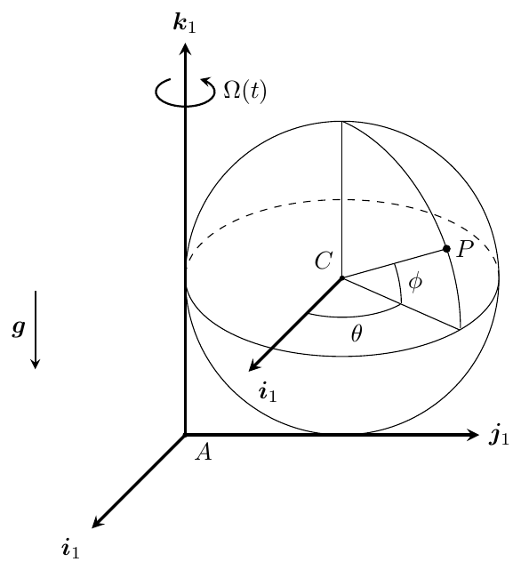
-
(a)
Give the expressions for the position, velocity, and acceleration vectors of $P$ with respect to $S_1$, as functions of $\theta$, $\phi$ and their derivatives. Remember that you may use any unit vectors in your solution, provided that you define them first.
-
(b)
Identify and write down all forces (actual and fictitious) on $P$ as seen from $S_1$.
-
(c)
Write down two differential equations for $\theta$ and $\phi$, free of any other unknowns.
-
(d)
Write down an expression for the reaction unknown. This expression may depend on $\theta, \dot{\theta}, \phi, \dot{\phi}$ and the known parameters of the problem. What is the mathematical condition for the particle to separate from the surface?
-
(e)
In the case that $\Omega = \text{const}$, determine and discuss the value of $\theta$, $\phi$ and the reaction unknown for the equilibrium configurations of $P$.
Worked Solution [ Click to Expand ]
Reference Frames, Bases and Coordinates
A heavy particle $P$ of mass $m$ moves on the smooth inner surface of a hollow sphere of radius $R$ whose centre $C$ is at $R(\mathbf j_1 + \mathbf k_1)$ in the frame $S_1$. $S_1$ is not inertial: it turns with the known angular velocity $\Omega(t)\,\mathbf k_1$ (Problems.pdf, p. 36). The statement asks for the position, velocity and acceleration in $S_1$, all the forces seen from $S_1$, two equations for $\theta$ and $\phi$, the reaction and the condition for the particle to leave the surface, and the equilibria when the rate is constant. The sphere is at rest in $S_1$, so the solution works there, with the composition of motions of Notes.pdf, Sec. 3.2 and the inertia forces of Notes.pdf, Sec. 4.9; since the rate may change, the Euler force appears.
| Item | Definition |
|---|---|
| Fixed (inertial) frame | $S_0 = \{A;\ \mathcal B_0\}$, $\mathcal B_0 = \{\mathbf i_0, \mathbf j_0, \mathbf k_0\}$, with $A$ the origin of $S_1$ (on the axis of rotation) and $\mathbf k_0 = \mathbf k_1$ |
| Moving frame | $S_1 = \{A;\ \mathcal B_1\}$ of the figure, $\mathbf k_1$ vertical, up; it has turned the angle $\Psi(t)$ about $\mathbf k_0$, from $\mathbf i_0$ towards $\mathbf j_0$, whose rate of change is $\Omega$; $S_1$ and $S_0$ coincide when $\Psi$ is zero |
| Sphere | centre $C$, $\mathbf r_1^C = R(\mathbf j_1 + \mathbf k_1)$, radius $R$, fixed in $S_1$; it touches the axis of rotation at $R\,\mathbf k_1$ and the plane $z_1 = 0$ at $R\,\mathbf j_1$ |
| Bases at $P$ | horizontal unit vector $\mathbf e_h$ from $C$ towards the projection $P'$ of $P$ on the horizontal plane through $C$; spherical basis $\{\mathbf u_r, \mathbf u_\theta, \mathbf u_\phi\}$ (deduced below) |
| Coordinates | $\theta$, azimuth of $CP'$ measured at $C$ from the direction of $\mathbf i_1$ towards $\mathbf j_1$; $\phi$, elevation of $CP$ above the horizontal plane through $C$ |
| Data | $m$ [kg], $R$ [m], $g$ [m s$^{-2}$], $\Omega(t)$ [rad s$^{-1}$] and its derivative $\dot\Omega(t)$ [rad s$^{-2}$] |
| Unknowns | $\theta(t)$, $\phi(t)$ and the reaction $-N\,\mathbf u_r$ |
| Applied force | weight $-mg\,\mathbf k_1$ |
| Inertia forces (in $S_1$) | Euler, centrifugal and Coriolis; no origin term (Notes.pdf, Eq. 4.62) |
| Hypotheses | $S_0$ inertial; uniform gravity; $A$ fixed; smooth surface; $\Omega(t)$ known |
| Readings | (1) Read from the figure: $\theta$ is drawn in the horizontal plane through $C$ from the direction of $\mathbf i_1$ towards the side of $\mathbf j_1$, and $\phi$ from that plane upwards. If $\phi$ were the colatitude $\phi_c$ (measured from $\mathbf k_1$ downwards, the complement of $\phi$), the cosine and the sine of the angle would swap in every result, and every term linear in the rate or in the second derivative of the angle would change sign, because those of $\phi_c$ are minus those of $\phi$ and $\mathbf u_\phi$ reverses; the converted equations are in the Answers table. (2) The particle is inside the sphere and the statement asks when it separates, so the contact is read as one-sided: the reaction points towards $C$, written $-N\,\mathbf u_r$ with $N$ non-negative while in contact. For a contact that holds on both sides, every solution of part (e) would be admissible |
Change of Basis and Position Vector
View from above, along $\mathbf k_0$, which points out of the paper (⊙). With $\mathbf i_0$ to the right, $\mathbf j_0$, the cross product of $\mathbf k_0$ and $\mathbf i_0$, points up the page; a positive rate turns $S_1$ counterclockwise in this view. $\mathbf i_1$ is $\mathbf i_0$ turned by $\Psi$: hypotenuse 1, adjacent leg $\cos\Psi$ along $\mathbf i_0$, opposite leg $\sin\Psi$ along plus $\mathbf j_0$. $\mathbf j_1$ is $\mathbf j_0$ turned by the same angle; the counterclockwise turn carries its tip to the left, so its opposite leg $\sin\Psi$ lies along minus $\mathbf i_0$ (the minus sign).
Units: $[\Psi] = [1]$; $[\Omega] = [\mathrm{T^{-1}}]$
Meaning: the orientation of $S_1$ is known at every instant because the rate is known; the rate of change of the angle is the given rate.
Seen from above ($\mathbf k_1$ out of the paper, ⊙), with $\mathbf i_1$ to the right and $\mathbf j_1$ up, the centre $C$ is at the distance $R$ from the axis of rotation, on the side of $\mathbf j_1$. The horizontal unit vector $\mathbf e_h$ at the azimuth $\theta$ is the hypotenuse of the shaded triangle: adjacent leg $\cos\theta$ along $\mathbf i_1$, opposite leg $\sin\theta$ along $\mathbf j_1$. $\mathbf u_\theta$ is $\mathbf e_h$ turned a further quarter turn counterclockwise, which carries its tip to the side of minus $\mathbf i_1$ (the minus sign).
Units: $[\theta] = [1]$
Meaning: $\mathbf e_h$ points from $C$ towards the projection $P'$; $\mathbf u_\theta$ is the horizontal direction in which $P$ moves when only $\theta$ grows.
The vertical plane through $C$ that contains $\mathbf e_h$ is drawn with $\mathbf e_h$ to the right and $\mathbf k_1$ up; the cross product of $\mathbf e_h$ and $\mathbf k_1$ is minus $\mathbf u_\theta$, so $\mathbf u_\theta$ points into the paper (⊗). In the shaded right triangle the hypotenuse is $CP$, of length $R$; the leg adjacent to $\phi$ is $R\cos\phi$ along $\mathbf e_h$ (the distance $CP'$ of the horizontal view) and the opposite leg is $R\sin\phi$ along $\mathbf k_1$. $\mathbf u_\phi$ is $\mathbf u_r$ turned a quarter turn counterclockwise in this view, which carries its tip to the side of minus $\mathbf e_h$ (the minus sign). The usual spherical polar angle is measured from $\mathbf k_1$ downwards and equals a quarter turn minus $\phi$, so its sine is $\cos\phi$ and its cosine $\sin\phi$ (difference formulas). The distance that stays constant is $CP$, so the path goes from $A$ to $C$ and then to $P$. The determinant of the matrix whose columns are $\mathbf u_r$, $\mathbf u_\theta$, $\mathbf u_\phi$ is expanded along the third row, with the cofactor signs plus, minus, plus.
Units: $[R] = [\mathrm L]$; the unit vectors $[1]$
Meaning: a right-handed orthonormal basis at $P$; $\mathbf u_r$ points from $C$ to $P$, the outward normal of the sphere. The poles of the coordinates, where the cosine of $\phi$ vanishes, are the top and bottom points of the sphere.
Kinematics
Units: $[\Omega] = [\mathrm T^{-1}]$; $[\dot\Omega] = [\mathrm T^{-2}]$
Meaning: the angular acceleration is along the fixed axis and vanishes only when the rate is constant.
(a) Position, velocity and acceleration of P in S1
$\mathbf r_1^C$ and $\mathbf k_1$ are constant in $S_1$; $\mathbf e_h$ and the spherical vectors change only through the two angles.
Units: $[R\dot\theta] = [\mathrm{L\,T^{-1}}]$; $[R\dot\phi^2] = [R\ddot\theta] = [\mathrm{L\,T^{-2}}]$
Meaning: the relative velocity is tangent to the sphere; the radial part of the relative acceleration points to the centre $C$.
Write the position as $x_1\,\mathbf i_1 + y_1\,\mathbf j_1 + z_1\,\mathbf k_1$, with the components of the position box; their time derivatives are the components of the relative velocity.
Units: $[\dot\Omega R] = [\Omega^2R] = [\Omega R\dot\theta] = [\mathrm{L\,T^{-2}}]$
Meaning: a changing rate adds the Euler term, horizontal and normal to the horizontal part of the position; the origin $A$ is fixed, so there is no origin term.
Forces and Equations of Motion
(b) Forces on P seen from S1
Only the horizontal part of the position, $x_1\,\mathbf i_1 + y_1\,\mathbf j_1$, enters the products with $\mathbf k_1$; call it $\mathbf r_\perp$. It is written in $\{\mathbf e_h, \mathbf u_\theta\}$ with the projections of the azimuth box, and then $\mathbf e_h$ in the spherical basis.
Units: $[mg] = [m\dot\Omega R] = [m\Omega^2R] = [m\Omega R\dot\theta] = [\mathrm{M\,L\,T^{-2}}]$
Meaning: two actual forces and three inertia forces. The centrifugal force pushes $P$ horizontally away from the axis; the Euler force acts only while the rate changes, horizontally and against the sense of the angular acceleration; the Coriolis force is normal to the relative velocity.
(c) Two differential equations for theta and phi
Units: $[\ddot\theta] = [\Omega^2] = [\dot\Omega] = [\Omega\dot\phi] = [g/R] = [\mathrm T^{-2}]$
Meaning: two coupled non-linear equations, forced through the known functions $\Omega(t)$ and its derivative; with initial conditions they give the two angles. Each was divided by $mR$, and the Coriolis terms were grouped with the relative ones.
(d) Reaction and separation condition
Units: every term $[\mathrm{M\,L\,T^{-2}}]$
Meaning: the reaction depends only on the two angles, their rates and the known data. The inner surface can only push towards $C$, so the solution of part (c) holds while $N$ stays non-negative; the particle leaves the surface at the first instant at which $N$ reaches zero with a negative rate of change.
Answers and Checks
(e) Equilibria for a constant rate
Take a non-zero rate (the case of zero rate is in the limiting cases) and write $\lambda$ for the ratio of $\Omega^2R$ to $g$. At the poles of the coordinates (top and bottom of the sphere) the tangent plane is horizontal and the centrifugal force there, $m\Omega^2R\,\mathbf j_1$, is horizontal and not zero, so no pole is an equilibrium; away from the poles the cosine of $\phi$ is positive.
Units: $[g/(\Omega^2R)] = [1]$
Meaning: exactly one root on each branch, both in the vertical plane through the axis and $C$; the first lies below the horizontal plane of $C$ on the side away from the axis, the second above it on the side of the axis.
At both roots the sine of $\phi$ is not zero, so the $\mathbf u_\phi$ condition gives the product of $\Omega^2R$ and the sum of $\cos\phi$ and $\sin\theta$ as minus $g\cos\phi/\sin\phi$.
Units: $[mg] = [\mathrm{M\,L\,T^{-2}}]$
Meaning: on branch 1 the particle sits in the lower half, on the side away from the axis, where the inward normal points up and towards the axis and balances the weight and the centrifugal force. On branch 2 the surface would have to pull the particle away from $C$, which the inner face cannot do; it would be an equilibrium only for a contact that holds on both sides.
| Part of the statement | Answer |
|---|---|
| (a) Kinematics in $S_1$ | $\mathbf r_1^P = R(\mathbf j_1 + \mathbf k_1) + R\,\mathbf u_r$, $\mathbf v_1^P = R\dot\theta\cos\phi\,\mathbf u_\theta + R\dot\phi\,\mathbf u_\phi$, $\mathbf a_1^P = -R(\dot\phi^2 + \dot\theta^2\cos^2\phi)\,\mathbf u_r + R(\ddot\theta\cos\phi - 2\dot\theta\dot\phi\sin\phi)\,\mathbf u_\theta + R(\ddot\phi + \dot\theta^2\sin\phi\cos\phi)\,\mathbf u_\phi$; unit vectors as boxed |
| (b) Forces in $S_1$ | $-mg\,\mathbf k_1$; $-N\,\mathbf u_r$; origin force zero; Euler $-m\dot\Omega\,\mathbf k_1\times\mathbf r_1^P$; centrifugal $m\Omega^2\mathbf r_\perp$ with $\mathbf r_\perp = R(\cos\phi + \sin\theta)\,\mathbf e_h + R\cos\theta\,\mathbf u_\theta$; Coriolis $2m\Omega R(\dot\theta\cos\phi\,\mathbf e_h + \dot\phi\sin\phi\,\mathbf u_\theta)$ |
| (c) Equations | $\ddot\theta\cos\phi - 2\dot\phi\sin\phi(\dot\theta + \Omega) = \Omega^2\cos\theta - \dot\Omega(\cos\phi + \sin\theta)$; $\ddot\phi + \dot\theta(\dot\theta + 2\Omega)\sin\phi\cos\phi + (g/R)\cos\phi + \Omega^2\sin\phi(\cos\phi + \sin\theta) + \dot\Omega\cos\theta\sin\phi = 0$ |
| (d) Reaction and separation | $N = mR\dot\phi^2 + mR\cos^2\phi(\dot\theta + \Omega)^2 + m\Omega^2R\cos\phi\sin\theta + m\dot\Omega R\cos\phi\cos\theta - mg\sin\phi$; separation when $N$ reaches zero and would become negative |
| (c), (d) with the colatitude $\phi_c = \pi/2 - \phi$ | $\ddot\theta\sin\phi_c + 2\dot\phi_c\cos\phi_c(\dot\theta + \Omega) = \Omega^2\cos\theta - \dot\Omega(\sin\phi_c + \sin\theta)$; $-\ddot\phi_c + \dot\theta(\dot\theta + 2\Omega)\sin\phi_c\cos\phi_c + (g/R)\sin\phi_c + \Omega^2\cos\phi_c(\sin\phi_c + \sin\theta) + \dot\Omega\cos\theta\cos\phi_c = 0$; $N = mR\dot\phi_c^2 + mR\sin^2\phi_c(\dot\theta + \Omega)^2 + m\Omega^2R\sin\phi_c\sin\theta + m\dot\Omega R\sin\phi_c\cos\theta - mg\cos\phi_c$ |
| (e) Equilibria, constant $\Omega$ | $\theta = \pi/2$ with $\tan\phi_1 + \sin\phi_1 = -g/(\Omega^2R)$, $\phi_1 \in (-\pi/2, 0)$, $N = mg/\lvert\sin\phi_1\rvert \gt 0$: the only admissible equilibrium; $\theta = -\pi/2$ with $\tan\phi_2 - \sin\phi_2 = g/(\Omega^2R)$, $\phi_2 \in (0, \pi/2)$, $N = -mg/\sin\phi_2 \lt 0$: not admissible for the one-sided contact (admissible for a two-sided one); with zero rate: the bottom point, $N = mg$ |
Check against the official key: Problems.pdf, p. 76 prints no answer for problem 51. Independent checks: the reaction at the equilibria agrees with the vertical balance (box above), and the limiting cases follow.
Units: $[m\Omega^2R] = [mg] = [\mathrm{M\,L\,T^{-2}}]$
Meaning: as the rate grows the particle climbs towards the horizontal plane of $C$, at the distance $2R$ from the axis, and the reaction becomes the centripetal force of a circle of radius $2R$. The statement does not ask for stability, which is not discussed here.